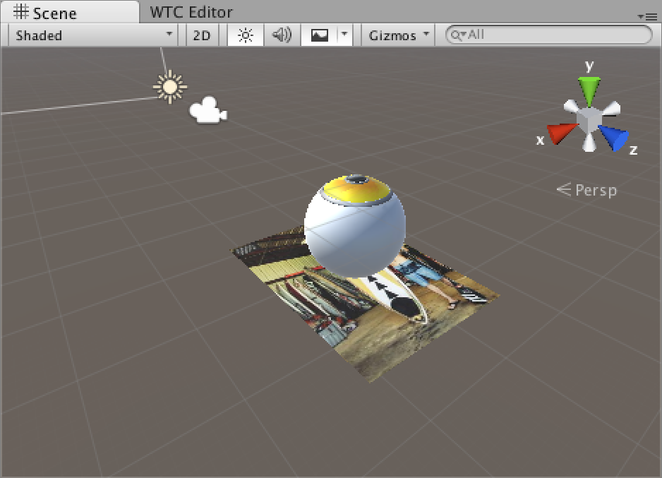
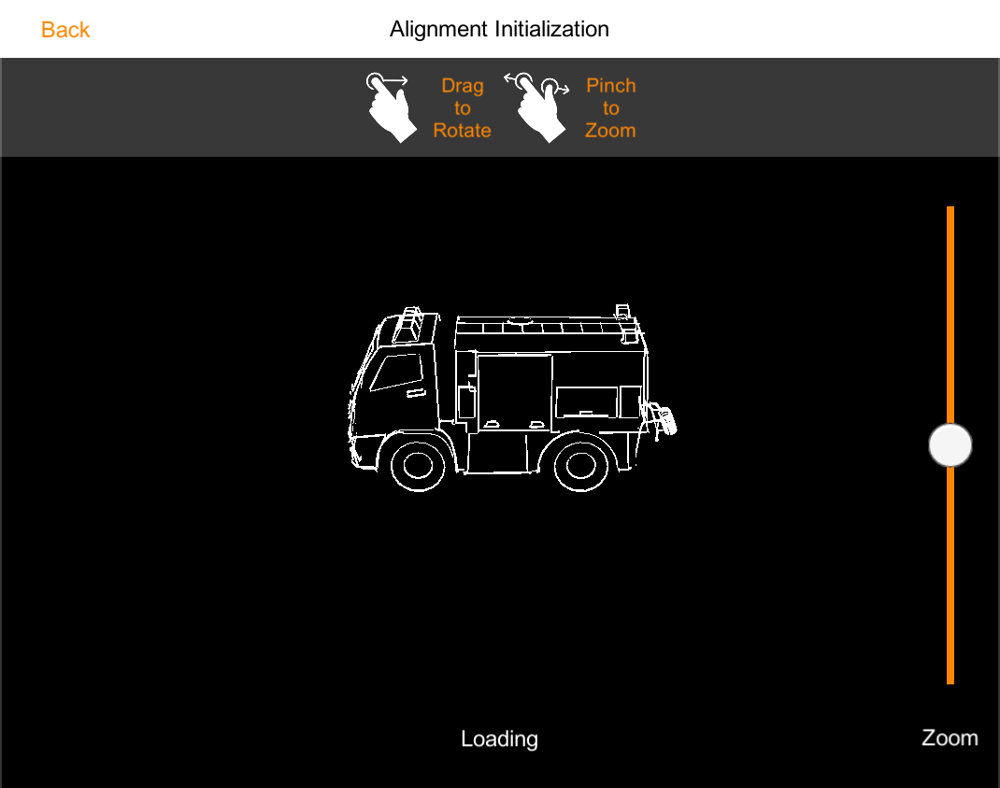
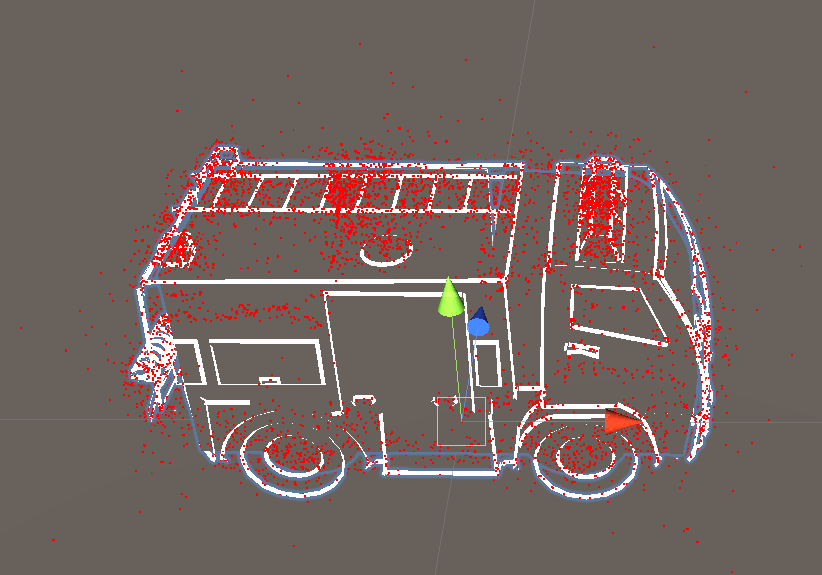

Getting started
Introduction to the Wikitude SDK
Welcome to the Wikitude SDK. This document is designed to help you from your very first steps with the Wikitude SDK all the way through to advanced concepts and examples for developing your augmented reality project.
- Unity 2020.3.2f1 LTS or higher
- Rendering engines
- OpenGL ES 2
- OpenGL ES 3.x
- Metal (iOS only)
- Direct3D 11 (UWP only)
Recommended Usage of this Documentation
The documentation is arranged in a way to guide you through the various steps in your development process. We recommend following each of the steps outlined below and reading the documentation in the order displayed.
Setup your project with the Unity Plugin
In this section we describe the necessary steps to setup a project in a detailed guide.
View the sample application
Viewing the sample requires the corresponding reference image. It is available directly in the description of the sample. You can either view it on your monitor or print it.
The Wikitude Native SDK - Augmented Reality for your own app
The Wikitude Native SDK is a software library and framework for mobile apps used to create augmented reality experiences. The Native SDK supports use cases which require image recognition and tracking technology (vision based augmented reality).
To use the Wikitude Native SDK within a Unity project, simply import the Wikitude.unitypackage into a existing Unity project and import all assets that are part of the .unitypackage. After the import is done, use the WikitudeCamera prefab in combination with one of the Tracker prefabs.
Architecture of the Wikitude SDK

The image above shows the different components of the Wikitude SDK and possible approaches for creating augmented reality apps. Each of these approaches is based on certain development environments (IDE) and platforms:
- Computer Vision Engine: The computer vision engine is part of the core component of the Wikitude SDK and used by all platforms. It includes three major parts in its own: SLAM Engine, Image Recognition Engine and the Object Recognition engine. The CV Engine is not directly accessible but wrapped either by the Native API (Java, ObjC) or the JavaScript API.
- Wikitude SDK - Native API: Provides access to the Wikitude computer vision engine natively for Android (Java), iOS (ObjC) and Windows UWP. It also can load plugins via the Wikitude Plugins API.
- Wikitude SDK - JavaScript API: Allows to build augmented reality worlds on basis of HTML and JavaScript. It is available for Android and iOS. The JavaScript API provides access to the functionality of the computer vision engine, location based AR, the Plugins API, and dedicated rendering functionality.
- Wikitude SDK - Plugins API: An API to connect your own plugins to the Wikitude SDK. (NOTE: Wikitude SDK plugins have nothing to do with the Cordova or Unity Plugin concept.)
- Wikitude SDK - Cordova Plugin: On top of the JavaScript API the Cordova plugin allows to use the Wikitude SDK in combination with Apache Cordova.
- Wikitude SDK - Flutter Component: On top of the JavaScript API the Flutter component allows to use the Wikitude SDK in combination with Flutter.
- Wikitude SDK - Unity3D Plugin: On top of the Native API the Unity plugin allows to use the Wikitude SDK in combination with Unity.
- Wikitude SDK - Xamarin Component: On top of the JavaScript API the Xamarin component allows to use the Wikitude SDK in combination with Xamarin.
The Wikitude Developer Portal
The Wikitude Developer Section should be your first stop when you have specific development related questions. The portal hosts a very active Developer Community Forum where Wikitude staff members are constantly assisting other developers with helpful tips and advice. You can find How-To's and a constantly evolving FAQ section there as well.
Feedback and Contact
We are always interested in your feedback and suggestions how we can improve this documentation. Please use the contact form on our website or visit us on Linkedin, Facebook or Twitter.
Setup Guide Unity Plugin
The latest version can be downloaded as an archive from the Wikitude website.
The archive includes a pre-configured project with samples and an Unity package (which also includes the samples). If the plugin is intended to be imported into an existing project jump to the section import Wikitude.unitypackage. Otherwise, continue with the next section (and skip importing the Unity package afterwards).
Open the Sample Project
The sample project included in the downloaded archive can be opened by adding it in the Unity Hub as another project. The location of the project is inside the downloaded archive's Examples folder. The Unity version for the project should be set to a supported version.
Two steps remain to be done after opening the project in order to be able to test the samples in the Editor or to export an application:
- A license key has to be set
- The build target has to be either iOS or Android. This setting can be found in the
Filedropdown menu by choosingBuild Settings.
After these steps the samples can be tested by either building a mobile app or by hitting the play button in a sample scene. There are multiple live preview modes available for testing in the Unity Editor, which can be set in the WikitudeCamera component.
Import the Wikitude.unitypackage
The downloaded archive also includes the plugin and samples as a standard .unitypackage and can be imported through the usual Unity package import procedure.
In your Unity project, open the Assets dropdown menu and choose Import Package -> Custom Package.

Select the downloaded Wikitude.unitypackage in the presented open file browser and click open. You should import all items that are part of the Wikitude.unitypackage. If the samples are not needed, the Wikitude > Samples, Wikitude > Prefabs and StreamingAssets folders can be deselected from the list.

Three steps remain to be done after importing the assets into the project in order to be able to test the samples in the Editor or to export an application:
- A license key has to be set
- The build target has to be either iOS or Android. This setting can be found in the
Filedropdown menu by choosingBuild Settings. - Additionally, the following Player settings have to be set (by opening the
Projects settingsin theEditdropdown menu and underPlayer > iOS/Android > Other Settings).- The bundle identifier for iOS and Android has to be changed to
com.wikitude.unityexample. - For Android, the minimum API level should be set to 22 or higher and the targeted API level to 30. Additionally, the
Scripting Backendshould be set toIL2CPPwithARM64enabled in theTarget Architectures. - For iOS, the minimum targeted iOS version should be set to 12.0 or higher and a
Camera Usage Descriptionas well as aLocation Usage Descriptionshould be provided. Later Additionally, the Architecture should be set toARM64.
- The bundle identifier for iOS and Android has to be changed to
The location usage description is required because location services are used for Geo AR purposes in the iOS plugin. Wikitude uses a common codebase throughout the products and even though this functionality is not exposed for Unity developers at the moment, Xcode still detects the presence of Geo AR, triggering a warning if he description is missing.
If Android 11 (API Level 30) support is required, additional settings might be required depending on the used Unity version. Please refer to the Google documentation therefore.
Use the Wikitude Unity plugin
After the Wikitude.unitypackage was imported, its components and scripts can be used to define a custom augmented reality experience. The example section describes in more detail how those prefabs and scripts can be used to do so.
Export and Xcode Build Settings Changes
Once the application is setup in Unity and ready for testing on a real device, it needs to be exported as an Xcode project for iOS, Android Studio project for Android, or Visual Studio project for UWP. Alternatively, for Android you can build the .apk directly from Unity.
Export to Xcode
iOS developers need to open the exported project and manually do the steps listed below.
- Before exporting, make sure the
Target minimum iOS versionis set to 9.0 or later andCamera Usage Descriptionis set to an appropriate message in the Unity in Player Settings. These settings can also be done in the Xcode project, but setting them in Unity will ensure it they don't get overwritten when rebuilding your project. - After the Xcode project was exported, the
WikitudeSDKframework has to be added as anEmbedded Binary.
After these steps are done once, building with Append or by pressing Cmd + B will ensure that the settings are kept.
Export an .apk file
If you don't need an Android Studio project, building directly from Unity is the fastest way to run your app on an Android device.
- In Unity open
File | Build Settings... - Make sure
Androidis the current build target. If not, selectAndroidfrom the list and clickSwitch Platform - Click
Build And Runand choose where to save the .apk file. If you have an Android device connected, it will also install the app on it.
After this is done once, pressing Ctrl + B (Windows) or Cmd + B (Mac) will automatically create the .apk file and install it on your device, if it is connected.
Export to Android Studio
- In Unity open
File | Build Settings..., checkExport Projectand clickExport - Ensure the project folder contains no space, otherwise you will have troubles deploying the project.
- Open Android Studio and click
Open an existing Android Studio project
- Within the file selection dialog, navigate to the folder where you exported the project and select the folder named after your app.
- Android Studio may ask you to upgrade gradle, accept.
- Android Studio may complain about
minSdk versionandtargetSdk versionbeing set. Remove the line from theAndroidManifest.xml(<uses-sdk android:minSdkVersion="22" android:targetSdkVersion="30" />), and re-run gradle. - The project is now running in Android Studio
Export to Visual Studio
When building for UWP, the following settings need to be enabled to make sure that the SDK is compatible with Unity.
From the Build Settings menu, please make sure that:
Target Deviceis set toPCBuild Typeis set toD3DBuild and Run onis set toLocal Machine
Additionally, from the Player Settings -> Other Settings:
Graphics APIsis set toDirect3D11Scripting Backendis set toIL2CPP
And from Player Settings -> Publishing Settings:
CapabilitieshasInternetClientandWebCamenabled
At this point, the project can be exported to Visual Studio. Once the project is exported, you can build the project for x64.
Unity Requirements and supported versions
- Unity 2020.3.2f1 LTS or higher
- Rendering engines
- OpenGL ES 2
- OpenGL ES 3.x
- Metal (iOS only)
- Direct3D 11 (UWP only)
Supported Devices
Wikitude SDK is running on devices fulfilling the following requirements:
| Sensor-based AR (Geo-AR) | Image recognition and tracking | Instant tracking & |
|
|---|---|---|---|
Android (Native API) |
|||
Android (Native API) |
|
|
|
iOS (Native API) |
|||
iOS (Native API) |
|
|
|
UWP Devices |
|||
UWP Devices |
not available |
|
|
License Key
The Wikitude SDK requires a valid license key to be able to run properly. An empty or missing license key will block the augmented reality view from showing any meaningful content. You will see a watermark across the screen with the words License Key Missing.
How to obtain a free trial license
When downloading the Wikitude SDK you will be forwarded to the license generation page, where you can generate a trial license key for your project.

Copy the key into your app, which will unlock the trial mode of the Wikitude SDK. The trial mode of the Wikitude SDK contains the full feature set of the Wikitude SDK for a limited amount of time and will show the Wikitude logo in the corner of the camera view. A commercial key will remove this logo and show a blank camera view.
Each trial license key is valid for every application ID on every operating system. You can use the same trial license key in multiple apps.
Where should I enter the license key
Unity Plugin
There are two ways to set a certain license key for the Wikitude Unity Plugin. On way is to paste the license key into the proper field in the WikitudeCamera prefab.
Another way would be to set the license key via script. It has to be set before the WikitudeCamera component is started. In the sample scenes, this can be done in the sample scene controller script's Awake() method.
private void Awake() {
FindObjectOfType<WikitudeSDK>().WikitudeLicenseKey = "YOUR_KEY";
}
Also, please make sure that the Bundle Identifer is correctly set and matches the one used to generate the license key.
When developing for the UWP platform, the Bundle Identifier should be set in the Package Name field of the Publishing Settings tab.
iOS App Store submissions
strip_wikitude_framework.sh and wikitude_bitcode.sh from the framework before archiving your build. Move them somewhere else in your system and follow the steps in the following sections.
Removing simulator architectures
To work around an Xcode App Store submission bug, the WikitudeNativeSDK.framework contains a shell script that removes the simulator architectures from the .framework. This script can either be run from the Terminal application or a Run Script Phase in Xcode.
Here is a snippet for the Terminal application. Note that the path to the script and the path to the WikitudeNativeSDK.framework needs to be known.
sh *PATH/TO/THE/WIKITUDE/SDK/PACKAGE*/Tools/Scripts/strip_wikitude_framework.sh -s -p *PATH/TO/THE/WikitudeNativeSDK.framework
To run this script in a Run Script Phase, simply copy the following snippet into a new Run Script Phase text field. Please make sure that the Run Script Phase is positioned right after the Embed Frameworks build phase (You can reorder individual build phases).
sh "${BUILT_PRODUCTS_DIR}/${FRAMEWORKS_FOLDER_PATH}/WikitudeNativeSDK.framework/strip_wikitude_framework.sh" -s -p "${BUILT_PRODUCTS_DIR}/${FRAMEWORKS_FOLDER_PATH}/WikitudeNativeSDK.framework"

strip_wikitude_framework.sh from the framework to elsewhere in your system, the final Run Script Phase command will look like this:
sh
sh *PATH/TO/THE/SCRIPT*/strip_wikitude_framework.sh -s -p "${BUILT_PRODUCTS_DIR}/${FRAMEWORKS_FOLDER_PATH}/WikitudeSDK.framework"
Bitcode
The WikitudeNativeSDK.framework contains Bitcode information to support App Thinning. Building a .framework with bitcode enabled leads to a larger file size. In case the application that uses the WikitudeNativeSDK.framework does not support bitcode and file size is a problem, bitcode information can be removed using the wikitude_bitcode.sh shell script. This script can either be run from the Terminal application or a Run Script Phase in Xcode. Wikitude recommends to use the Terminal application to not unnecessarily increase build time.
Here is a snippet for the Terminal application. Note that the path to the script and the path to the WikitudeNativeSDK.framework needs to be known.
sh *PATH/TO/THE/WIKITUDE/SDK/PACKAGE*/Tools/Scripts/wikitude_bitcode.sh -s -p *PATH/TO/THE/WikitudeNativeSDK.framework
Here is a snippet for the Run Script Phase. Simply copy this snippet into the script phase text field:
sh "${BUILT_PRODUCTS_DIR}/${FRAMEWORKS_FOLDER_PATH}/WikitudeNativeSDK.framework/wikitude_bitcode.sh" -s -p "${BUILT_PRODUCTS_DIR}/${FRAMEWORKS_FOLDER_PATH}/WikitudeNativeSDK.framework"
wikitude_bitcode.sh from the framework to elsewhere in your system, the final Run Script Phase command will look like this:
sh
sh *PATH/TO/THE/SCRIPT*/wikitude_bitcode.sh -s -p "${BUILT_PRODUCTS_DIR}/${FRAMEWORKS_FOLDER_PATH}/WikitudeSDK.framework"
Unity Editor Live Preview
The Live Preview feature allows you to test all the Wikitude SDK functionality directly in the Unity Editor, without having to constantly build on a device.
To enable it, select the WikitudeCamera game object and in the inspector make sure that Enable Live Preview is turned on. When enabled, the WikitudeCamera script will choose one of the following modes as an input source.
Static Image
This mode allows you to track a static image in the Unity editor, which is mostly useful to quickly test the same image repeatedly. The Static Image field will appear when this mode is selected and you can use any image from your project, as long as it has Read/Write Enabled turned on in the Texture Importer settings.
The Camera To Horizon Angle defines the angle between the forward vector of the camera and the horizontal plane.
A value of 0 indicates that the camera is pointed directly forward, while a value of 90 means that the camera is pointed directly down to the ground.
This angle is used to define the orientation of the ground plane relative to the image, when using instant tracking.
Web Cam
In this mode, the WikitudeCamera will try to find all the available cameras connected to your computer and use one of them as input for tracking. The WebCams dropdown allows you to select which camera should be used. If set to Default, the first camera found will be used.
The Camera To Horizon Angle works the same way as it does for the Static Image mode.
Remote Camera
This mode allows you to use the camera on your device, if it is connected to your computer and has the Unity Remote app installed and running. Please check the Unity Documentation for more information on how to get the remote app to work. This mode is very useful in case your computer doesn't have any cameras attached.
Additionally, Instant Tracking will only work properly in this mode, because we can use all the sensors from the connected device, which are not available in other modes.
Examples & Tutorials
The Wikitude Unity example project gives you a quick overview of the capabilities offered by the Wikitude Native SDK in combination with Unity. You can find the project in the Wikitude Unity download package. Once the .zip file is extracted, the project is located in the /Examples folder. In the Assets/Wikitude/Samples/Scenes folder you will find scenes focused on specific parts of the SDK. The examples are also included in the Unity package located in the /Package folder.
Structure
Each example focuses on a part of the SDK specified by its name. Each example follows a similar structure. They all include the WikitudeCamera prefab, a UI root GameObject and a Controller GameObject with a corresponding script used to provide the custom behaviour for each sample. Most samples also include an ImageTracker, CloudTracker, ObjectTracker or InstantTracker prefab, while some create them it during runtime.
Usage
To run the application, open the Unity scene called Main Menu which is located in the Assets/Scenes folder. Once the project is loaded, it needs to be exported as either Xcode project (iOS) or Android Studio project (Android). Alternatively, you can build an Android .apk directly.
Please see the Setup Guide page for more info on the build steps required for each platform.
Target Images
Image recognition samples
Click here to download all target images
 Image Recognition">
Image Recognition">

 Multiple Targets">
Multiple Targets">

 Cloud Recognition">
Cloud Recognition">


Object recognition samples

Image Recognition
Introduction
This example shows how to recognize images in the viewfinder and overlay it with images. Furthermore it shows how to recognize multiple different images and how to react on user clicks on the overlaid elements.
For a better understanding, here are some terms that will be used in the following and other section of this documentation related to augmented reality.
Target: A target image and its associated extracted data that is used by the tracker to recognize an image.
Target collection: An archive storing a collection of targets that can be recognized by the tracker. A target collection can come from two different resource types
- Plain: A regular ZIP file containing images in plain JPG or PNG format
- Pre-processed: Regular images that are converted into a WTC file (Wikitude Target collection) for faster processing and storing more images offline.
ImageTracker: The tracker analyzes the live camera image and detects the targets stored in its associated target collection. Multiple trackers can be created, however only one tracker can be active for recognition at any given time.
Make sure to read the chapter on how to create Image Targets before using Image Recognition on your own.
Extended Recognition Range
Introduced with SDK 7.0, the Wikitude SDK Image Recognition engine can make use of HD camera frames to detect images from further away. Further away in this context means distances 3x further away, compared to not enabling this mode (e.g. A4-sized target can reach recognition distances in the area of 2.4 meters/ 8 feet). This feature is called Image Recognition Extended Range and can be activated through a setting in the ImageTracker class. The setting extendedRangeRecognition is optional and accepts the following three constants
ONOFFAUTO(default)
see ImageRecognitionRangeExtension
Processing a HD camera frame in the pipe-line is computationally more expensive - this means that this feature is only activated, if the phone can handle this additional effort without sacrificing user experience. The AUTO setting will determine that based on available CPU power and camera access (e.g. Camera2 API for Android) and is the default setting in the SDK.
Simple Image Recognition in Unity
The Wikitude Unity Plugin is based on pre-configured prefabs. There are two types of prefabs available. One is the WikitudeCamera prefab and the other ones are tracker prefabs.
WikitudeCamera Prefab
The WikitudeCamera prefab takes care about rendering the live camera stream fullscreen behind all your augmentations. Attached to this prefab is a script component which has one parameter that is not pre filled. This parameter is for the Wikitude SDK license key and has to be filled with your very own license key. You can either buy a commercial license from our webpage or download a free trial license key and play around with our Native SDK in combination with Unity.
ImageTracker Prefab
To add a tracker prefab to the scene, simply drag the ImageTracker prefab into the scene hierarchy.
An ImageTracker itself needs a Wikitude Target Collection (.wtc file) which contains information needed to detect those reference images. Target collections can be generated and downloaded from the Wikitude Studio - a free web based tool, that you can access with your developer account. You can also generate .wtc files right inside Unity with the WTC Editor. Place the .wtc file into the StreamingAssets folder, so that the Wikitude Native SDK can load them at runtime. To specify which .wtc file should be used, select the ImageTracker game object in the scene. Make sure that the Target Source is set to Target Collection Resource and using the dropdown next to Target Collection you can choose the desired one.
To react on events like successfully loading of a .wtc file, you can use the Unity Events listed in in the inspector of the ImageTracker. These events are split into two groups. The first group contains events triggered by the TargetCollectionResource when the wtc file was loaded of if there was an error. The second group are events triggered by the ImageTracker itself if it was successfully initialized with the desired .wtc file or not. On the desired event, click the plus sign to add a new subscriber, drag the GameObject that should receive the event over the None (Object) field and select the function you want to be called from the No Function dropdown.
When subscribing to events that have a single basic parameter type, make sure to select your function from top list marked with Dynamic, rather than the static version from the bottom. This ensures that the parameters are passed correctly from the Wikitude plugin and are not overwritten by Unity.

For more information on working with Unity Events, please check the Unity Manual and Events Tutorial.
Define custom augmentations
Also part of the ImageTracker prefab is an ImageTrackable object. A trackable defines which targets from your collection you want to be tracked.
If the tracker is using a .wtc file located in the StreamingAssets folder, the ImageTrackable inspector will show a list of all the targets in the .wtc file. By toggling the Active button, you can select which targets will be tracked by this trackable, or you can choose Select All at the top to include all the targets. You can similarly choose which targets should use extended tracking.

By pressing the Preview button, the target will be displayed in the 3D view of the scene, providing a convenient way to place your augmentation relative to the target.

If the .wtc file is located somewhere else, for example if you are downloading it at runtime, or when using CloudRecognitionService instead, you can still select which targets will be included by entering the target name into the TargetPattern text field. Possible values are full target image names (e.g. pageOne, pageTwo) or wildcards (page*). You can use * if you want to include all targets.
targetName used with the ImageTrackable component correspond to one of the target names in your target collection. You can also use wildcards to match any target or only a specific subset of targets.
In order to place 3D objects at the location where the reference image was found in the camera stream, add any GameObject as a child to the ImageTrackable object. During runtime, only the transform of the camera will be changed, so you can place and scale the ImageTrackable GameObject and its children however it is most convenient for you. Keep in mind that if you move the ImageTrackable GameObject during runtime, the camera will follow it, so you won't see any effective changes. If you need to move augmentations relative to the camera, for example when dragging augmentations based on user input, please make sure not to move Trackable GameObject, but its children.
The Auto Toggle Visibility toggle is enabled by default. When this is checked, the ImageTrackable GameObject will be automatically disabled when the target is out of view and enabled back when a target is tracked again.
To handle visibility manually, you can turn this toggle off and subscribe to the OnImageRecognized and OnImageLost events on the trackable. This can be useful when you want to show different augmentations based on which target was tracked. The string parameter of these events will indicate which target was tracked or lost.
The OnImageRecognized and OnImageLost events are called even when the Auto Toggle Visibility toggle is turned on. As an example, the Image Recognition - Extended Tracking updates the UI when the target is lost by handling OnImageLost.
Multiple Targets
An image tracker can track multiple targets at the same time. This can be configured in the ImageTracker inspector, by setting the Concurrent Targets to a value larger than 1. However, keep in mind that if you don't plan to use multiple targets, it is best to leave the value at 1 for optimal performance.
To define augmentations for multiple targets, you will need to set a prefab to the Drawable field in the ImageTrackable inspector. At runtime, when a new target is recognized the Drawable prefab will be instantiated and placed in the scene as a child of the Trackable and when the target is lost, it will be destroyed. When multiple targets are being tracked, their corresponding Drawables are positioned in the game world to match what the camera sees. This also means that you can infer the relative positions between targets directly in the game world.
This behaviour was designed to allow easy setup for simple use cases, but if you may need more control over the lifetime of the augmentations. If that is the case, you can leave the Drawable field empty in the ImageTrackable inspector and add callbacks to the OnImageRecognized and OnImageLost events. When OnImageRecognized is called, the ImageTarget that is passed as a parameter will contain a Drawable GameObject property. This empty GameObject behaves the same way as the Drawable described above and you should use it as a parent for your augmentations, to make sure they are positioned properly.
public void OnImageRecognized(ImageTarget recognizedTarget) {
// Create the custom augmentation.
// You can use recognizedTarget.Name and recognizedTarget.ID
// if you need custom augmentations for each target and instance.
GameObject newAugmentation = GameObject.CreatePrimitive(PrimitiveType.Sphere);
// Set the newAugmentation to be a child of the Drawable.
newAugmentation.transform.parent = recognizedTarget.Drawable.transform;
// Position the augmentation relative to the Drawable by using the localPosition.
newAugmentation.transform.localPosition = Vector3.zero;
}
Keep in mind that the Drawable is still destroyed when the target is lost, so if you still have the augmentations attached to it, they will be destroyed as well. The OnImageLost event is called before the Drawable is destroyed, so you can use that event to move the augmentations somewhere else if they need to persist after the target was lost.
In case the same target is detected multiple times simultaneously, the ID property in the ImageTarget parameter will help you distinguish between them.
Extended Tracking
Extended tracking is an optional mode you can set for each target separately. In this mode the Wikitude SDK will continue to scan the environment even if the original target image is not in view anymore. So the tracking extends beyond the limits of the original target image. The performance of this feature depends on various factors like computing power of the device, background texture and objects.
If the .wtc file containing the targets is located in the StreamingAssets folder, you should be able to see a list of all the targets in the inspector of the Image Trackable. To enable extended tracking, simply tick the Extended tracking option next to each target you want to extend, or select Extend All at the top of the list to extend all the targets.
If the .wtc file is loaded at runtime from a custom location, the Image Trackable will have a simpler interface, that will allow you to enable extended tracking manually and specify the names of the targets you would want to be extended. You can set the first name in the list to the wildcard * to extend all targets in the collection.
When Extended Tracking is enabled, the ImageTracker will fire OnExtendedTrackingQualityChangedEvents, which will let you know how well extended tracking is working based on the factors mentioned above.
Runtime Tracker
Image trackers can be created at runtime with no restrictions on the location of the target collection used. To do this, simply create a new GameObject and add the ImageTracker component to it, select TargetCollectionResource as the TargetSourceType and create a new TargetCollectionResource object. If you are using a collection located in the StreamingAssets folder, the TargetPath property should be the path relative to the StreamingAssets folder and UseCustomUrl property should be false.
If you want to use a collection located elsewhere on the device or on the web, the TargetPath property should be set to the absolute path to the target, prefixed by the protocol file://, http:// or https:// as appropriate. The UseCustomUrl in this case should be set to true. Please see the sample Client Tracker - Runtime Tracker as an example of how to set this up.
Trackables can also be created at runtime, but make sure to add them as a child of the tracker before the Start() method is called on the parent tracker, otherwise it won't get registered in time.
GameObject trackerObject = new GameObject("ImageTracker");
ImageTracker imageTracker = trackerObject.AddComponent<ImageTracker>();
imageTracker.TargetSourceType = TargetSourceType.TargetCollectionResource;
imageTracker.TargetCollectionResource = new TargetCollectionResource();
imageTracker.TargetCollectionResource.UseCustomURL = true;
imageTracker.TargetCollectionResource.TargetPath = "https://url.to.your.collection/collection.wtc";
GameObject trackableObject = GameObject.Instantiate(TrackablePrefab);
trackableObject.transform.SetParent(imageTracker.transform, false);
Creating trackers at runtime is also possible when using the CloudRecognitionService instead of a TargetCollectionResource
Multiple Trackers
You can have multiple trackers in the same scene, but only one can be active at a time. If you enable a second one, the first one will be automatically disabled by the plugin.
Instant Tracking
The following sections detail the instant tracking feature of the Wikitude Native SDK by introducing a minimal implementation, showcasing the simplicity the Wikitude Native SDK provides.
SMART - Seamless AR Tracking
SMART is a seamless API which integrates ARKit, ARCore and Wikitudes SLAM in a single augmented reality SDK, cross-platform, for any device. It ensures the delivery of the best possible augmented reality experience on a wider range of devices, covering 92,6% of iOS devices and about 35% of Android devices available in the market.
SMART is enabled by default but can be disabled by unchecking the SMART Enabled checkbox located at the top of the Instant Tracker inspector.
Alternatively, it can be disabled in code using the SMARTEnabled property on the InstantTracker. Please keep in mind that this needs to happen before the InstantTracker initializes its native counterpart, which happens during the OnEnable method.
public InstantTracker tracker;
void Awake() {
tracker.SMARTEnabled = false;
}
To check if the device supports platform assistance for tracking, WikitudeSDK.IsPlatformAssistedTrackingSupported can be called. Please keep in mind that this needs to be called after the Start method of the WikitudeCamera was executed, to make sure that the native components are properly initialized.
The IsPlatformAssistedTrackingSupported method doesn't return the result immediately, but takes an Action as a parameter, that will be called when the result is available
Tracker.IsPlatformAssistedTrackingSupported((SmartAvailability smartAvailability) => {
if (smartAvailability == SmartAvailability.Supported) {
/* Device offers platform tracking capabilities (ARKit or ARCore) */
}
});
SMART provides improved tracking capabilities at the expense of control. Because of that some Wikitude SDK features are not available when platform tracking capabilities are used by enabling SMART.
| Features | SMART ON and platform assisted tracking supported | SMART OFF |
|---|---|---|
| Improved Tracking | x | |
| Plane Orientation | x | |
| Camera Control | x | |
| Save and Load Instant Targets | x | |
| Plane Detection | x |
Introduction
Instant tracking is an algorithm that, contrary to those previously introduced in the Wikitude SDK, does not aim to recognize a predefined target and start the tracking procedure thereafter, but immediately start tracking in an arbitrary environment. This enables very specific use cases to be implemented.
The algorithm works in two distinct states; the first of which is the initialization state. In this state the user is required to define the origin of the tracking procedure by simply pointing the device and thereby aligning an indicator. Once the alignment is found to be satisfactory by the user (which the users needs to actively confirm), a transition to the tracking state is performed. In this state, the environment is being tracked, which allows for augmentations to be placed within the scene.
The instant tracking algorithm requires another input value to be provided in the initialization state. Specifically, the height of the tracking device above ground is required in order to accurately adjust the scale of augmentations within the scene. To this end, the example features a range input element that allows the height to be set in meters.
During the initialization, another parameter can be set which influences the alignment of the instant tracking ground plane. This ground plane is represented by the initialization indicator and can be rotated in order to start instant tracking at e.g. a wall instead of the floor.
Basic Instant Tracking
The Instant Tracking example provides a simple implementation of an application that allows users to place furniture in their environment.
Scene Setup
The scene consists mainly of the following parts:
WikitudeCamera: the standard prefab for theWikitudeCamerais used, with the exception that it is running in SD at 30 FPS. This is the recommended setup forInstant Tracking, as the algorithm is computationally intense and users might experience slowdowns on older devices.UI: the root of theUIwe will be using in this sample. SinceInstant Trackingworks in two distinct phases, theUIis also split in two, allowing to completely switch the interface. When theInstant Trackeris inInitializingmode, theUIonly displays a slider to control the height, as explained previously and a button to switch toTrackingmode. After the switch is done, theUIwill display a button for each furniture model that can be added to the scene. Each button has anOnBeginDragevent trigger on it that notifies the controller when a new furniture model needs to be added to the scene. The event trigger also has anintparameter, specifying which model should be created.Controller: container for multiple custom script components:InstantTrackerController: coordinates the activity between theInstant Tracker, theUI, the augmentations and the touch input.Gesture Controllers: react to touch input events and move or scale the augmentations accordingly.Grid Renderer: renders a grid with 25 cm spacing that can be helpful during initialization and tracking
Ground: a simple transparent plane with a custom shader that enables shadows on it. The plane also has a collider on it and can be used for physics interaction.Instant Tracker: the component that actually does all the tracking.
Instant Tracker Controller
The controller script coordinates all the other components of the scene. It contains references to all the UI elements and responds to events from them.
In the Awake function, the Application.targetFrameRate is set to 60. Even though the camera and tracking is running only at 30 FPS, having Unity running at a higher FPS allows for smoother user interaction.
When a drag is detected and the OnBeginDrag callback is called, we create a new model based on the index we receive and place it at the touch position, facing the camera.
// Select the correct prefab based on the modelIndex passed by the Event Trigger.
GameObject modelPrefab = Models[modelIndex];
// Instantiate that prefab into the scene and add it in our list of visible models.
Transform model = Instantiate(modelPrefab).transform;
_activeModels.Add(model.gameObject);
// Set model position by casting a ray from the touch position and finding where it intersects with the ground plane
var cameraRay = Camera.main.ScreenPointToRay(Input.mousePosition);
Plane p = new Plane(Vector3.up, Vector3.zero);
float enter;
if (p.Raycast(cameraRay, out enter)) {
model.position = cameraRay.GetPoint(enter);
}
// Set model orientation to face toward the camera
Quaternion modelRotation = Quaternion.LookRotation(Vector3.ProjectOnPlane(-Camera.main.transform.forward, Vector3.up), Vector3.up);
model.rotation = modelRotation;
When the tracker loses the scene, which can happen when moving the device too fast, we make sure that all the models and the grid are hidden. Because the camera is not moved anymore when tracking is lost, the augmentations would appear to be frozen on the screen if they were not hidden. We also need to disable the furniture buttons, to prevent users from adding new objects.
While the SDK doesn't currently work in Edit Mode, you can still test the demo in the Editor by using Unity Remote. The SDK will also send most of the callbacks you expect in Edit Mode as well, allowing you to prototype gesture interaction without constantly building on a device.
Instant Scene Picking
The Scene Picking example shows how you can convert a touch position to a 3D position that maps to the environment. When using this API, users could for example place objects not only on the ground plane, but also on top of real world objects.
Scene Setup
The scene structure is similar to the one described in the Instant Tracking example, but has been simplified a bit. Specifically, the UI doesn't contain any furniture related controls, and there are no Gesture Controllers anymore.
Scene Picking Controller
The controller script is also much simpler than that of the Instant Tracking example. Its main concerns are listening for touch inputs, converting those inputs to 3D coordinates and placing an augmentation there. It is also responsible for the managing the state of the InstantTracker.
To convert input touch positions to 3D coordinates, the script calls the ConvertScreenCoordinate method on the InstantTracker, passing it the touch position as Unity provides it.
void Update() {
if (_isTracking && Input.GetMouseButtonUp(0)) {
Tracker.ConvertScreenCoordinate(Input.mousePosition);
}
}
Because the conversion can take a long time, it is done on a separate thread and a callback event is provided in the InstantTracker to let you know when the results are available. The example script registers to this event in the Awake method.
void Awake() {
Tracker.OnScreenConversionComputed.AddListener(OnScreenConversionComputed);
}
Finally, when the conversion was computed, it adds the augmentation to the specified location. It firsts needs to check if the conversion was successful, as it can fail if there is not enough information in the point cloud where the touch event happened. It adds the augmentation as a child of the _trackable, because the coordinates are in the local space of the InstantTrackable.
public void OnScreenConversionComputed(bool success, Vector2 screenCoordinate, Vector3 pointCloudCoordinate) {
if (success) {
var newAugmentation = GameObject.Instantiate(Augmentation, _trackable.transform) as GameObject;
// The pointCloudCoordinate values are in the local space of the trackable.
newAugmentation.transform.localPosition = pointCloudCoordinate;
_augmentations.Add(newAugmentation);
}
}
Persistent Instant Targets
The save and load instant targets feature allows for AR experiences to be persistently accessed by multiple users across devices and operating systems. Furthermore instant targets can be expanded on the fly. This section is concerned with showcasing this feature based on the corresponding samples of the sample application. This feature is not available with platform assisted tracking enabled.
The Save Instant Target and Load Instant Target samples shows how to use this feature in Unity.
Scene Setup
The scenes are similar to the one described in the Instant Tracking example, except that the Controller GameObject has an additional script attached, the SaveInstantTarget or LoadInstantTarget script, respectively.
Save Instant Target
To save an instant target, the InstantTracker.SaveCurrentInstantTracker method needs to be called while the InstantTracker is in tracking mode. The method accepts two Action parameters that will be called in case of success or failure. The directories of the provided path also needs to exist.
private void SaveTarget() {
var path = Application.persistentDataPath + "/InstantTarget.wto";
Tracker.SaveCurrentInstantTarget(path, SaveSuccessHandler, SaveErrorHandler);
InfoMessage.text = "Saving instant target to: " + path;
}
private void SaveSuccessHandler(string path) {
/* Handle success */
}
private void SaveErrorHandler(Error error) {
/* Handle errors */
}
The handlers can also be implemented with lambda functions.
Load Instant Target
To load an instant target, the InstantTracker.LoadInstantTarget method needs to be called with the path to a previously saved instant target. Similar to SaveCurrentInstantTracker, this method also accepts two Action parameters that will be called in case of success or failure. Additionally, an expansion policy can be set through the InstantTargetRestorationConfiguration. This controls whether the instant target should be further expanded or not.
private void LoadTarget() {
// A TargetCollectionResource is needed to manage file loading.
var targetCollectionResource = new TargetCollectionResource();
// UseCustomURL is used to specify that the file is not inside the "StreamingAssets" folder
targetCollectionResource.UseCustomURL = true;
// The "file://" is used to indicate that the file is located on disk, and not on a server.
targetCollectionResource.TargetPath = "file://" + Application.persistentDataPath + "/InstantTarget.wto";
var configuration = new InstantTargetRestorationConfiguration();
// Indicate that we allow the target to be expanded after it was loaded.
configuration.ExpansionPolicy = InstantTargetExpansionPolicy.Allow;
Tracker.LoadInstantTarget(targetCollectionResource, configuration, LoadSuccessHandler, LoadErrorHandler);
}
After the instant target is loaded the tracker will immediately try to find and track it.
Plane Detection - Experimental
Once Plane detection is enabled, the Wikitude SDK will search for planar surfaces in the representation of the scene (the point cloud). Sufficient and accurate information will then produce planar surfaces, that developers can use to interact with the actual scene. Hit testing will use found planes for a better estimate of depth values in the scene. The algorithm can detect different types of planes
Horizontal Up(e.g. floor, carpet, table)Horizontal Down(e.g. ceiling)Vertical(walls,...)Arbitrary(ramps, staircases,...)
Developers can choose which type of planes they are interested in and filter correspondingly.
To enable plane detection for an InstantTracker, the Plane Detection option needs to be enabled in the Instant Tracker inspector, or through the C# API.
Once this is enabled, augmentations can be drawn using two methods:
- Attaching a prefab to the
Plane Drawableproperty in theInstant Trackableinspector. This will instantiate the prefab whenever a new plane is detected and attach it to the plane. When the plane is lost, the instantiation will be destroyed. - Subscribing to the
On Plane Recognized,On Plane TrackedandOn Plane Lostin theInstant Trackableinspector. This will allow you to react to plane detection events in a custom way, as well as providing additional information about the plane, such as extents and convex hull.
Here is an example of how to handle the three plane callbacks. Please not that some error validation and mesh generation have been omitted from this example. Please see the full example code in the PlaneRenderer.cs script.
public void OnPlaneRecognized(Wikitude.Plane recognizedPlane) {
// Create a new augmentation.
var renderPlane = new GameObject("Plane");
// Attach the augmentation to the plane.
renderPlane.transform.SetParent(recognizedPlane.Drawable.transform);
// Create a new mesh to represent the recognized plane.
var mesh = new Mesh();
renderPlane.AddComponent<MeshFilter>().mesh = mesh;
renderPlane.AddComponent<MeshRenderer>().material = new Material(RenderPlaneMaterial);
// Update the augmentation with data from the plane.
UpdateMesh(renderPlane, mesh, recognizedPlane);
// Keep track of currently recognized planes so that their corresponding augmentations can be updated.
_renderPlanes.Add(recognizedPlane.ID, renderPlane);
}
public void OnPlaneTracked(Wikitude.Plane trackedPlane) {
// Find the corresponding augmentation for the plane that is being updated.
GameObject renderPlane;
if (_renderPlanes.TryGetValue(trackedPlane.ID, out renderPlane)) {
// Update the augmentation with new data from the plane.
UpdateMesh(renderPlane, renderPlane.GetComponent<MeshFilter>().sharedMesh, trackedPlane);
}
}
public void OnPlaneLost(Wikitude.Plane lostPlane) {
// Find the corresponding augmentation for the plane that was lost.
GameObject renderPlane;
if (_renderPlanes.TryGetValue(lostPlane.ID, out renderPlane)) {
// Destroy the associated augmentation and remove the reference to it.
_renderPlanes.Remove(lostPlane.ID);
Destroy(renderPlane);
}
}
When configuring Plane Detection, the Instant Tracker offers two more options:
Plane Filter: This option allows you to select which type of plane should be detected, and which ones should be ignored. The type of a recognized plane can be found through theWikitude.Plane.PlaneTypeproperty. Filtering out undesired planes types can improve performance as well, since fewer planes need to be processed.Convex Hull: This option enables the computation of the convex hull of a plane. The convex hull can be access through theWikitude.Plane.ConvexHullproperty as afloat[], where every two values represent the X and Z values of a point relative to the plane, which can be rendered as a triangle fan. If the convex hull is not needed, it's best to disable this option, to avoid unnecessary processing.
When calling ConvertScreenCoordinate on the InstantTracker, any planes that were detected will be taken into consideration automatically.
Object Tracking
Introduction to Object and Scene Recognition
Object Recognition and Tracking extend the capabilities of the Wikitude SDK to recognize and track arbitrary objects for augmented reality experiences. The feature is based on Wikitude's SLAM engine that is used throughout the SDK for any kind of tracking the environment. Object Recognition and Tracking let you detect objects and entire scenes, that were pre-defined by you. Suitable objects include
- Toys
- Monuments and statues
- Industrial objects
- Tools
- Household supplies
Recognition works best for objects that have only a limited number of changing/dynamic parts.
Scene Recognition
With version SDK 8 the object recognition engine can also be used to recognize larger structures that go beyond table-sized objects. The name Scene recognition reflects this in particular. The new image-based conversion method allows for Object targets that are a lot larger in size, that can be successfully recognized and tracked.
- Rooms
- Face of buildings
- Squares and courtyards
Make sure to read the chapter on how to create Object Targets before using Object Recognition on your own.
Object Tracking in Unity
Before proceeding with the Object Tracking sample, please make sure you are familiar with how Image Tracking works first by reading about the Image Tracking samples. Most concepts described there work in a similar way for Object Tracking.
ObjectTracker Prefab
To add a tracker prefab to the scene, simply drag the ObjectTracker prefab into the scene hierarchy.
An ObjectTracker itself needs a Wikitude Object Collection (.wto file) which contains information needed to detect the reference objects. Target collections can be generated and downloaded from Wikitude Studio - a free web based tool, that you can access with your developer account. You can use the .wto file in the same way as .wtc files are used for the ImageTracker.
Recognition events also work exactly like recognition events for the ImageTracker.
Define custom augmentations
Because an ObjectTracker can only recognize and track a single object at a time, you can define augmentations either by defining a Drawable prefab in the ObjectTrackable, or by placing them directly as child objects to the trackable and enabling Auto Toggle Visibility.
In the Object Tracking - Object Tracking scene, the Drawable prefab workflow is illustrated. A FiretruckAugmentation prefab was created in the SamplePrefabs folder and assigned to the ObjectTrackable. The transform of the prefab has been modified so that the augmentations will match the real object during tracking.
Within the FiretruckAugmentation prefab you will also find the FiretruckOccluder GameObject which contains two meshes that are used as occluders. You can read more about occluders and how they work in Unity here.
Extended Tracking for Objects
Extended tracking is an optional mode you can set for each target separately. In this mode the Wikitude SDK will try to continue to scan the environment of the user even if the original target object is not in view anymore. So the tracking extends beyond the limits of the original target object. The performance of this feature depends on various factors like computing power of the device, background texture and objects.
To enable Extended Object Tracking, select the ObjectTrackable and enable the Extended Tracking option in the inspector. In the Targets For Extended Tracking you can specify which targets should be extended. If you want all targets to be extended, simply set 1 in the Size field and * in the Element 0 field.
Alignment initialization
The alignment initializer can be used for objects that are hard to recognize automatically (usually objects that have no clear texture or texture is unreliable). An unreliable texture could be an object that has different colors or areas that keep changing (e.g. mud, stickers,...). The alignment initializer adds an element in the UI that signals the user from which viewpoint (perspective) the object can be recognized and tracking can be started. This visual guide can be helpful to communicate what the user is expected to do. The actual UI implementation of the alignment initializer can be freely chosen by the developer and can range from showing an outline to a rendered 3D view that can be manipulated by the user.
To get a better understanding of how to achieve this the sample scene included in the Unity Plugin is described in the following sections.
Scene Setup
To assist the SDK in finding the object, the ObjectTracker needs to be configured to use Alignment initialization in the Inspector.

Once this is done, the new ObjectTracker.UpdateAlignmentPose method can be called with a Matrix4x4 pose that provides a hint to the SDK as to where the object is located in the scene. This pose represents the relative position of the object to the camera.
ObjectTracker in your scene and that the .wto file being used only contains a single object.
The rest of the sample scene is very similar to the other object tracking samples, but instead of recognition working automatically, the user needs to align a silhouette of the target object with the real-world object. The firetruck target object is used as a target in this example.

Silhouette Rendering
To properly display the silhouette, a separate camera rig is created, as described in the screenshot below.
The Alignment Initializer GameObject contains a Camera component that will render the silhouette on top of the camera frame.
Additionally, this GameObject contains the AlignmentInteractionController script, which will manage the sample.
The Alignment Drawable Firetruck GameObject controls the relative pose of the silhouette to the camera. The user is allowed to move and rotate this GameObject and its transform will be sent every frame to the SDK as a hint.
Silhouette Alignment
Finally, the firetruck_alignment GameObject is used to align the rotation, position and scale of the 3D model to the point cloud from the associated .wto file.
The best way to do this alignment is to make sure that both the Alignment Initializer and the Alignment Drawable Firetruck transforms are set to identity. After that, simply enable the point cloud visualization from the corresponding ObjectTrackable and align the Firetruck Transform to match.

You can then move the Alignment Drawable Firetruck GameObject back to a position in front of the Alignment Initializer camera. This will make sure that the initial pose is something reasonable and users don't need to spend too much time doing any additional adjustments.

Once the scene was set up in the way described above, we just need to pass the Alignment Drawable Firetruck transform to the SDK:
private void Update() {
if (_recognizedTargetObject != null) {
/* No need to send the pose if the object is being tracked */
} else {
/* The pose of the alignment drawable is sent to the object tracker, to help it find the object in the desired pose. */
TargetObjectTracker.UpdateAlignmentPose(Matrix4x4.TRS(transform.localPosition, transform.localRotation, transform.localScale));
}
}
Cloud Recognition
The documentation for cloud recognition is split into two parts
- Documentation of the server-side component (Studio and Studio API)
- Documentation of the SDK side implementation, which follows below in more detail
Make sure to read the documentation about Studio and Studio API when using cloud recognition feature.
This example shows how to recognize images on a cloud server and then overlay it with augmentations utilizing the ImageTracker and CloudRecognitionService classes.
For a better understanding, here are some terms that will be used in the following and other sections of this documentation related to vision-based augmented reality.
Target: An image and its associated extracted data that is used to recognize an image.
Target Collection: A group of
targetsthat are searched together. Think of it as a directory, which contains all your images you want to search. The Wikitude SDK can work with two different sorts ofTarget Collections- On-device Target Collection: a static
wtcfile containing the extracted data of your images. Can consist of up to 1,000 images. - Cloud Target Collection: A target collection stored on the Wikitude server. See
Cloud Archivebelow. Can consist of up to 50,000 images.
- On-device Target Collection: a static
Cloud Archive: An archive stored on the server that is optimized for cloud-based recognition. It is generated from a
Target Collectionand is used in combination withCloudRecognitionService.CloudRecognitionService: Instead of analysing and computing the live camera feed directly on the device, the
CloudRecognitionServicewill send the image(s) taken by the camera to the Wikitude Cloud Recognition server. The server will then do the hard work of trying to match the image with your targets in the specified cloud archive. Beside the benefit of searching in large image database, using theCloudRecognitionServicehas also a positive impact on the general performance in most cases. Especially when using a large target collection and on older devices.
Cloud Recognition Sample
Cloud recognition in Unity
CloudTracker Prefab
To add a tracker prefab to the scene, simply drag the CloudTracker prefab into the scene hierarchy. The CloudTracker prefab also has the ImageTracker script, but is preconfigured to use the CloudRecognitionService instead of a TargetCollectionResource.
A CloudRecognitionService needs to know which cloud archive should be loaded. This is done by entering a TargetCollectionId into the appropriate text field of the ImageTracker script component, in the CloudRecognitionService section. To identify the SDK user, the field called ClientToken needs to be entered as well. With those values in place, the CloudRecognitionService knows which image targets have to be searched for on the cloud recognition server.
To react on events like successfully loading a cloud archive, you can use the Unity Events listed in in the inspector of the ImageTracker. Please refer to the Image Recognition examples for more information on how to use UnityEvents. When the ImageTracker is using the CloudRecognitionService additional events that are specific to it are shown in the inspector.
To start a server recognition, call the Recognize or StartContinuousRecognition methods of the Wikitude.CloudRecognitionService script assigned to the ImageTracker. To evaluate the server response and evaluate which target was recognized and which meta information are associated with this particular image target, you can use the OnRecognitionResponse event on the ImageTracker component, in the Cloud Recognition Service Events section.
In case a continuous recognition was started, it needs to be stopped after either a image target was recognized or the application is about to quit. You can restart the continuous recognition after the target was lost to start tracking it again. Please see the Cloud Recognition - Continuous Mode sample for an example on how to do this.
Define custom augmentations
Augmentations are placed exactly like when using a normal ImageTracker, so please refer to the Image Recognition examples for more information.
Rendering
Occluders in Unity
These steps will help you create an object that hides all geometry behind it, but is still transparent:
- In the Project tab, create a new shader asset and name it
Occluder - Open the shader and paste the following code in it:
Shader "Unlit/Occluder" {
SubShader {
Tags { "Queue" = "Geometry-1" }
ColorMask 0
ZWrite On
Pass { }
}
}
- Create a new material and name it
Occluderas well - In the material inspector
- Set the shader to
Unlit/Occluder - Make sure that the
Render Queueis set toFrom Shader. It should have a value of 1999
- Set the shader to
- Create a new object that should act as an occluder.
- In the
Mesh Renderercomponent of the new occluder object, set the material to theOccludermaterial we just created. - The occluder object should hide all other objects behind it, but still draw the background.
If you want more control over which objects get hidden and which don't, you can set the Render Queue value of the occluder object to 2001 and the Render Queue value of the objects that should be occluded to 2002. This will keep all defaults objects visible and allow you to set the occlusion effect on just some objects. To set the Render Queue on other objects, you can either create a custom shader or add the following script to the objects:
using UnityEngine;
public class SetRenderQueue : MonoBehaviour {
[SerializeField]
protected int[] m_queues = new int[] { 2002 };
protected void Awake() {
Material[] materials = renderer.materials;
for (int i = 0; i < materials.Length && i < m_queues.Length; ++i) {
materials[i].renderQueue = m_queues[i];
}
}
}
Tested on Unity 5.5
Camera Controls
The WikitudeCamera also provides APIs to change the settings on the device camera.
The first category of settings are visible and editable directly in the inspector of the WikitudeCamera, while the second category can only be changed through scripting. Please also see the Camera Controls - Camera Settings scene for an example on how to use them.
Inspector Settings
Enable Camera Rendering
By default, the WikitudeCamera script will render the camera frames in the background of your scene. By disabling this option, the Wikitude SDK will stop doing any kind of rendering. This also means that the WikitudeCamera script doesn't need a camera component to be attached to the same GameObject.
Static Camera
By default, the WikitudeCamera script will move its GameObject in world space to correspond what the real camera is seeing. When the Static Camera option is enabled, the WikitudeCamera GameObject will never move and all the trackables will be moved relative to the camera instead. Additionally, you can move the WikitudeCamera GameObject yourself and the trackables will follow it accordingly.
Camera Resolution
The Camera Resolution setting indicates which resolution you would like to use. Available options are SD, HD and FullHD. If the desired resolution is not available, the closest available resolution will be used instead. You can also select Auto and the SDK will select a resolution based on the capabilities of the device.
Camera Framerate
The Camera Framerate setting allows you to select between 30 FPS and 60 FPS. If 60 FPS is selected, but the device doesn't support it, 30 FPS will be used instead. You can also select Auto and the SDK will select a framerate based on the capabilities of the device.
Script Only Settings
Camera position
The DevicePosition property enables you to change between the back and front camera of the device.
Focus Mode
The FocusMode property can change the camera focus mode between Locked, which will keep the current focus, Once, which will try to focus the camera only once and Continuous which will constantly adapt the focus of the camera to changes in the view.
Manual Focus
The ManualFocus property allows the focal length to be set at a custom distance when the FocusMode is set to Locked. The property accepts values from 0 to 1, where 0 means focusing the camera as close as possible.
Flash Mode
The FlashMode property allows you to turn on the camera flash.
Zoom Level
The ZoomLevel property changes the zoom level used by the camera. Valid values are between 1.0 and MaxZoomLevel. Be sure tu query the MaxZoomLevel property first. A MaxZoomLevel value of 1.0 indicates that the device doesn't support zooming.
Auto Focus Restriction (iOS only)
The AutoFocusRestriction property let's you restrict the auto focus on the camera to either Near or Far. By default it is not restricted.
Ignore Trackable Scale
When the IgnoreTrackableScale property is enabled, the camera ignores the scaling of the trackable for tracking purposes and assumes it to be 1.0f.
When doing a TransformOverride that also changes the scale of the trackables, this should be set to true.
Focus at point of interest
The camera focus point of interest can be changed using the WikitudeCamera.FocusAtPointOfInterest API. Specifying a custom focus point of interest might change the focus mode if it's not Once already.
The parameter given to this method call is the screen coordinate at which the underlying camera should focus at. The range is from 0/0 to Screen.width/Screen.height. The actual values can either be chosen manually or received through the usage of a e.g. Input.mousePosition method. Device orientation changes are considered in the internal SDK implementation.
Expose at point of interest
The camera exposure point of interest can be changed using WikitudeCamera.ExposeAtPointOfInterest API. Specifying a custom exposure point of interest might change the exposure mode if it's not Once already.
The parameter given to this method call is the screen coordinate at which the underlying camera should focus at. The range is from 0/0 to Screen.width/Screen.height. The actual values can either be chosen manually or received through the usage of a e.g. Input.mousePosition method. Device orientation changes are considered in the internal SDK implementation.
External camera support
On supported platform (UWP), Wikitude SDK can use external cameras. External camera support can be checked with WikitudeCamera.IsCameraListSupported.
In the sample, we replace the Camera Position selector with a list of available camera.
The camera list is queried with WikitudeCamera.GetCameraList with a callback parameter that will return the number of available cameras.
The camera name can be requested with a call to WikitudeCamera.GetCameraName with the camera Index as a parameter.
The current active camera can be queried with WikitudeCamera.GetActiveCameraIndex.
Finally, you can set the active camera to use by calling WikitudeCamera.SetActiveCamera.
Plugins API
The Plugins API provides access to the camera frame as a native pointer. This allows you to do additional processing on it, either in C#, or in native code (C++, Objective C, Java).
Unity interface
To enable plugins, you need to add the Plugin script to a GameObject. Then, you simply subscribe to the On Camera Frame Available event and you will be notified when a new camera frame is ready for additional processing. Please be aware that this event could be called from another thread.
You will receive as a parameter to the callback a Wikitude.CameraFrame class which contains all the information about the frame.
public class CameraFrame
{
public long ID;
public long ColorTimestamp;
public ColorCameraFrameMetadata ColorMetadata;
public List<CameraFramePlane> ColorData;
}
The ColorMetadata contains additional information about the camera frame, such as size and format.
public struct ColorCameraFrameMetadata {
public float HorizontalFieldOfView;
public int Width;
public int Height;
public CaptureDevicePosition CameraPosition;
public FrameColorSpace ColorSpace;
public int TimestampScale;
}
The ColorData list contains the raw IntPtr to the actual native memory that is used to store the frame data for each of the planes contained in the camera frame.
The native pointer is only valid during the duration of the current On Camera Frame Available call and you should never delete or change the data it's pointing to. You can pass this pointer to your own native plugins, or transfer the data in C# using Marshal.Copy functions.
using UnityEngine;
using System;
using Wikitude;
using System.Runtime.InteropServices;
public class PluginController : MonoBehaviour
{
public void OnCameraFrameAvailable(Frame frame) {
// Example of how to transfer data from native memory
// to a C# array
byte[] data = new byte[frame.DataSize];
Marshal.Copy(frame.Data, data, 0, frame.DataSize);
}
}
Sample explanation
The Plugins - Barcode sample shows how to integrate the popular barcode library ZXing.Net into Unity and use the Plugins API to send camera frames to it for processing.
The PluginController.cs script controls the sample. It is registered in the editor to receive OnCameraFrameAvailable. First, it creates a new thread that will be used to do the scanning on. This is required because scanning might take too long on some older devices, which would make the app seem unresponsive.
In the Update method, we only check if we have any new scanning results, and display them if that is the case.
void Update() {
if (_scanningInProgress) {
return;
}
if (_scanningResult != null) {
ResultText.text = _scanningResult;
_scanningResult = null;
}
}
When the OnCameraFrameAvailable event is triggered, we first check if scanning is already in progress. If not, we convert the raw data into a Color32 array, and then we trigger a new scan.
public void OnCameraFrameAvailable(CameraFrame frame) {
if (_scanningInProgress) {
return;
}
var metadata = frame.ColorMetadata;
var data = new Color32[metadata.Width * metadata.Height];
if (metadata.ColorSpace == FrameColorSpace.RGBA) {
var rawBytes = new byte[frame.ColorData[0].DataSize];
Marshal.Copy(frame.ColorData[0].Data, rawBytes, 0, (int)frame.ColorData[0].DataSize);
for (int i = 0; i < metadata.Width * metadata.Height; ++i) {
data[i] = new Color32(rawBytes[i * 4], rawBytes[i * 4 + 1], rawBytes[i * 4 + 2], rawBytes[i * 4 + 3]);
}
} else if (metadata.ColorSpace == FrameColorSpace.RGB) {
/* conversion code */
} else if (metadata.ColorSpace == FrameColorSpace.YUV_420_NV12 ||
metadata.ColorSpace == FrameColorSpace.YUV_420_NV21 ||
metadata.ColorSpace == FrameColorSpace.YUV_420_YV12) {
/* conversion code */
}
// Trigger a new scan
Monitor.Pulse(_monitor);
}
Finally, when triggering a new scan, we call the Decode method and get the scan result back. We enable the AutoRotate option so that scanning works both in Landscape, as well as in Portraits modes.
private string Decode(Color32[] colors, int width, int height) {
var reader = new BarcodeReader();
reader.AutoRotate = true;
var result = reader.Decode(colors, width, height);
if (result != null) {
return result.Text;
} else {
return null;
}
}
Please note that the code snippets above have been simplified for clarity. Please see the full source code for more information on thread synchronization and error handling, as well as other integration details.
Input Plugins API
The input plugins API provides a means to alter the inputs and outputs of the Wikitude Native SDK. For the input case specifically, custom frame data of arbitrary sources can be supplied as an input to the Wikitude SDK Native API for processing. Complementary, for the output case, the default rendering of the Wikitude SDK Native API can be substituted with more advanced implementations. Both cases are illustrated in two separate samples.
Unity interface
Input plugins are enabled by setting the Has Input Module toggle in the Plugin script to true. Once you do that, a number of additional options will appear, allowing you to configure how the input plugin behaves.
Requests Camera Frame Renderingtoggle controls if the SDK will display the image on the screen. If you want to do your own camera rendering, this should be turned off.Invert Framewill flip the frame vertically. The SDK expects the that the first row of pixels to correspond to the top of the image, because this is how the native cameras provide the data. However, when accessing the texture data from a Unity texture (includingWebCamTexture) withGetPixels32(), the first row of the data will correspond to the bottom of the image. You can set this toggle to automatically flip image to convert from Unity format to the one expected by the SDK. This option is available only when theColorSpaceisRGBA.
Simple Input Plugin sample
The first sample shows how to grab the camera feed with Unity and send it to the Wikitude SDK for processing and rendering. The logic of the sample is contained in the SimpleInputPluginController script.
When the OnInputPluginRegistered event is called, we initialize the buffer required to store the frame data. In the Update function, once we get a valid frame, we get the pixels from it using the GetPixels32(Color32[]) method provided by the WebCamTexture class. To avoid additional copies of the data, we can obtain the native pointer to the data directly and send this to the SDK. The SDK will only read from this pointer during the duration of the call, so you don't need to keep the pointer around.
private void SendNewCameraFrame() {
GCHandle handle = default(GCHandle);
try {
handle = GCHandle.Alloc(_pixels, GCHandleType.Pinned);
IntPtr frameData = handle.AddrOfPinnedObject();
var metadata = new ColorCameraFrameMetadata();
metadata.HorizontalFieldOfView = 58.0f;
metadata.Width = _feed.width;
metadata.Height = _feed.height;
metadata.CameraPosition = CaptureDevicePosition.Back;
metadata.ColorSpace = FrameColorSpace.RGBA;
metadata.TimestampScale = 1;
var plane = new CameraFramePlane();
plane.Data = frameData;
plane.DataSize = (uint)_frameDataSize;
plane.PixelStride = 4;
plane.RowStride = _feed.width;
var planes = new List<CameraFramePlane>();
planes.Add(plane);
var cameraFrame = new CameraFrame(++_frameIndex, 0, metadata, planes);
InputPlugin.NotifyNewCameraFrame(cameraFrame);
} finally {
if (handle != default(GCHandle)) {
handle.Free();
}
}
}
Custom Rendering samples
The second sample works very similarly to the first one, except that the frame is also sent to the another script called CustomCameraRenderer.cs, which handles rendering of the camera frame with a custom edge detection shader. This script is placed on the camera and uses a CommandBuffer to instruct Unity to blit the camera texture to the screen using a custom material.
_drawFrameBuffer = new CommandBuffer();
_drawFrameBuffer.Blit(_currentFrame, BuiltinRenderTextureType.CameraTarget, EffectMaterial);
camera.AddCommandBuffer(eventForBlit, _drawFrameBuffer);
The script also handles how to draw the camera frame when the aspect ratio of the feed doesn't match the aspect ratio of the screen.
Target Management
Image Targets
This guide gives you an overview of how to create a target collection that you can use to detect and track images within your augmented reality experience.
In general, the conversion can be done via four different tools:
- Wikitude Studio: A browser based tool to convert your images to a WTC file. You can find the tool under: https://studio.wikitude.com. You need your free developer account to log-in. This tool is described in more detail further below.
- WTC Editor within Unity Editor: The Wikitude Unity plugin installs a WTC Editor as an extension of the Unity Editor. Unity developers can manage all their targets and target collections directly within Unity Editor. Please consult the Unity documentation for more details.
- Wikitude Studio API: The Studio API provides a RESTful API to upload target images and convert them to WTC files. Read more details in the section about Studio API
- Targets Enterprise Script: A binary shell script available for Mac OS X and Linux converting images to target collections. Pleases contact Wikitude Sales team for technical requirements and pricing.
Wikitude Studio
Add a project
- Open https://studio.wikitude.com and login with your Wikitude developer account
- Add a new project to your project collection
- Select Images as project type

Add target images
- Enter an existing project
- Add new target images to the project either by clicking on
Add Targetsor drag & drop them on the empty area. Supported file formats include PNG and JPEG. If you are using PNG images, please make sure that it does not contain any transparent pixels, only solid colored images are supported.

- When uploading a target the file name is used as
target name. It identifies a target in your AR experience. If thetarget nameis not completely visible, hover over it to reveal the full name or double-click the target to enter edit-mode.
If you add your own target images you need the target name to use them in your AR experience
Wikitude.ImageTrackable.
Star Rating
- 0 stars: Not suitable for tracking. This target image cannot be tracked because it lacks textured features with high local contrast. Please consider choosing another target image.
- 1 star: Limited tracking ability. This target image provides basic tracking performance in good lighting conditions. Please consider improving the image
- 2 stars: Good tracking ability. This target image will track well in most conditions.
- 3 stars: Very good tracking ability. This target image will track very well in most conditions.
General advice for reference images
- Good image characteristics:
- Diversely textured image with high local contrast
- Bad image characteristics:
- Large areas with solid color or smooth color transitions
- Repetitive patterns
- Logos, signs
Create a WTC file
AR.TargetCollectionResourceWTC (Wikitude Target Collection) file which contains all information of the targets that should be recognized. Enter the project you need the file for and click the WTC icon in the toolbar.
- Select the Wikitude SDK version you're using and click Generate to trigger the creation of the WTC file. You will be notified via e-mail once the file is available for download.
Use project's WTC file in your app
Look at one of the image recognition examples or refer to the relevant reference for instructions on how to use the created target collection for augmentations in your ARchitect Worlds.
Image Targets for Cloud Recognition
Any existing project may also be published to the Cloud to make it accessible for AR.CloudRecognitionService.
Click the Cloud icon in the toolbar for more details.
Cloud Recognition is available for free in your testing process but you must purchase a license for productive use. Learn more
Once a project is published it is accessible via Wikitude SDK using 'Client Token' and 'Target Collection ID' (compare AR.CloudRecognitionService)
Hints
You may unpublish a project at any time but be aware that this action has an immediate effect on your application(s) making use of the credentials.
Metadata in the 'Edit Target' dialog is solely relevant for Cloud Recognition whereat Physical Height is relevant for the distanceToTarget feature and is required for HoloLens projects.
Leave Physical Height empty if you do not use the distanceToTarget feature of
AR.ImageTrackable. Note it is mandatory for HoloLens projects.The Metadata field is very useful. It allows you to attach JSON data to a target. That way you can define any kind of additional data and react to it dynamically in the SDK to e.g. let a button refer to a details page which is defined in the Metadata JSON.
Physical Height for Image Targets
For several features of the Wikitude SDK it is necessary to know the actual physical size of the Image target that is recognized. This information is used in
- Distance to target calculation
- Calibrated wearable devices like Epson BT series or HoloLens
The Wikitude SDK only requires the actual height of the target image as information. The width of the actual image will be determined automatically.
There are three ways to provide that information to the Wikitude SDK
- Using Wikitude Studio
- Using the JavaScript API
- Using Unity WTC Editor
Setting physical target height using Wikitude Studio
Wikitude Studio is the universal way to add target height information. The tool allows adding the value of each image. The height information (physical target height) is then stored as part of the Image Target Collection (.wtc) and will be then automatically applied in the SDK.
- Add a target image
- Click
Properties - Add the value in the properties dialog
- Click Save
- Export as .wtc file
Setting physical target height using JavaScript API
The JavaScript API allows you to set the value for target images dynamically using the physicalTargetImageHeights option of the ImageTracker.
Setting physical target height using Unity WTC Editor
The WTC Editor included in the Unity Plugin of the Wikitude SDK also includes an option to set the physical target height (Target Height), which then stores the value into the .wtc file.

Object Targets
The object recognition feature in the Wikitude SDK works in a similar way than image recognition. It tries to find and match a pre-created reference in the live camera image. This pre-created reference is called Object Target. Sometimes we refer to it as a map as it is a pre-recorded SLAM map. Object Targets can be created using images as source material. The source material is converted into a Wikitude Object Target Collection, which is stored as .wto file.
The standard process looks like the following:
- Collect source material: Take images of the object
- Convert the source material into a Wikitude Object Target Collection (
.wto) - Use the
.wtofile in your app project.
In the following chapters, we describe video-based and image-based methods in more detail.
Image-based conversion
Starting with version 8.0 of the Wikitude SDK, Object Targets can be generated from a set of images, instead of a single video. This approach has several advantages over the video-based conversion. For that, we recommend image-based conversion as the preferred method. It will always produce better results compared to the video-based conversion.
- The approach itself generates more accurate Object Targets
- The resolution of the input can be a lot higher compared to videos, which leads to more accurate results
- Images are easier to create from difficult angles
- You can add images from different backgrounds of the same object to increase recognition accuracy
- Object Targets can be extended with additional images to cover additional areas of the object
Take images of your object
The first step is to collect images from your object. This step is essential, as the source material will determine the quality of your Object Target. In general, it does not matter where the images originate from - either manually taken or generated and rendered in a 3D/CAD software.
Please refer to this guide for a detailed list of recommendations which images to use.
Convert images into Object Target Collection
There are two ways to convert your images into an Object Target Collection
- Use Studio web front-end
- Use RESTful APIs of the Studio APIs
Using Wikitude Studio
You might have used Studio already when working with Image Targets. Wikitude Studio is a free web-tool that helps you manage your Targets that are used in combination with the Wikitude SDK.
- Log-in to Wikitude Studio with your Wikitude developer account
Create Project for Object Targets by selecting
Objectas the type for the new projectEnter the project
- Add a new Object Target and
Upload the set of images you want to use.
Select recording device or FOV (Optional) - For creating the Object Target file the service needs to know, which device the images were taken on. The relevant piece of information is the Field of View or FoV of the camera, which tells how much a camera can see. Wikitude provides a list of common devices, where this value is already known. Either select the device or manually enter this value under the option
Custom- When you enter the FoV manually, make sure you enter the horizontal FoV. Vendors tend to show-off their devices with a combined diagonal FoV, which is the largest value. Do not use diagonal FoV but only horizontal FoV.
Automatic detection of FoV value: For image-based conversion the service will try to identify automatically the FoV value of every image that you upload. It is doing so by reading out EXIF data that are stored together with your JPEG images. In case either one of the the following EXIF properties is set correctly, the conversion will use this value, no matter which value you provided in the web interface.
35mm equivalentfocal plane resolution in x,focal plane resolution in yandfocal plane resolution unit

Press
Create Target, which will start the conversion processWait for conversion to be finished. You will also be notified via email once the process has finished.
Download
.wtofile and embed it into your application (see the sample for details how to use it.)
Unity WTC Editor
Version 1.2.0 of the Unity plugin includes a brand new WTC Editor that allows you to create and modify wtc collections right inside the Unity Editor without the need to go through Wikitude Studio.
Overview of WTC Editor
To open the WTC Editor, click on the Window menu item and select WTC Editor.
This will open a new dockable window that allows you to manage all your target collections.
On the left side you will find the project panel, which contains a tree view of all the wtc files found in the StreamingAssets folder. Selecting any of these will display a grid of all the targets in that collection in the middle view. Clicking any of these targets will display additional info about it on the right side of the editor window.
Create target collection in WTC Editor
To create a new collection, click the Create button in the upper part of the left panel.

A new window will appear prompting you to select an image from your project.
A new collection will be created in the StreamingAssets folder with the same name as the selected image. To rename the collection, simply rename the file in the Unity editor project view or in Windows Explorer / Finder. The collection will initially contain only the selected image, but you can edit it further by adding new ones.
Edit target collection
Add images to a target collection
You can add new images to a target collection by clicking the Add button from the upper part of the middle panel. This will open a new window asking you to select which image to add. You can also drag and drop multiple images at once from the Unity editor project view.

Remove images from a target collection
You can select targets by clicking on them in the middle panel. Using Shift and Ctrl/Cmd allows you to select multiple images at once. You can delete the selected targets by pressing the Delete button in the upper part of the middle panel.

Modify target collections
When a single target is selected, additional info about it will be displayed in the right panel. Here you can also rename the target and change it's physical height, specified in millimeters. The default value of -1 means that the physical height is not set.
Save and discard changes
All modifications made to the collection are cached and applied to the actual collection only when you hit the Apply button in the upper part of the window. You can also discard any changes made to a collection by pressing the Revert button.
If a collection has unsaved modifications, an asterisk symbol * will appear next to its name in the left panel.

Make sure you save all your modifications before closing Unity or your changes will be lost!
Best practice for Image Targets
This guide gives you an overview of how to create a target collection that you can use to detect and track images within your ARchitect World.
Summary
Preferred images have:
- between 500 to 1000 pixels in each dimension
- Rich contrast
- Evenly distributed textured areas
- Many corner like structures
Unsuitable images have:
- Smaller dimensions than 500 pixels
- Larger than 1000 pixels as they do not provide more accurate results
- Large amounts of text
- Many repetitive patterns
- Large single-colored areas
- Color contrast only e.g. green to red edge), because all images are processed as grayscale images
Optimal Image Dimensions
- Optimal images are sized between 500 and 1000 pixels in each dimension
- Small images do not contain enough graphical information to extract so called feature points. The uniqueness, amount and distribution of features points are the key indicators for good detection and tracking quality
- Larger images do not improve the tracking quality

Low contrast images
- Images with high local contrast and large amount of rich textured areas is best suited for reliable detection and tracking
- Color contrast only (i.e. green to red edge) appears as high contrast to the human eye but is not discriminative to computer vision algorithms as they are operating on grayscale images Tip: For low contrast images, try to increase the contrast of your target image with an image editing tool like Gimp or PhotoShop to improve detection and tracking quality

Distribution of textured areas
- Images with evenly distributed textured areas are good candidates for reliable detection and tracking
- This might be the hardest part to be in control of and often cant be changed. Tip: Try to crop the most prominent part of your image and use only this as target image.
Images with whitespace
- Single-colored areas or smooth color transitions often found in backgrounds do not exhibit graphical information suitable for detection and tracking. Tip: Try to crop the most prominent part of your image and use only this as target image.

Vector-based graphics
- Logos and vector-based graphics usually consist of very few areas with high local contrast and textured structures and are therefore hard to detect and track.
Tip: Try to add additional elements to the graphic like your logotype or any other specific elements, which can go along with your graphic.

Images with a lot of text
- Images consisting primarily of large areas of text are hard to detect and track.
Tip: Try to have at least some graphical material and images next to your text for your target image.


Repetitive patterns
- Repetitive patterns exhibit the same graphical information information at each feature point and therefore cannot be localized reliably
- Images with slightly irregular structures can convey a similar information to the target audience while providing enough unique feature points to be detected (second image)
Tip: Try a different selection of your image including non pattern parts or use images with irregular patterns


Best practice for Object Targets
Characteristics of easily trackable objects
- Structure and size of the object are very important. Very small objects (< 5cm/2-inch) are challenging as well.
- Object should be more or less static. Dynamic and deformable parts are ok, as long as the majority of the object stays static. Try to record only the static parts of your object.
- Shiny and glossy surfaces on the objects are challenging. Again it depends on the number of glossy surfaces in the object.
General pieces of advice
General information
This article should help you with the creation of a video which is needed for Wikitudes Object Recognition feature. We want to explain how to make sure the object is lightened properly, how to avoid disturbing scenery around the object and how to make sure you can capture the object from all sides.
Lighting
One of the major factors to get a good working Object Target for object recognition is proper lighting. To achieve this soft-boxes work really well. They are also rather cheap and easily available. We recommend soft-boxes with a tripod and 3 boxes to place them around the object for homogeneous light conditions.

Background
To avoid tracking items in the background, it is helpful to mount a photo studio background behind and beneath the object. It is important to have a soft curve from the wall to the table or floor, to avoid edges in the background.
Image-based conversion - Best practice
- Ideally use images captured from the same camera device
- Dont crop images before uploading, but use original resolution
- Ideally take pictures from the same area of the object from different spots
- In general, results will be better when using higher-resolution images. In our tests, 12MP images work quite well. However, there is a limit to that as well. Our recommendation is to use images in the area of 12MP (40323024), which is - as of 2018 - a common resolution for smartphone cameras.
- Take images in HDR mode if available as exposure will be evenly distributed
- Use pictures with some overlap between each other
- Take pictures in even lighting conditions
- Make sure the background of the object is rather simple - any background noise that is seen on multiple images will be part of the object target.
- Keep the object still and move around it to take pictures if feasible instead of turning the object. This is different when you use video-based conversion. For image-based conversion, we highly advise against using a turn-table.
- Avoid taking pictures from a very close distance (few centimeters)
- Avoid taking pictures that only show one side flat of your object. e.g. when shooting a photo of a regular box, make sure to have several faces of the box on the photo
- Image based conversion allows you to upload images of the same object in different scenarios (e.g. white background, wooden background). Adding those will make recognition more robust against varying backgrounds.
Targets Versioning
Image Targets
Over time the format and the capabilities of Wikitude's target collection data format have changed. The following table summarizes which version of the Wikitude SDK can handle which wtc version. Wikitude Studio is capable of producing wtc files compatible with all mentioned versions. If you need to re-create a target collection go there and select the appropriate SDK version.
| Wikitude SDK 4.1 | Wikitude SDK 5.0 ‑ 5.3 | Wikitude SDK 6.0 ‑ 8.4 | Wikitude SDK 8.5+ | |
|---|---|---|---|---|
| wtc 3.x | supported | not supported | not supported | not supported |
| wtc 4.0 | supported | not supported | not supported | not supported |
| wtc 4.1 | supported | supported | supported | not supported |
| wtc 5.0 | not supported | not supported | supported | supported |
| plain files (zip,jpg,png) | not supported | not supported | not supported | supported |
Object Targets
Over time the format and the capabilities of Wikitude's object target collection data format have changed. The following table summarizes which version of the Wikitude SDK can handle which wto version. Wikitude Studio is capable of producing wto files compatible with all mentioned versions. If you need to re-create a target collection go there and select the appropriate SDK version.
| Wikitude SDK 7.x | Wikitude SDK 8.0 - 8.5 | Wikitude SDK 8.6+ | |
|---|---|---|---|
| wto 7.0 | supported | supported | not supported |
| wto 8.0 | not supported | supported | supported |
Studio API
Introduction
The Wikitude Studio API is a RESTful API which is used to
- organize and manipulate projects and targets for image and object recognition
- create wtc and wto files which can be used for trackers in the Wikitude SDK
- generate, publish and manage a cloud archive to be used in the cloud recognition service (image targets only)
Studio API Reference
You can find a full reference and explanation of available endpoints in the Studio API reference
API Reference
Unity Plugin Reference
Go to Unity Plugin Reference for a complete reference of all Unity Wikitude Plugin objects and functions.
The Unity scripting reference can be found here.
Studio API
Go to REST API Reference for a complete reference of all REST API calls for the Studio API.
Migration Notes
Migration notes for the Wikitude Unity Plugin
Migrate to 9.8
The minimum Unity version was increased to 2020.3.2f1 LTS. If custom gradle files were used to ensure Anroid 11 support for Unity 2019.4, they should be removed from the project for 2020.3.
Migrate to 9.4
The minimum Unity version was increased to 2019.4.10f1 LTS. If Android 11 (API Level 30) support is required, additional settings are required for this Unity version. Please refer to the Google documentation therefore.
Migrate to 9.3
- The minimum Android SDK Version was raised to Android 5.1 (API level 22). Please update
minSdkVersionto 22 in the manifest of your app orbuild.gradlefile if you export to a gradle project. - A 'BackgroundCamera' child object was added to the 'WikitudeCamera'. If there is no such child object set by choice, a background camera will be instantiated during runtime and will not be hidden like before.
Migrate from 8.9.1 to 8.10
The minimum Android SDK Version was raised to Android 5.0 (API level 21). Please update minSdkVersion to 21 in the manifest of your app or build.gradle file if you export to a gradle project.
Migrate from 8.7.0 to 8.9.0
The minimum Unity version was increased to 2018.4 LTS for better compatibility with Xcode 11. This migration mostly affects the samples, so if compatibility with older Unity versions is still something you require, please contact support and we'll guide you through the upgrade process.
Migrate from 8.3.0 to 8.4.0
The minimum Unity version was increased to 2017.4 LTS. Android binaries contain libraries for the ARM64 architecture by default. Please make sure that your version of Unity has support for ARM64 and make sure it's enabled in PlayerSettings. Android binaries no longer contain libraries for the x86 architecture. Please make sure to disable it in PlayerSettings.
Migrate from 8.2.0 to 8.3.0
The Unity plugin will start enforcing license checks when running in the Unity editor. Please make sure that the WikitudeCamera component has a proper license, the bundle identifier / package name is properly set in Player Settings and that the current platform is either iOS, Android or UWP. If that is not the case, tracker creation will fail and all existing samples will display an error message.
Migrate from 8.0.0 to 8.1.0
The InstantTracker now has the PlaneDetectionEnabled, PlaneFilter and ConvexHullEnabled properties that are used to configure Plane Detection.
The InstantTrackable now has a new PlaneDrawable property for rendering augmentations on planes and three new events related to Plane Detection: OnPlaneRecognized, OnPlaneTracked and OnPlaneLost.
All tracker types now have the TrackerEfficiencyMode property.
The CloudRecognitionService now has a new GroupId property that should correspond with your Wikitude cloud recognition account.
Migrate from 7.2.0 to 8.0.0
The minimum Unity version was increased to 5.5.6.
On both iOS and Android, the framework and libraries have been renamed. Please make sure to remove the old ones before updating to the new version. If building was done automatically, please make sure the rename is taken into account.
The deprecated Trackable Behaviour class was removed.
The Legacy Scale option on the ImageTracker and InstantTracker introduced in 7.2.0 was removed.
The PluginManager was removed and replaced with the Plugin class. The Input Plugin settings were moved from WikitudeCamera to Plugin. Please see the Plugin and Custom Camera samples and documentation for more information on how the new Plugin APIs work.
The Frame class was removed. Please use the new CameraFrame class instead.
All error callbacks had their signature changed to have a single Wikitude.Error parameter instead of two parameters. The error code and error message were moved into the Wikitude.Error object.
Migrate from 7.1.0 to 7.2.0
The minimum Unity version was increased to 5.4.2.
Initialization of WikitudeCamera and the internal SDK was moved from Awake to Start. This means WikitudeCamera properties can now be easily changed from script, as long they are done before the Start method is called on the WikitudeCamera.
ImageTracker and InstantTracker now have a new option called Legacy Scale. In previous versions of the plugin, the augmentations needed to be scaled by a factor of 10 to match their targets. In the new version, this is no longer required. However, for backwards compatibility, the Legacy Scale allows developers to re-enable the old behavior. Keep in mind that this option will be removed in future versions and is only intended to ease the transition of existing projects.
Migrate from 7.0.0 to 7.1.0
No changes.
Migrate from 2.1.0 to 7.0.0
Version 7.0.0 increases the minimum required version for Unity to 5.4.0. Please make sure to also upgrade Unity if you are using an older version, otherwise the plugin will not work properly.
Version 7.0.0 also increases the minimum iOS version to 9.0 and the minimum Android version to Android 4.4(19). Please update minSdkVersion to 19 in the manifest of your App or build.gradle if you export to a gradle project.
To align the Unity API with that of the Wikitude Native SDK, the general TrackableBehaviour component has been deprecated, and was replaced with ImageTrackable, ObjectTrackable and InstantTrackable. These new trackables also have different events. So instead of the generic OnEnterFieldOfVision from the previous version, the ImageTrackable has an equivalent OnImageRecognized event, with an ImageTarget parameter, instead of just a string. Similar events are present in the other trackers.
When you update to the new API, please make sure to never mix the new Trackables with the deprecated TrackableBehaviour, as this is not supported.
The new Trackable components now have an additional Drawable field. This was added to support multiple targets for ImageTrackers, but the API is available for all Trackables. Please see the Image Tracking examples for more information about multiple targets.
Additionally, some sample scripts were renamed. If you are upgrading and importing the samples as well, please check fo duplicate scripts, or for scripts that should not be present in the project anymore.
Migrate from 2.0.0 to 2.1.0
Version 2.1.0 adds a new value to the FrameColorSpace enum used for Plugins and Input Plugins. Because of this, when loading a scene that contains a WikitudeCamera component configured to use Input Plugins, the deserialized value of the enum will be incorrect. Please set it to the appropriate value for your use case after upgrading to 2.1.0.
Migrate from 1.4.0 to 2.0.0
Version 2.0.0 deprecates the ClientTracker and the CloudTracker classes. When before you used the ClientTracker to recognize images, it is recommended to switch to the new ImageTracker, in combination with a TargetCollectionResource. Instead of the CloudTracker, the same ImageTracker can be used, but with a CloudRecognitionService, instead. You can select between the TargetCollectionResource and the CloudRecognitionService in the ImageTracker inspector, in the first dropdown menu. Finally, if you used the ClientTracker to track 3D targets, you can now use the new ObjectTracker with a TargetCollectionResource for this.
To help migrate your project to the new APIs, the inspectors of the old classes have a button that allows you to automatically upgrade the script component with the appropriate replacement.
When you press the button, a warning message will appear, informing you that during the upgrade process, the properties set on the old tracker will be migrated to the new one, but events will not. This would not be possible, because in most cases you need to update the script functions receiving the events to the appropriate signature.
After pressing OK, GameObject will have the new component instead. If you are not happy with the result, or something went wrong, you can undo this operation.

Keep in mind that you still need to update the source code, where references to the old trackers are used.
For example, the Runtime Tracker sample used to create a ClientTracker with a custom remote URL.
GameObject trackerObject = new GameObject("ClientTracker");
_currentTracker = trackerObject.AddComponent<ClientTracker>();
_currentTracker.UseCustomUrl = true;
_currentTracker.TargetPath = Url.text;
_currentTracker.OnTrackerFinishedLoading.AddListener(OnTrackerFinishedLoading);
_currentTracker.OnTrackerLoadingError.AddListener(OnTrackerLoadingError);
Here is how the sample would look like when using the new ImageTracker and APIs.
GameObject trackerObject = new GameObject("ImageTracker");
_currentTracker = trackerObject.AddComponent<ImageTracker>();
_currentTracker.TargetSourceType = TargetSourceType.TargetCollectionResource;
_currentTracker.TargetCollectionResource = new TargetCollectionResource();
_currentTracker.TargetCollectionResource.UseCustomURL = true;
_currentTracker.TargetCollectionResource.TargetPath = Url.text;
_currentTracker.TargetCollectionResource.OnFinishLoading.AddListener(OnFinishLoading);
_currentTracker.TargetCollectionResource.OnErrorLoading.AddListener(OnErrorLoading);
_currentTracker.OnTargetsLoaded.AddListener(OnTargetsLoaded);
_currentTracker.OnErrorLoadingTargets.AddListener(OnErrorLoadingTargets);
The old trackers are still kept for backwards compatibility, but will be removed in a future version, so please update to the new ones.
Additionally, the CloudTrackable was removed from the samples. If you are upgrading from an older version, please make sure that this script is no longer in your projects, otherwise you might encounter compilation errors.
Migrate from 1.1.0 to 1.2.0
Version 1.2.0 simplifies the WikitudeCamera prefab. It is now a single GameObject, without the hierarchy it previously had. If you had any changes to the prefab, except for the license key, please make sure to back it up first.
Because the previous hierarchy is gone, the camera feed is no longer explicitly exposed in the editor, but you can still access it through the CameraTexture property on the WikitudeCamera script.
Migrate from 1.0.1 to 1.1.0
Version 1.1.0 contains many breaking changes to the plugin, so before upgrading, please backup your project, to prevent accidentally losing your work.
Wikitude classes are now concrete and sealed and expose Unity events to communicate. This means that now you can add them directly to game objects and subscribe to their events through the editor or at runtime in code. When adding subscribers to events, make sure you use the dynamic version of your method, when there is a choice between static and dynamic (please see the Client Recognition examples for more information on how to set up Client Trackers).
Values that were set in the inspector for these classes will need to be reset because of the change in class name and their internal representation.
The classes that previously derived from them will no longer work, so they need to be updated to receive events. On your game objects, you will get missing mono classes after updating. These should be replaced with the corresponding classes in the Wikitude plugin (Wikitude/Dependencies/WikitudeUnityPlugin) and the values need to be reintroduced.
All function names in Wikitude classes now begin with a capital letter.
When building for iOS, if you choose to append over a build made with a previous version, you will end up with two versions of the Wikitude plugin in your project, one located in Plugins/iOS and the new one in Plugins/Wikitude/iOS. Please make sure that only the new one is used. Alternatively, you can redo the build from scratch using the steps from the Setup Guide section.
Migration Example
This section will show how to migrate the example project from version 1.0.1 to work with the new version of the plugin.
(Optional)Delete theDependencies,EditorandPluginsfolders. The plugin folder has changed drastically in this version. If you don't delete these folders, the correct files should still be replaced with the new version. However, the samples will not work correctly because magazine.wtc will be inStreamingAssetsfolder instead ofStreamingAssets/Wikitude. Since we won't be using the samples in this example, this step can be skipped.- Delete the
Wikitude/Samplesfolder. TheSamplesfolder is for illustration purposes only and is not needed in development. - Update
ClientTrackerscript.Wikitude.IClientTrackerhas been renamed toWikitude.ClientTrackerand is a sealed class. As such, theClientTrackerscript should be changed to derive fromMonoBehaviourinstead and it's methods should be simple, instead of override. These methods will be set as callbacks in the Inspector. The class name should also be changed to avoid clashes with the Wikitude class. - Similar steps should be taken to update the
CloudTrackerscript. Additionally, since it no longer derives fromWikitude.CloudTracker, it will need a reference to it so that it can callStartContinuousRecognition. - Similar steps should be taken to update the
SurferBehaviourscript. - Delete
MagazineTracker,TrackableBehaviourandWikitudeCamerascripts. Since Wikitude classes are concrete now, they can be assigned directly to GameObjects, so there is no need for these empty classes anymore. - Open the scene called
mainfrom theScenesfolder. - Select the
WikitudeCameraGameObject from the Hierarchy and enter your license key in the appropriate field in the Inspector. If the script is missing, add theWikitudeCamerascript from theDependencies/WikitudeUnityPlugindll. - Create a new GameObject and add the script you updated at step 3 to it.
- Select the
ClientTrackerGameObject from the Hierarchy and from theTarget Collectiondropdown selectmagazine.wtc. Then, for each event you want to subscribe to, press the plus sign, set the GameObject created at step 9 to the fieldNone (Object)and select the corresponding function callback. Please see Client Recognition examples for more information on how to work with Unity Events. - Select the
WikitudeEyeGameObject from the Hierarchy and add the script you updated at step 5 to it. - Select the
TrackableGameObject from the Hierarchy and in theTarget Patternfield enter * to track all targets. In the events foldout, subscribe the script you added to WikitudeEye to bothOn Enter Field Of VisionandOn Exit Field Of Visionevents.
The project should now work as before.
Release Notes Wikitude SDK Professional Edition
Wikitude SDK 9.8.0
Release Date: 2021-05-18
New
- Increased Unity version to 2020.3 LTS
Improved
Fixed
- Fixed an issue where the Target Scale value for Object Targets was not normalized and had an incorrect transformation
- Fixed an issue where iOS build would fail in newer versions of Unity because of missing OpenGL ES symbols
Removed
Wikitude SDK 9.7.1
Release Date: 2021-04-28
Fixed
- Issue where the point cloud of a wto was rendered incorrectly in Unity Editor (wrongly rotated)
Wikitude SDK 9.7.0
Release Date: 2021-04-06
New
Improved
- If a point cloud preview for an object target is enabled, but at least one Scene View in the Unity Editor has Particle Systems disabled, there is a warning shown and an option to enable Particle Systems in all Scene Views
- Verified for Unity 2020.3 LTS
Fixed
Removed
Known Issues
- For Unity 2020.2 and higher: OpenGLES has to be enabled in the
Framework Dependenciesin thelibUnityiOSBridge.afile's import settings (open the settings by clicking on the file located inAssets > Plugins > iOS)
Wikitude SDK 9.6.0
Release Date: 2021-02-23
New
Improved
- On some Android devices camera access is improved when Camera2 API is not available
Fixed
- Fixed a bug where a tracked object target's drawable was rotated by 180 on the y-axis.
- Camera frame rendering in Unity Editor Live Preview on Windows with
High DPIsettings
Wikitude SDK 9.5.0
Release Date: 2020-12-01
New
- Compatibility with Android 11
- Support for ARCore 1.19.0
Improved
- Faster initial recognition of Object Targets
- Faster overall tracking of Object Targets
- More accurate tracking of Object Targets in difficult situations
- Better alignment of augmentations for Image Targets
- Refinements for user experience for Unity Editor plugin
- The camera is no longer zoomed in on iOS devices with a 4:3 aspect ratio
Fixed
- The unitypackage no longer contains references to assets from external packages
- Target name for alignment initialization changes correctly when target collection is changed
Removed
Wikitude SDK 9.4.0
Release Date: 2020-10-21
New
- Increased Unity version to 2019.4.10f1 LTS.
- Added support for
Linear Color Space.
Improved
- Object Trackers initialize with fewer wrong poses
- The Live Preview component was extended with the option to use a video.
Fixed
Removed
Wikitude SDK 9.3.1
Release Date: 2020-09-17
New
- Compatibility with iOS 14
Known Issues
- When using Xcode 12 check out the additional manual steps to move the script files.
Wikitude SDK 9.3
Release Date: 2020-08-25
New
- Alignment Initializer can now be used for initializing Object Targets
- Compatibility for NatCorder
Improved
- Unity Editor: Improved Point Cloud preview inspector UI
Fixed
- Unity Editor: Live Preview webcam wrong augmentation pose
- Unity Editor: Fixed a bug with static camera augmentation pose being wrong
- Unity Editor: Point Cloud preview is now properly destroyed upon unloading of a scene
Removed
- Support for iOS 11. iOS 12 is now the new minimum supported version
- Support for Android 5.0. Android 5.1 is now the new minimum supported version
- Deprecated TransformOverride functionality has been removed
Known Issues
- The object tracker component visualization may break after changing a target collection in the inspector. Choosing another GameObject in the scene hierarchy and then choosing the object tracker again fixes the issue.
Wikitude SDK 9.2
Release Date: 2020-07-09
New
Improved
- Image Tracking now behaves more stable against short, fast movements
- Data communication with the Cloud Recognition version 2 service adapted, so that recognition accuracy is significantly improved (e.g. greater distance)
- Update OpenSSL to version 1.1.1
- Unity Editor handling of point clouds improved
- Live Preview front camera improvements for Unity Editor
- iOS and Android safe areas are handled better for Unity samples
- Improved instant tracking initialization with SMART
Fixed
- Fixed Cloud Recognition issue where accuracy was worse when HD or FullHD resolutions being were used
Removed
Known Issues
Wikitude SDK 9.1.0
Release Date: 2020-05-19
New
Improved
- Tracking is not lost when zooming camera
- Improvements to accuracy for Object Recognition
- Improved handling of first recognition for objects
- Improved alignment of augmentations for image tracking when rotating target
Fixed
- Fixed unnecessary SDK calls in LivePreview improving runtime
- Fixed issue with the
WTC Editorwhere saving certain changes to a target was not working - Fixed alignment of the augmentations for the firetruck in object tracking samples
Removed
Known Issues
Wikitude SDK 9.0.0
Release Date: 2020-03-31
New
- Improved image tracking performance and stability
- Added point cloud visualization for object targets in the Unity Editor
Fixed
- Fixed an issue where the target pattern would not be applied correctly in some cases
- Fixed an issue where Static Images would not work correctly in the Live Preview
- Fixed a sample issue where ARCore was incorrectly required for Instant Tracking even on devices that don't support it
Known Issues
Wikitude SDK 8.10.0
Release Date: 2019-12-10
New
- Changed minimum Android SDK version to 21 (Android 5.0)
- Changed minimum iOS version to 11.0
- Fixed compatibility issues with Unity 2019.3
- Fixes issue where camera frame rendering was very slow on some MacBook devices
Fixed
Known Issues
- OpenGL ES is only supported at the moment in version 2018.4 LTS
Wikitude SDK 8.9.1
Release Date: 2019-09-30
Fixed
Known Issues
Wikitude SDK 8.9
Release Date: 2019-09-24
New
- Implemented support for iOS 13
- Implemented support for Android 10
- Increased Unity version to 2018.4 LTS.
- ARCore has been updated to version 1.5.
Improved
Fixed
Removed
Known Issues
Wikitude SDK 8.7
Release Date: 2019-08-13
New
- External cameras can now be used in UWP devices.
Improved
- Camera frame handling is now faster for all platforms.
- Range for detecting an image target using an ImageTracker has been significantly improved.
Fixed
Removed
Known Issues
Wikitude SDK 8.6
Release Date: 2019-07-11
New
Improved
- Changed plugin lifecycle behaviour. A call to pause is now always preceded by a call to resume
Fixed
- Fixed an issue where Advanced Custom Camera didn't render the camera correctly in the Unity Editor if the aspect ratio was less than 1.
Removed
- Support for
wto 7.0file format for Object Targets
Known Issues
- Unity Editor Live Preview does not support Windows Display Scaling over 100% in Unity versions 2018.2 or newer
Wikitude SDK 8.5
Release Date: 2019-05-23
New
- Image Recognition engine now can work with jpg, png and zip files as Target Collection resource
- Image Recognition engine accepts png's with alpha channel as target images and respects transparent areas
Improved
- Image Recognition engine detects images from a larger distance
- Image Recognition engine detects duplicate targets more reliably
Fixed
- Fixed an issue where the
extended rangeoption was ignored for Image Trackers, resulting in shorter recognition distance - Fixed an issue where the property
physicalTargetHeightwas not set when using cloud recognition. - Fixed an issue where the application could crash when locking an UWP device while
Run In Backgroundplayer setting is true. - Fixed an issue where the application could crash when starting and immediately stopping the SDK on UWP
- Fixed an issue where the application could crash when querying flash information on a camera that didn't have flash on Android
Removed
Wikitude SDK 8.4
Release Date: 2019-04-09
New
- New minimum version of Unity required: Unity 2017.4 LTS - see blog post for details
- Significant improvements to plane detection quality and speed. Plane Detection is leaving experimental status.
- Introduced a new API to check if the current device supports all hardware requirements to run the AR experience.
Improved
- Initial recognition for Object Targets is more accurate and stable
- Improved recognition for image targets in difficult backgrounds
Fixed
- Fixed an issue with crosshair rendering in Instant Tracking examples
Removed
- Support for iPhone 4, iPhone 4s and iPhone 5: Minimum requirement is now iPhone 5s - see blog post for details
- Support for Titanium development framework - see blog post for details
Known Issues
Wikitude SDK 8.3.2
Release Date: 2019-03-11
Fixed
Wikitude SDK 8.3.0
Release Date: 2019-02-26
New
- Full compatibility with Unity 2018.3
- Release of Native API for UWP platform
- Support for Vuzix M300 for JavaScript API
- General upgrade of computer vision engine increasing reliability and speed for Image, Object and Instant Trackers
Improved
Fixed
- Fixes camera rendering issues with OpenGL ES 2 and ARKit
- Fixes issue where instant tracking with ARCore would sometimes fail
- Fixes issue where image tracking would not work if an instant tracker with ARKit was previously running
- Fixes issue where the camera on iOS would start in fixed focus mode, instead of continuous focus mode
- Fixes camera rendering on UWP devices when an additional Unity RenderTexture camera was present in the scene
- Fixes camera rendering on newer iPad devices when using SMART
- Fixes potential crash caused by ongoing network connections while destroying the SDK
- Fixes rare crash when extended object tracking is frequently stopped and restarted
Wikitude SDK 8.2.0
Release Date: 2018-11-10
New
- Experimental support and compatibility for Unity 2018.3
- New CameraToHorizonAngle property for LivePreview that defines the ground plane orientation
- Beta Release of Native API for UWP platform
Improved
Fixed
- Fixes issue where setting the Trackable.TargetPattern property at runtime did not work properly
- Fixes issue where setting the extended targets for
ImageTrackableandObjectTrackableat runtime did not work properly - Fixes an occasional crash for certain image targets when energy efficient tracking was enabled
Wikitude SDK 8.1.0
Release Date: 2018-09-11
New
- Plane Detection feature to recognize planar surfaces
- Support and compatibility for iOS 12
- Support and compatibility for Android 9.0
- Support and compatibility for Unity 2018.2
- API to explicitly set efficiency mode for trackers for fast processing
- Mandatory Group ID parameter for cloud recognition
Improved
- Increased stability when tracking objects and scenes
- Increased recognition accuracy for multiple objects in object target collection
- Increased stability for Instant Tracking for rotational movements
- General improvements to Instant Tracking for more accurate tracking and representation
- Camera2 is now used by default on all devices with Android 5.1 or higher
- ImageTracker.MaximumNumberOfConcurrentTrackableTargets can now be publicly set
- Increased stability of the WTC Editor
Fixed
- Fixes issue where recognising an image was not possible when the device was close to the image
- Fixes crash with extended object tracking on lower end devices
- Fixes issue where the WTC Editor in Windows wouldn't work if the project path contained spaces
- Fixes issue where augmentations were not rendered correctly in landscape left when using the front camera
- Fixes issue where the SDK was not stopped and the camera was not released when the WikitudeCamera was disabled
- Fixes issue where changing the InstantTracker.TrackingPlaneOrientation property didn't have any effect
Wikitude SDK 8.0.0
Release Date: 05.07.2018
New
- Ability to save Instant Tracking session as Instant Targets
- Ability to load Instant Targets
- Major update to the engine powering Object Tracker resulting in better recognition accuracy and better tracking stability
- Introduction of new
wtoformat version - New method to generate Object Targets using images instead of videos
- New camera APIs to control exposure setting and focus area
- Unity Editor now supports accessing camera information from WebCam or Unity Remote app to preview AR experience directly in Unity Editor
- Support for Android ARM64 builds
Improved
Fixed
- Fixes an issue on Android when multithreaded rendering is enabled
- Fixes an video rendering issue in case the Wikitude SDK was rendering the camera stream
Wikitude SDK 7.2.1
Release Date: 21.02.2018
Fixed
- Fixes a bug where trial license did not allow to use Instant Tracking
- Fixes a potential deadlock for cloud recognition that occurred in rare cases
Wikitude SDK 7.2.0
Release Date: 05.02.2018
New
- SMART - Wikitude's integration of ARKit and ARCore
Improved
- Added option to disable camera rendering
- Added option to make the WikitudeCamera static
Fixed
- Fixes issues when building for Android using IL2CPP
Wikitude SDK 7.1.0
Release Date: 19.09.2017
New
- New APIs to get the point cloud for InstantTracking
Improved
- Improved OpenGL ES resource handling
Fixed
- Fixes an object tracker issue where the
onTargetsLoadedcallback was called before all object targets were extracted - Fixes an issue where
Plugin::pausewas not called in case it was unregistered from the SDK - Fixes an issue where the SDK could crash in case a new tracker was created while another one was already tracking
- Fixes an issue where loading .wto files could have happened on the main thread
- Fixes an issue where the SDK could have crashed in case a target collection resource was released
- Fixes an issue where the SDK could have crashed in case a cloud recognition service was released
- Fixes an issue where the camera frames would not be rendered when using Metal with Unity 2017.1
- Fixes an issue where the WTC Editor would not work properly on Unity 2017.1
- Fixes an occasional camera stuttering and frame sync issues when using Metal
- Fixes an issue where the auto frame rate setting would not work properly on iOS
- Fixes an issue where cloud recognition would not call OnRecognitionResponse when metadata was missing on iOS or Android
Wikitude SDK 7.0.0
Release Date: 13.07.2017
New
- Object Recognition and Tracking
- Support for multiple Image Targets
- New hit-testing API for SLAM engine
- Option for Extended Range for Image Recognition
- Option for InstantTracker to choose initial plane orientation
- Support for Metal Graphics API
Improved
- Updated SLAM engine improves performance and accuracy for InstantTracker and Extended Tracking
Fixed
- Issue where TargetRectangleInFrame returned the wrong position and size with HD frames
- OpenGL ES 3 rendering issues
Unity Plugin 2.1.0-2.1.0
Release Date: 28.03.2017
New
- Support for OpenGL ES 3.x
- New supported FrameColorSpace YV12 for input plugins
- New plugin registration error callback that contains more information why an input plugin could not be registered
- New Frame methods
hasStrides()andgetFrameStrides()to get stride information of frames provided by plugins
Improved
- Trial licenses now support instant tracking
Unity Plugin 2.0.1-2.0.1
Release Date: 15.02.2017
Fixed
- Fixed a watermark rendering issue that occurred on certain Android devices
- Fixed an issue where complex json metadata was not handled correctly
Unity Plugin 2.0.0-2.0.0
Release Date: 25.01.2017
New
- The new instant tracking feature allows users to place augmentations without any markers in any surrounding. Instant tracking uses Wikitudes own SLAM-based 3D engine.
- Added advanced camera settings like HD and 60 fps camera rendering and a manual focus control
- Unified computer vision related class names
- Added support for x86 on Android
Improved
- Updated target collection format (.wtc) which improves the robustness and performance of 2D image recognition.
- Extended tracking improved significant using the new SLAM technology
- Custom camera example now shows how to sync 2d tracking and camera frame rendering
Fixed
- Fix inverted camera view on some Android devices
Unity Plugin 1.4.1-1.3.0
Release Date: 24.11.2016
Unity Plugin: 1.3.0
Native API: 1.4.1
New
Unity Plugin 1.4.0-1.3.0
Release Date: 13.09.2016
Unity Plugin: 1.3.0
Native API: 1.4.0
New
- Plugins enable additional processing to be done on the camera feed directly in Unity, or in custom native plugins
- Input Plugins allow developers to use the Wikitude SDK with an external camera feed
- Includes Native API version 1.4.0 (see separate for detailed changes iOS, Android)
Improved
- Cloud Tracker now includes an option to change the server region
Fixed
- Fixed bug where extended tracking was not properly enabled
- Fixed bug where augmentations were not placed properly when using the front facing camera
Unity Plugin 1.3.0-1.2.0
Release Date: 14.07.2016
Unity Plugin: 1.2.0
Native API: 1.3.0
New
- WTC Editor inside Unity
- Includes Native API version 1.3.0 (see separate for detailed changes iOS, Android)
Improved
- Trackable inspector can now view local wtc file contents and can preview targets inside the 3D view to make placing augmentations easier
- Trackable transform is no longer changed during tracking
- Camera prefab has been simplified
Fixed
- Fixed bug on Windows machines where choosing a wtc file not placed in the StreamingAssets folder directly would cause the app to not track anymore
- Fixed issue with loading pre-recorded .wtm files
- Fixed issue with some shaders not working correctly
- Fixed shadow rendering on Android
- Fixed missing camera feed on Android when the Standard shader was not present in the project
- Fixed errors when no wtc files were present in the project
Unity Plugin 1.2.1-1.1.0
Release Date: 21.03.2016
New
- 3D Tracking and 3D Map Recording
- Extended Tracking quality feedback
- Camera Controls API
- Extended examples illustrating all the available API
- Unity editor events for all callbacks
- Ability to create and destroy trackers at runtime
Fixed
- Crashes when reloading scenes
Unity Plugin 1.0.1-1.0.0
Release Date: 12.11.2015
Improved
- Android based app packages can now be exported to Android Studio
- 64-bit applications for Android now choose the correct library version
Unity Plugin 1.0.0-1.0.0
Release Date: 27.08.2015
New
- Initial public release of Unity Plugin
- Added Android as supported platform
- Fixed limited interface orientations
Unity Plugin 1.0.0-1.0.0 beta
Release Date: 30.07.2015
New
- Initial Public Beta Release of Unity Plugin
License Terms
The Wikitude SDK is available for free for evaluation purposes as a trial version. If you like to use it in a commercial, non-commercial or educational environment you need to purchase an according license. All available licenses are listed on the Wikitude website and can be purchased directly from the online store
Beside the license you can find the terms of service for the usage of the Wikitude SDK below - a printable version can be found on this page
Terms of Service for Wikitude's Software Development Kit
Last update: September 2020
TERMS OF SERVICE FOR WIKITUDES SOFTWARE DEVELOPMENT KIT
1 GENERAL
1.1 The Wikitude Software Development Kit (hereinafter referred to as Wikitude SDK) and ancillary services are licensed and provided to You subject to these Terms of Service (hereinafter referred to as the Terms of Service). This version of the Terms of Service becomes effective as of 03 December 2019 (the Effective Date) and applies to all license purchases effected by You on or past the Effective Date. License purchases prior to the Effective Date remain subject to the Terms of Service Wikitude SDK (2018-05-03) available at <https://www.wikitude.com/legal/old-legal-documents/>.
1.2 Deviating or additional provisions, in particular terms and conditions used by You, do not become part of the agreement between You and Wikitude unless the contrary is expressly declared to You in writing by Wikitude.
2 DEFINITIONS
2.1 Accredited Academic Institution means public or (upon condition of public status or recognition) private universities, colleges, vocational/trade schools as well as other educational entities.
2.2 Affiliate means, with respect to any legally recognizable entity, any other such entity Controlling, Controlled by, or under common Control with such entity. Control means direct or indirect: (i) ownership of more than fifty percent (50%) of the outstanding shares; or (ii) for an entity that does not have outstanding shares, more than fifty percent (50%) of the ownership interest representing the right to make decisions for such entity.
2.3 Applicable Laws means any applicable domestic or foreign law including any statute, subordinate legislation or treaty, and the common law and equity, any applicable judgment, injunction, award or decree of any domestic or foreign legislative, executive, judicial or administrative body or person having or purporting to have jurisdiction in the relevant circumstances or instrumentality thereof including any federal, state, provincial or municipal body or entity, in each case that relate to the use of the Wikitude SDK.
2.4 Authorized Users means Your employees and/or other sub-contractors using the Wikitude SDK exclusively on computers owned or controlled by You and exclusively for the purposes covered by Your license.
2.5 Claims mean any fines, damages (general, special and punitive), legal fees, costs, charges, expenses, lost profits, attorneys fees, engineering and other technical expert fees, settlement amounts, judgments and interest, arising from or related to any Third Party Claim, Third Party cause of action, Third Party demand, or Third Party lawsuit, any tax or penalty, any judicial or administrative investigation, or any inquiry or proceeding or any settlement thereof.
2.6 Commercial License means any license granted to You in return for payment of royalty fees and entitling You to distribute and/or make available Derivative Works on a commercial scale.
2.7 Consumer means any natural person who is acting for purposes which under any applicable consumer law are considered outside his/her trade, business, craft or profession.
2.8 Derivative Work means any software or other work of authorship, whether in source or object form, that is, or is part of, an application for End Users created incorporating or using otherwise the Wikitude SDK or elements thereof. Trial Derivative Work means a Derivative Work that is subject to a trial license. Educational Derivative Work means a Derivative Work that is subject to a license for Educational Purposes.
2.9 Device means each mobile computing device able to install a Derivative Work, including but not limited to smartphones or tablets.
2.10 Educational Purposes means the purpose of teaching, practicing and training within Accredited Academic Institutions. It does under no circumstances involve making available of the Wikitude SDK for use to any person that is not a member of an Accredited Academic Institution.
2.11 End User means any individual or legal entity that uses and has permission to use an application that is or contains a Derivative Work for any purpose other than software development.
2.12 Enterprise License means a Commercial License that entitles you to use the Wikitude SDK for a purpose not covered by the Limited Consumer Applications License. You specifically require an Enterprise License in the following situations: (i) You intend to use any of the Products to create an application that is a tailored solution for a specific enterprise or a specific group of enterprises or any other specific limited number of enterprises; (ii) You intend to create an application that shall be distributed via other distribution channels than those mentioned in sec. 2.14, including via distribution channels that are primarily targeting commercial customers (Enterprise Stores) or; (iii) You only distribute your application including the Wikitude SDK via an app stores primarily targeting consumers but you intend to exceed (or have exceeded) the maximum number of installs as indicated in the Product Description.
2.13 Intellectual Property Rights means all intellectual property rights, industrial property rights and other similar rights recognized throughout the world, whether existing under statute or at common law or equity, now or hereafter in force or recognized, including: (i) copyrights, rights in trade secrets, rights in marks, patents, design rights, database rights, rights in processes, rights in methods, moral rights, mask work rights, publicity and personality rights, and privacy rights; and (ii) any application or right to apply for any of the rights referred to in paragraph (i), and all enhancements, improvements, renewals, extensions and restorations.
2.14 Limited Consumer Applications License means a license that entitles you to create one application (Derivative Work) for the purpose of distribution of such application via public app stores that are primarily targeting Consumers, such as in particular the iTunes App Store and the Google Play Store. The Limited Consumer Applications License covers a limited number of installs, as indicated in the Product Description. For distribution exceeding the limited number of installs indicated in the Product Description You are required to acquire an Enterprise License.
2.15 Person means an individual (and the heirs, executors, administrators, or other legal representatives of an individual), partnership, joint venture, corporation, company, government (or any department or agency or instrumentality thereof), trustee, trust, unincorporated organization, or any other legal entity of whatever kind or nature irrespective of jurisdiction of origin or formation.
2.16 Privacy Policy means Wikitudes Privacy Policy as the same may be amended, modified, supplemented or restated from time to time in accordance with its terms by Wikitude.
2.17 Product means any version of the Wikitude SDK including, if applicable subject to the Product Description, licenses, extensions, entitlement to upgrades and/or Support services as made available for You to order by Wikitude on their website. Product Description means the description of the Product you purchased by Wikitude on their website (at the time You effect Your order) and provided to You in the order confirmation Wikitude sends to You upon acceptance Your order.
2.18 Software means all computer software and accompanying documentation (including all future upgrades, additions, substitutions, and other modifications thereof).
2.19 Support means the support services for the Software provided by Wikitude during the respective Support period; You may or may not be entitled to Support subject to the Product You ordered (see Product Description). Regular support hours are Monday to Friday from 9:00 AM to 5:00 PM (CET/CEST), no Support is provided on Saturday, Sunday and recognized public and bank holidays in Austria. Wikitude reserves the right to limit or suspend the Support subject to prior announcement on up to seven working days per year. You will be pre-notified about working days with limited or suspended service at least one week ahead.
2.20 StartUp Company means a company that fulfills the following criteria: (i) the company has been set up less than two years ago; (ii) all shareholders are natural persons; (iii) the total of companys gross revenues and received funds in the last financial year did not exceed 100,000.00 (hundred thousand Euro).
2.21 StartUp License means a Commercial License only available to a StartUp Company for creation of one or more Derivative Works (applications) for own use or for one defined customer that is also a StartUp Company.
2.22 Third Party means any person that is neither You nor Wikitude nor an Authorized User.
2.23 Third Party Software means any Software that is subject to Intellectual Property Rights of a Third Party.
2.24 Trader means any natural person or any legal person, irrespective of whether privately or publicly owned, who is acting, including through any other person acting in his name or on his behalf, for purposes relating to his trade, business, craft or profession.
2.25 Multiple Consumer Application License: means a license that entitles You to create and distribute the number of applications (Derivate Works) specified in the Product Description of Your Multiple Consumer Application License for one specific client of Yours. You are required to purchase a separate Multiple Consumer Application License for every client of Yours for whom you wish to be entitled to create a multiple number of applications (Derivative Works). The respective client needs to be indicated as the beneficiary of the Multiple Consumer Application License. The Multiple Consumer Application License may not be used for creating applications (Derivative Works) for any other person or legal entity than the indicated client.
2.26 Wikitude means Wikitude GmbH, Schrannengasse 6, 5020 Salzburg, Austria.
2.27 Wikitude Software Development Kit or Wikitude SDK means software developed by Wikitude, which enables You to integrate augmented reality (AR) views into Your applications. This software may be incorporated by You in Your Derivative Works and therefore may be also provided to Your end costumer under the provisions of the Terms of Service. The Wikitude SDK consists of:
a) Wikitude SDK library the actual binary file;
b) Wikitude SDK sample code;
c) Wikitude SDK sample content; and
d) Wikitude SDK documentation.
2.28 You (or Your) means any individual or legal entity that orders and/or uses a Product, including by distributing and/or otherwise making available Derivative Works, and exercises permissions granted by the Terms of Service.
3 ACCEPTING THE TERMS OF SERVICE
3.1 If You do not wish to be bound by the Terms of Service, You may not use the Wikitude SDK. To use the Wikitude SDK, You must first agree to the Terms of Service.
3.2 You can accept the Terms of Service by actually using the Wikitude SDK (the use of the Wikitude SDK therefore constitutes Your acceptance of the Terms of Service from that point onwards); or clicking to accept or agree to the Terms of Service, where this option is made available to You.
3.3 If You are consenting to the Terms of Service on behalf of Your employer or other entity, You represent and warrant that You have full legal authority to bind Your employer or such entity to the Terms of Service. If You do not have the prerequisite authority, You may not accept the Terms of Service or use the Wikitude SDK on behalf of Your employer or other entity.
4 DEVELOPER ACCOUNT
4.1 You may only use the Wikitude SDK after opening a Wikitude developer account. When registering You shall provide true, accurate, current and complete information about Yourself as prompted by Wikitudes registration form. You shall maintain and promptly update the information provided upon registration to keep it true, accurate, current and complete all times.
4.2 For the purpose of creating license keys, Wikitude reserves the right to require you to register any Derivative Work created under a license granted by the Terms of Service prior to distribution or making available of such a Derivative Work.
5 WIKITUDE SDK LICENSE
5.1 General license provisions
5.1.1 Different types of licenses. Subject to the general license provisions (section 5.1) and the applicable additional license provisions set out below, You may use the Wikitude SDK by obtaining either
(a) a trial license for a trial version; or
(b) a license for a version for Educational Purposes; or
(c) a Commercial License for a commercial version whereas a Commercial License may either be an Enterprise License, a Limited Consumer Applications License, a Multiple Consumer Application License or a StartUp license.
of the Wikitude SDK.
5.1.2 Grant of license. Subject to Your full and ongoing compliance with the Terms of Service and unless expressly agreed otherwise in written form in an individual agreement between Wikitude and You, Wikitude hereby grants to You, and You accept, a limited, non-exclusive, non-transferable, non-assignable, revocable license to use the version of the Wikitude SDK indicated in the summary of Your order and in the order confirmation only as authorized in the Terms of Service during the term defined in the Product Description(belated request of the license key by You or belated receipt of the license key due to belated payment by You will not entitle You to a higher version of the Wikitude SDK that may have been released in the meantime). Subject to the Product ordered by You (as indicated in the Product Description), the license granted to You by Wikitude may be restricted to use for creation and distribution of only a limited number of Derivative Works.
5.1.3 Scope of use. Subject to the Product Description, the license granted to You entitles You to use the Wikitude SDK as follows:
(a) You may create and install the allowed number of copies as indicated in the Product Description or, if no allowed number of copies is indicated in the Product description, a reasonable number of copies of the Wikitude SDK on computers that You own or control and that are solely used by You or Authorized Users for the sole purpose of creating Your own Derivative Works;
(b) You may copy the Wikitude SDK or parts thereof solely for the purpose of incorporating it/them into Your Derivative Works created in accordance with the Terms of Service, in particular sec. 5.1.4, below and for the purpose of distributing and making available such Derivative Works to End Users;
(c) You may make available and/or distribute the Wikitude SDK or parts thereof solely as an integral part of Your Derivative Works; and
(d) You may make the allowed number of copies as indicated in the Product Description or, if no allowed number of copies is indicated in the Product Description, a reasonable number of copies of documentation files delivered with the Wikitude SDK for internal use by You and Authorized Users only for the purposes described above.
You need to seek Wikitudes prior approval if You intend to use the Wikitude SDK and/or documentation files delivered with it in any other way and/or for any other purpose than stated above. In particular the granted license does not and will under no circumstances entitle You to use the Wikitude SDK or elements thereof in a way that enables Third Parties to modify, adapt, redistribute, decompile, reverse engineer, disassemble, or create Derivate Works or any Software providing developers with similar features as the Wikitude SDK and parts thereof without obtaining the permission required to do so from Wikitude. Furthermore, except to the extent (i) allowed under this section 5.1.3, (ii) required by applicable Third Party licenses and/or (iii) required for proper use of the Wikitude SDK in conformity with the Terms of Service, You may not copy (except for backup purposes), modify, adapt, redistribute, decompile, reverse engineer or disassemble the Wikitude SDK or use the Wikitude SDK or elements thereof in a way that enables Third Parties to do so. You may not use the Wikitude SDK to create any Software providing developers with similar features as the Wikitude SDK or parts thereof.
5.1.4 Limitation of the license to lawful and ethical use. You are obliged to use the Wikitude SDK in a responsible manner and in compliance with all Applicable Laws and only for purposes that are permitted by the Terms of Service. Use of the Wikitude SDK for unlawful or unethical purposes, in particular creation of applications covering such purposes, is prohibited. If a Derivative Work You created does not meet the legal requirements of a country, region or territory, You undertake not to release, distribute or otherwise make available that Derivative Work in the respective country, region or territory. In general You may not use the Wikitude SDK to
(a) develop or publish any application that is unlawful, harmful, threatening, abusive, harassing, tortuous, defamatory, vulgar, obscene, libelous, invasive of another's privacy, hateful, or racially, ethnically or otherwise objectionable;
(b) harm minors in any way;
(c) develop or publish any application that interferes with, disrupts, damages, or accesses in an unauthorized manner the servers, networks, or other properties or services of Wikitude or any Third Party including, but not limited to, mobile communications carrier;
(d) forge or otherwise manipulate in order to disguise the origin of any application.
5.2 Additional license provisions for trial versions and versions for Educational Purposes
5.2.1 Wikitude reserves the right at any time and from time to time at Wikitudes sole discretion - to
(a) technically disable or limit the usage of the Wikitude SDK; and/or
(b) revoke the license granted to You under the Terms of Service entirely or any part thereof at any time.
5.2.2 In order to designate Derivative Works You created by using a trial version or a version for Educational Purposes of the Wikitude SDK as Trial Derivative Works or Educational Derivative Works, these versions of the Wikitude SDK are equipped with technical measures ensuring that such applications will
(a) contain a logo of Wikitude that will be shown in the cam view of Your application and/or;
(b) contain a start animation that will be launched every time the application to which the Wikitude SDK has been integrated is started.
Any attempt to disable or circumvent the above measures is strictly prohibited and may lead to Your prosecution for intentional infringement of Wikitudes rights under civil as well as criminal law.
5.3 Additional license provisions for trial versions only
5.3.1 Trial versions of the Wikitude SDK are provided for the sole purpose of enabling You to try out the Wikitude SDK; it does not entitle You to distribute or otherwise make publicly available Derivative Works created under such license. Trial versions may contain a watermark indicating that distribution and making available is prohibited. The watermark will be shown in the cam view of Your applications. Trial versions may be subject to a limited license term and/or revocation by Wikitude at any time upon Wikitudes sole discretion. Expiration of a license for trial versions will lead to temporary non-functionality or limited functionality of Derivative Works created under such a license for trial versions from expiry of such license until purchase of the required Commercial License.
5.3.2 Circumvention of the Watermark as well as use of the trial version for any other purposes, in particular any commercial purposes is strictly prohibited and may lead to Your prosecution for intentional infringement of Wikitudes rights under civil as well as criminal law.
5.4 Additional license provisions for versions for Educational Purposes only
5.4.1 A license of the Wikitude SDK for Educational Purposes exclusively entitles one single individual belonging to the teaching staff or being a registered student of an Accredited Academic Institution to use the Wikitude SDK;
5.4.2 Versions of the Wikitude SDK for Educational Purposes are provided for the sole purpose of enabling the teaching staff and the students of Accredited Academic Institutions to use the Wikitude SDK strictly limited to Educational Purposes.
5.4.3 Use of a version for Educational Purposes for any other purposes, in particular any commercial purposes is strictly prohibited and may lead to Your prosecution for intentional infringement of Wikitudes rights under civil as well as criminal law.
5.5 Additional license provisions for Commercial Licenses
5.5.1 COMMERCIAL LICENSES ARE INTENDED BY WIKITUDE TO BE GRANTED TO TRADERS ONLY. BY ORDERING A PRODUCT THAT INCLUDES A COMMERCIAL LICENSE YOU STATE THAT YOU ARE A TRADER AND THAT NO CONSUMER PROTECTION LAW APPLIES TO YOUR ORDER. IF WITHIN YOUR JURISDICTION YOU QUALIFY AS A CONSUMER THAT IS ENTITLED TO A RIGHT OF WITHDRAWAL FROM A CONTRACT CONCLUDED BASED ON YOUR ORDER AFTER WIKITUDES PERFORMANCE OF SERVICE HAS BEGUN, WIKITUDE DOES NOT CONSENT TO SELL YOU A PRODUCT THAT INCLUDES A COMMERCIAL LICENSE.
5.5.2 IF YOU ORDER A PRODUCT THAT INCLUDES A COMMERCIAL LICENSE AS A CONSUMER RESIDING IN A MEMBER STATE OF THE EUROPEAN UNION YOU GIVE EXPRESS CONSENT AND ACKNOWLEDGMENT THAT YOU ARE ORDERING SUPPLY OF DIGITAL CONTENT WHICH IS NOT SUPPLIED ON A TANGIBLE MEDIUM AND THAT THEREFORE, AS SOON AS WIKITUDE HAS PROVIDED YOU WITH A COMMERCIAL LICENSE KEY AND THUS BEGUN TO DELIVER PERFORMANCE UNDER THE CONTRACT, YOU IRREVOCABLY LOSE YOUR CONSUMERS RIGHT OF WITHDRAWAL.
5.5.3 Subject to Your order, Your commercial license may be a Limited Consumer Applications Licenses, an Enterprise License or a StartUp License. The restrictions set out in section 5.1, above, apply to all of the aforementioned types of licenses. In particular, none of the different types of Commercial Licenses entitles You to enable a Third Party to use the Wikitude SDK for creation of Derivative Works, e.g. by sharing Your access to the Wikitude SDK or Elements thereof with a Third Party.
5.5.4 Upon acceptance of the Terms of Service You may obtain one or more license keys by paying the Product license fee indicated in the Product Description. License orders are final, Wikitude does not refund license fees. You understand that after payment You will have no recourse for receiving a full or partial refund of the license fee, unless the Product Description includes or makes reference to the return policy of Wikitude.
5.5.5 Wikitude reserves the right to examine whether you meet the criteria for a Commercial License. In particular, if you acquired a StartUp License Wikitude reserves the right to request submission of documents evidencing the criteria for a StartUp License, such as in particular commercial register extracts, statutes or other documents indicating the ownership structure of Your Company, annual balance sheet or profit and loss account.
5.6 Prevention of unauthorized use
5.6.1 Wikitude is entitled to make the grant of a license subject to use of a license key provided to You by Wikitude. Unless otherwise provided herein, the Wikitude SDK does not track End User behavior or otherwise collect personal data. You acknowledge and consent that, unless otherwise agreed in a separate agreement, applications based on the Wikitude SDK may communicate certain information, including information about End User Devices on which they are installed, to servers of Wikitude for the purpose of license verification regarding Your use of the Products for Derivative Works. Such communication may include the following information:
appID: information on the application (Android application id, iOS bundle identifier, package name);
license type: information on the type of license of the Wikitude SDK:
SDK Version: information on the version of the Wikitude SDK;
operating system: information on the operating system the application is running on (e.g. iOS, Android);
platform: information on the internal ID of the Product;
manufacturer: information on the manufacturer of the Device;
model: information on the Device type;
For some versions of the Wikitude SDK the following information may be communicated in addition to the above mentioned information
(see: <https://www.wikitude.com/external/doc/SDKTrackingInfo.pdf>).
License ID: information on the license key;
Device ID: a unique ID per End User Device and app developer/publisher.
Communication of information from End User Devices as indicated above to servers of Wikitude may require justification under the Applicable Laws in some jurisdictions. You acknowledge and hereby agree to take all measures required to gather such justification in accordance with all Applicable Laws including all applicable telecommunication, data protection and other privacy laws.
5.6.2 Sharing a license key provided to You by Wikitude with any Third Party is strictly prohibited and may lead to Your prosecution for intentional infringement of Wikitudes rights under civil as well as criminal law. If Your license key is stolen or if you suspect any unauthorized use of the license key you undertake to promptly notify Wikitude. You undertake to cooperate with and assist Wikitude in preventing, identifying and prosecuting any unauthorized use of license keys and/or the Wikitude SDK.
5.7 Intellectual Property
5.7.1 Wikitude agrees that it obtains no right, title or interest from You (or Your licensors) under the Terms of Service in or to any software applications that You develop using the Wikitude SDK, including any intellectual property rights that subsist in those applications.
5.7.2 Except for the limited and revocable license granted to You herein, the Terms of Service do not transfer any Intellectual Property Rights from Wikitude to You or to any Third Parties. The Terms of Service do not grant You any right or license to use trademarks or any other protected designations of Wikitude.
5.7.3 Except as provided in the Terms of Service, neither party may use the name, trademarks, trade names, domain names or other designation of the other party without the written approval of the other party. Unless otherwise agreed in writing, Wikitude may use Your name, trademarks, trade names, domain name and other designations to make reference to your use of a Product (eg. in showcases and product demonstrations).
5.8 Third Party Software
The Wikitude SDK may be provided to You in a way that includes Third Party Software. If so, a reference to such Third Party Software and the respective license provisions is included in the Product Description and/or in the technical documentation of the respective Product; all technical documentation can be found on the <https://www.wikitude.com/documentation/>. Third Party Software included in a Product for which You acquired a Commercial License shall never form an obstacle to commercial use of an application You created; You shall read and comply with the terms by the right holder(s) of such Third Party Software.
5.8.1 The delivery of the Product does not convey a license, nor imply any rights, to use Third Party Software. You acknowledge and hereby accept that in some instances You may be required to obtain a separate license of the right holder(s) prior to using their Software and/or to making available Derivative Works into which their Software has been incorporated. You shall be solely responsible to verify whether You are required to obtain a license. If applicable, You shall be solely responsible to obtain such a license.
6 PROVISION OF THE WIKITUDE SDK
6.1 You acknowledge and hereby accept that the nature and form of the Wikitude SDK may be subject to temporary and/or permanent changes without prior notice (including but not limited to updates, bug fixes and patches) and that future versions of the Wikitude SDK may be incompatible with applications developed on previous versions of the Wikitude SDK.
6.2 Wikitude reserves the right at any time and from time to time at Wikitudes sole discretion - to stop providing the Wikitude SDK, features within the Wikitude SDK, extensions, plugins or services to You or to any Third Party with or without prior notice.
6.3 You acknowledge and agree that Wikitude shall not be liable to You or to any Third Party for any modification of the nature and form of the Wikitude SDK or for stopping to provide the Wikitude SDK.
6.4 You understand that You have under no circumstances no legal Claim whatsoever by which Wikitude would be obliged to provide You with technical support concerning the Wikitude SDK and its parts, except explicitly stated otherwise in the Product Description or agreed individually in a separate written agreement.
7 CONFIDENTIALITY
7.1 Information You receive in the course of buying and using a Product and its components, in particular the Wikitude SDK, is considered confidential, including, but not limited to, information on content, functionality and range of functions of the Wikitude SDK. You shall treat all such information as confidential and transfer these confidentiality obligations to all Authorized Users. No confidential information may be disclosed to Third Parties without the prior written consent of Wikitude.
7.2 The foregoing obligation, however, shall not apply to any part of the information that (i) has been disclosed in publicly available sources of information, (ii) is, through none of Your or Your Authorized Users fault, hereafter disclosed in publicly available sources of information, (iii) is now in Your possession without any obligation of confidentiality, or (iv) has been or is hereafter rightfully disclosed to You by a Third Party, but only to the extent that the use or disclosure thereof has been or is rightfully authorized by that Third Party.
8 PRIVACY
8.1 You must comply with all Applicable Laws including all applicable privacy laws; and with Wikitudes publicly disseminated Privacy Policy; and with all provisions of the Google Analytics Terms of Service at any time. You shall be solely responsible to obtain all necessary consents and approvals of Your End Users. In particular You are responsible to provide End Users with all information required and to obtain all required consents in the required form under Applicable Law.
8.2 If Your Derivative Work is an application that collects, uses, processes, transmits and/or discloses End User Data, You represent and warrant that You will have obtained all necessary consents from the End user to the collection, use, processing, transmission and/or disclosure of such information. In addition, the use of location data should be limited solely as necessary to provide services or functionality for Your application (e.g., the use of collected personal information for marketing purposes is prohibited, unless permitted under Applicable Law and expressly consented to by the End User). If Your Derivative Work stores personal or sensitive information provided by users, it must do so securely.
8.3 Wikitude does not track individual usage of the applications (Derivative Works) You created unless the following constitutes such tracking under the Applicable Laws of the jurisdictions in which Your Derivative Works are made available to End Users. You acknowledge and hereby agree that Wikitude may anonymously track and report the distribution of Your Derivative Works through use of information set out in section 5.6.1. You must indicate to Your End Users, either in the app itself or in Your terms of service, that the distribution of Your application may be anonymously tracked and reported and You must provide such information to the users. If required by Applicable Law, You must obtain the End Users consent hereto.
8.4 In particular if You intend to distribute or make available within the European Union Derivative Works that gain access to any other information stored in the mobile device of the End User than information technically required for the purpose of enabling You to provide a service requested by the End-User, You undertake to get the End Users consent based on the required comprehensive information, including but not limited to the type of collected information, the purposes for which such information is being collected, the way it is being used and, if applicable the Third Parties to which such information will be transmitted. The aforesaid is applicable to any information irrespective of such information qualifying as personal data or not. You are aware that under the EU privacy regime You need to meet in particular the following requirements:
(a) Ask for consent before the app starts to retrieve or place information on the device, i.e., before installation of the app. Such consent has to be freely given, specific and informed; \
(b) ask for granular consent for each type of data the app will access; at least, if accessed, for the following categories: Location, Contacts, Unique Device Identifier, Identity of the data subject, Identity of the phone, Credit card and payment data, Telephony and SMS, Browsing history, Email, Social networks credentials and Biometrics;\
(c) be aware that consent does not legitimize excessive or disproportionate data processing; \
(d) provide well-defined and comprehensible purposes of the data processing in advance to installation of the app, and not change these purposes without renewed consent; \
(e) provide comprehensive information if the data will be used for third party purposes, such as advertising or analytics; \
(f) allow users to revoke their consent and uninstall the app, and delete data where appropriate; \
(g) respect the principle of data minimization and only collect those data that are strictly necessary to perform the desired functionality; take the necessary organizational and technical measures to ensure the protection of the personal data You process, at all stages of the design and implementation of the application (privacy by design); \
(h) provide a single point of contact for the users of the application. Provide a readable, understandable and easily accessible privacy policy that in particular fulfils the information duties set out in Art. 12 to 14 of the EU General Data Protection Regulation (GDPR);\
(i) enable app users to exercise their rights as a data subject as defined in the Art. 15 et seq of the GDPR (in particular, access, rectification, erasure and their right to object to data processing) and inform them about the existence of these mechanisms;\
(j) define a reasonable retention period for data collected with the app and predefine a period of inactivity after which the account will be treated as expired; \
(k) with regard to apps aimed at children: pay attention to the age limit defining children or minors in Art. 8 GDPR and in national legislation, choose the most restrictive data processing approach in full respect of the principles of data minimization and purpose limitation, refrain from processing children's data for behavioural advertising purposes, either directly or indirectly and refrain from collecting data through the children about their relatives and/or friends.
8.5 If any consent from the End User to the collection, use, processing, transmission and/or disclosure of such End User Data is denied or withdrawn, You may not collect, use, process, transmit and/or disclose the End User Data or perform any other actions for which the End Users consent has been denied or withdrawn.
9 WAIVER OF VOIDABILITY
9.1 VOIDABILITY OF THE CONTRACT FOR MISTAKE (MEANING THAT YOUR DECLARATION OF INTENT UPON ORDERING A PRODUCT, WAS GIVEN UNAWARE OR IN ERROR ABOUT ITS CONTENTS OR IN LACK OF INTENTION OF MAKING A DECLARATION WITH THIS CONTENT) IS EXCLUDED.
9.2 VOIDAVILITY FOR LAESIO ENORMIS (MEANING THAT THE VALUE OF THE ORDERED SERVICES IS LESS THAN HALF OF THE FAIR VALUE OF THE CONSIDERATION) IS EXCLUDED.
10 DISCLAIMER OF WARRANTIES
10.1 YOU EXPRESSLY UNDERSTAND AND AGREE THE FOLLOWING:
10.2 THE WIKITUDE SDK IS PROVIDED ON AN AS IS AND AS AVAILABLE BASIS.
10.3 YOUR USE OF THE WIKITUDE SDK IS AT YOUR SOLE RISK. WIKITUDE EXPRESSLY DISCLAIMS ALL WARRANTIES, ENDORSEMENTS, GUARANTEES, CONDITIONS AND REPRESENTATIONS, WHETHER EXPRESS OR IMPLIED, INCLUDING WITHOUT LIMITATION ANY CONDITIONS, ENDORSEMENTS, GUARANTEES, REPRESENTATIONS OR WARRANTIES OF DURABILITY, MERCHANTABILITY, MERCHANTABLE QUALITY, SATISFACTORY QUALITY, ACCURACY, TITLE, NON-INFRINGEMENT AND FITNESS FOR A PARTICULAR PURPOSE OR USE, OR ARISING FROM A STATUTE OR CUSTOM OR A COURSE OF DEALING OR USAGE OF TRADE.
10.4 IN PARTICULAR, AND WITHOUT LIMITING THE FOREGOING, WIKITUDE MAKES NO WARRANTY THAT:
(a) THE WIKITUDE SDK OR ITS FUNCTIONALITY AND QUALITY WILL MEET YOUR REQUIREMENTS AND EXPECTATIONS.\
(b) THE PROVISION OF THE WIKITUDE SDK WILL BE UNINTERRUPTED, TIMELY, SECURE, OR FREE OF DEFICIENCIES AND INTERRUPTIONS.\
(c) ANY DEFICIENCIES AND ERRORS IN THE SOFTWARE WILL BE CORRECTED.\
10.5 NO ADVICE OR INFORMATION, WHETHER ORAL OR WRITTEN, OBTAINED BY YOU FROM WIKITUDE SHALL CREATE ANY WARRANTY NOT EXPRESSLY STATED IN THE TERMS AND CONDITIONS.
10.6 SOME JURISDICTIONS DO NOT ALLOW THE EXCLUSION OR LIMITATION OF CERTAIN IMPLIED WARRANTIES OR THE LIMITATION OR EXCLUSION OF LIABILITY RESULTING FROM SUCH WARRANTIES. ACCORDINGLY, IF PROVISIONS OF SUCH JURISDICTIONS OVERRULE THE CHOICE OF LAW MADE IN THE TERMS OF SERVICE, SOME OF THE ABOVE LIMITATIONS ABOVE MAY NOT APPLY TO YOU.
11 LIMITATION OF LIABILITY FOR DAMAGES
11.1 YOU EXPRESSLY UNDERSTAND AND AGREE THAT, TO THE MAXIMUM EXTENT PERMITTED BY APPLICABLE LAW, WIKITUDE SHALL NOT BE LIABLE FOR ANY DIRECT, INDIRECT, INCIDENTAL, SPECIAL, CONSEQUENTIAL OR EXEMPLARY DAMAGES, INCLUDING BUT NOT LIMITED TO, DAMAGES FOR LOSS OF PROFITS, GOODWILL, USE, DATA OR OTHER INTANGIBLE LOSSES (EVEN IF WIKITUDE HAS BEEN ADVISED OF THE POSSIBILITY OF SUCH DAMAGES), (i) ARISING OUT OF OR RESULTING FROM THE USE OR THE INABILITY TO USE THE WIKITUDE SDK OR (ii) RESULTING FROM PRODUCT WARRANTIES, END USER ASSISTANCE AND PRODUCT SUPPORT WITH RESPECT TO THE WIKITUDE SDK AND/OR APPLICATIONS DEVELOPED WITH THE HELP OF THE WIKITUDE SDK. IN PARTICULAR, TO THE EXTENT PERMISSIBLE UNDER AUSTRIAN LAW, LIABILITY FOR SLIGHT NEGLIGENCE IS EXCLUDED.
11.2 ANY MATERIAL OR SOFTWARE USED THROUGH THE WIKITUDE SDK IS DONE AT YOUR OWN DISCRETION AND RISK AND YOU WILL BE SOLELY RESPONSIBLE FOR ANY DAMAGE TO YOUR COMPUTER SYSTEM OR LOSS OF DATA OR ANY OTHER DAMAGE THAT RESULTS FROM THE USE OF THE WIKITUDE SDK, RESPECTIVELY.
11.3 YOU AGREE THAT YOU ARE SOLELY RESPONSIBLE FOR (AND THAT WIKITUDE HAS NO RESPONSIBILITY TO YOU OR TO ANY THIRD PARTY FOR) ANY DERIVATIVE WORK YOU CREATE, DISTRIBUTE AND/OR MAKE OTHERWISE PUBLICLY AVAILABLE AND FOR THE CONSEQUENCES OF YOUR ACTIONS (INCLUDING LOSS OR DAMAGE WHICH YOU OR THIRD PARTIES MAY SUFFER).
11.4 SOME JURISDICTIONS DO NOT ALLOW THE LIMITATION OR EXCLUSION OF LIABILITY FOR DAMAGES. ACCORDINGLY, SOME OF THE ABOVE LIMITATIONS ABOVE MAY NOT APPLY TO YOU.
12 INDEMNIFICATION
YOU AGREE TO INDEMNIFY, DEFEND AND HOLD WIKITUDE AND ITS AFFILIATES AND THEIR RESPECTIVE DIRECTORS, OFFICERS, EMPLOYEES, CO-BRANDERS AND INDEPENDENT CONTRACTORS HARMLESS FROM AND AGAINST ANY LOSS, LIABILITY, CLAIM, DEMAND, DAMAGES, COSTS AND EXPENSES INCLUDING REASONABLE ATTORNEYS FEES AND DISBURSEMENTS, MADE BY ANY THIRD PARTY DUE TO OR ARISING OUT OF YOUR USE OF THE WIKITUDE SDK, YOUR APPLICATIONS DEVELOPED ON THE WIKITUDE SDK THAT INFRINGE ANY COPYRIGHT, TRADEMARK, TRADE SECRET, TRADE DRESS, PATENT OR OTHER INTELLECTUAL PROPERTY RIGHT OF ANY PERSON OR DEFAMES ANY PERSON OR VIOLATES THEIR RIGHTS OF PUBLICITY OR PRIVACY, A VIOLATION OF ANY APPLICABLE LAWS OR A VIOLATION OF THE TERMS OF SERVICE.
13 TERM AND TERMINATION
13.1 The agreement between You and Wikitude which is concluded based on the Terms of Service is effective upon confirmation of acceptance of Your Product order by Wikitude. A belated request of the license key by You or belated receipt of the license key due to belated payment by You will not extend the term of Your License.
13.2 Licenses granted to You by Wikitude free of charge shall remain in full force and effect for the period of time indicated in the Product Description unless terminated earlier by either party. Termination is possible for either party at any time. You may terminate the agreement prematurely by sending a written notice that You irrevocably cease to use the version of the Wikitude SDK licensed to You free of charge. Wikitude may terminate any licenses and services provided to You free of charge by deactivating the license key(s) provided to You by Wikitude.
13.3 If the agreement includes a term based Commercial License or a royalty-bearing license for Educational Purposes and unless otherwise provided in the Product Description the agreement will repeatedly be renewed for another term equal to the initial term unless You or Wikitude object to renewal with a written notice of 30 days prior to the end of the term.
13.4 Upon good cause, either party may at any time terminate the agreement concluded between Wikitude and You under the Terms of Service with immediate effect. In particular, the following constitutes a good cause for immediate termination by Wikitude: If You use the Wikitude SDK in a way that is in breach of the granted license, in particular if You provide access to the Wikitude SDK to Third Parties; if You infringe any Intellectual Property Rights of Wikitude or other Third Parties; if You breach other essential provisions of the Terms of Service.
13.5 After termination You are no longer entitled to use the Wikitude SDK; neither are You entitled to any other services by Wikitude. Wikitude is entitled to deny access to Your developer account and to take technical measures to prevent further use of the Wikitude SDK. The distribution and making available of Derivative Works that were completed and made publicly available in accordance with the Terms of Service prior to termination may be continued.
14 CHANGES
14.1 Wikitude holds the sole right to modify or replace the Terms of Service. If changes have been made, a new version of the Terms of Service will be published and made available on the website where the Wikitude SDK is made available.
14.2 It is agreed that the continued utilization of the Wikitude SDK after the publication of a new version or modification of the Terms of Service will be regarded as an acceptance of the new or modified Terms of Service. In any case, a new version or modification of the Terms of Service is deemed accepted by You four weeks after its publication.
15 APPLICABLE LAW
15.1 The Terms of Service and the use of the Wikitude SDK shall be governed by Austrian Law with the exclusion of the UN Sales Convention and the Austrian conflict of law rules of Austrian private international law.
15.2 Any disputes arising out of or in connection with the Terms of Service and the use of the Wikitude SDK, including disputes on its conclusion, binding effect, amendment and termination, shall be subject to exclusive jurisdiction of the competent courts at Wikitudes registered seat (i.e. Salzburg, Austria).
16 MISCELLANEOUS
16.1 Unless otherwise agreed by Wikitude in written form, the Terms of Service, the Product Description and the Wikitude Privacy Rules form the entire agreement between You and Wikitude concerning the subject matter herein, and supersedes all prior communications, proposals and representations with respect to the Wikitude SDK or any other subject matter covered herein.
16.2 Notwithstanding any provision hereof, for all purposes of the Terms of Service, it is acknowledged that You shall be and act independently and not as partner, joint venturer, agent, employee or employer of Wikitude. You shall not have any authority to assume or create any obligation for or on behalf of Wikitude, expressively or implied, and shall not attempt to bind Wikitude to any contract.
16.3 The failure of any party at any time to enforce or require performance of any provision hereof shall in no way operate as a waiver or affect the right of such party at a later time to enforce the same. Any waiver of an obligation, agreement or condition contained herein shall be valid and effective only if in writing and signed by the party to whom such compliance is owed. No such waiver shall be deemed to be a waiver of any subsequent breach, Claim or failure to perform, or of any obligation, agreement or condition other than the one expressly waived.
16.4 If any provision of the Terms of Service is held invalid or unenforceable, the provision will be construed to reflect the partys original intent. Despite the invalidity or unenforceability of such provision, all other provisions of the Terms of Service will remain in full force and effect.
Third party software used
Wikitude SDK may contain code from the following other projects:
Abseil C++
Copyright (c) 2019 The Abseil Authors. All rights reserved.
License: Apache 2.0 https://github.com/abseil/abseil-cpp/blob/master/LICENSE
Apache License
Version 2.0, January 2004
http://www.apache.org/licenses/
TERMS AND CONDITIONS FOR USE, REPRODUCTION, AND DISTRIBUTION
1. Definitions.
"License" shall mean the terms and conditions for use, reproduction,
and distribution as defined by Sections 1 through 9 of this document.
"Licensor" shall mean the copyright owner or entity authorized by
the copyright owner that is granting the License.
"Legal Entity" shall mean the union of the acting entity and all
other entities that control, are controlled by, or are under common
control with that entity. For the purposes of this definition,
"control" means (i) the power, direct or indirect, to cause the
direction or management of such entity, whether by contract or
otherwise, or (ii) ownership of fifty percent (50%) or more of the
outstanding shares, or (iii) beneficial ownership of such entity.
"You" (or "Your") shall mean an individual or Legal Entity
exercising permissions granted by this License.
"Source" form shall mean the preferred form for making modifications,
including but not limited to software source code, documentation
source, and configuration files.
"Object" form shall mean any form resulting from mechanical
transformation or translation of a Source form, including but
not limited to compiled object code, generated documentation,
and conversions to other media types.
"Work" shall mean the work of authorship, whether in Source or
Object form, made available under the License, as indicated by a
copyright notice that is included in or attached to the work
(an example is provided in the Appendix below).
"Derivative Works" shall mean any work, whether in Source or Object
form, that is based on (or derived from) the Work and for which the
editorial revisions, annotations, elaborations, or other modifications
represent, as a whole, an original work of authorship. For the purposes
of this License, Derivative Works shall not include works that remain
separable from, or merely link (or bind by name) to the interfaces of,
the Work and Derivative Works thereof.
"Contribution" shall mean any work of authorship, including
the original version of the Work and any modifications or additions
to that Work or Derivative Works thereof, that is intentionally
submitted to Licensor for inclusion in the Work by the copyright owner
or by an individual or Legal Entity authorized to submit on behalf of
the copyright owner. For the purposes of this definition, "submitted"
means any form of electronic, verbal, or written communication sent
to the Licensor or its representatives, including but not limited to
communication on electronic mailing lists, source code control systems,
and issue tracking systems that are managed by, or on behalf of, the
Licensor for the purpose of discussing and improving the Work, but
excluding communication that is conspicuously marked or otherwise
designated in writing by the copyright owner as "Not a Contribution."
"Contributor" shall mean Licensor and any individual or Legal Entity
on behalf of whom a Contribution has been received by Licensor and
subsequently incorporated within the Work.
2. Grant of Copyright License. Subject to the terms and conditions of
this License, each Contributor hereby grants to You a perpetual,
worldwide, non-exclusive, no-charge, royalty-free, irrevocable
copyright license to reproduce, prepare Derivative Works of,
publicly display, publicly perform, sublicense, and distribute the
Work and such Derivative Works in Source or Object form.
3. Grant of Patent License. Subject to the terms and conditions of
this License, each Contributor hereby grants to You a perpetual,
worldwide, non-exclusive, no-charge, royalty-free, irrevocable
(except as stated in this section) patent license to make, have made,
use, offer to sell, sell, import, and otherwise transfer the Work,
where such license applies only to those patent claims licensable
by such Contributor that are necessarily infringed by their
Contribution(s) alone or by combination of their Contribution(s)
with the Work to which such Contribution(s) was submitted. If You
institute patent litigation against any entity (including a
cross-claim or counterclaim in a lawsuit) alleging that the Work
or a Contribution incorporated within the Work constitutes direct
or contributory patent infringement, then any patent licenses
granted to You under this License for that Work shall terminate
as of the date such litigation is filed.
4. Redistribution. You may reproduce and distribute copies of the
Work or Derivative Works thereof in any medium, with or without
modifications, and in Source or Object form, provided that You
meet the following conditions:
(a) You must give any other recipients of the Work or
Derivative Works a copy of this License; and
(b) You must cause any modified files to carry prominent notices
stating that You changed the files; and
(c) You must retain, in the Source form of any Derivative Works
that You distribute, all copyright, patent, trademark, and
attribution notices from the Source form of the Work,
excluding those notices that do not pertain to any part of
the Derivative Works; and
(d) If the Work includes a "NOTICE" text file as part of its
distribution, then any Derivative Works that You distribute must
include a readable copy of the attribution notices contained
within such NOTICE file, excluding those notices that do not
pertain to any part of the Derivative Works, in at least one
of the following places: within a NOTICE text file distributed
as part of the Derivative Works; within the Source form or
documentation, if provided along with the Derivative Works; or,
within a display generated by the Derivative Works, if and
wherever such third-party notices normally appear. The contents
of the NOTICE file are for informational purposes only and
do not modify the License. You may add Your own attribution
notices within Derivative Works that You distribute, alongside
or as an addendum to the NOTICE text from the Work, provided
that such additional attribution notices cannot be construed
as modifying the License.
You may add Your own copyright statement to Your modifications and
may provide additional or different license terms and conditions
for use, reproduction, or distribution of Your modifications, or
for any such Derivative Works as a whole, provided Your use,
reproduction, and distribution of the Work otherwise complies with
the conditions stated in this License.
5. Submission of Contributions. Unless You explicitly state otherwise,
any Contribution intentionally submitted for inclusion in the Work
by You to the Licensor shall be under the terms and conditions of
this License, without any additional terms or conditions.
Notwithstanding the above, nothing herein shall supersede or modify
the terms of any separate license agreement you may have executed
with Licensor regarding such Contributions.
6. Trademarks. This License does not grant permission to use the trade
names, trademarks, service marks, or product names of the Licensor,
except as required for reasonable and customary use in describing the
origin of the Work and reproducing the content of the NOTICE file.
7. Disclaimer of Warranty. Unless required by applicable law or
agreed to in writing, Licensor provides the Work (and each
Contributor provides its Contributions) on an "AS IS" BASIS,
WITHOUT WARRANTIES OR CONDITIONS OF ANY KIND, either express or
implied, including, without limitation, any warranties or conditions
of TITLE, NON-INFRINGEMENT, MERCHANTABILITY, or FITNESS FOR A
PARTICULAR PURPOSE. You are solely responsible for determining the
appropriateness of using or redistributing the Work and assume any
risks associated with Your exercise of permissions under this License.
8. Limitation of Liability. In no event and under no legal theory,
whether in tort (including negligence), contract, or otherwise,
unless required by applicable law (such as deliberate and grossly
negligent acts) or agreed to in writing, shall any Contributor be
liable to You for damages, including any direct, indirect, special,
incidental, or consequential damages of any character arising as a
result of this License or out of the use or inability to use the
Work (including but not limited to damages for loss of goodwill,
work stoppage, computer failure or malfunction, or any and all
other commercial damages or losses), even if such Contributor
has been advised of the possibility of such damages.
9. Accepting Warranty or Additional Liability. While redistributing
the Work or Derivative Works thereof, You may choose to offer,
and charge a fee for, acceptance of support, warranty, indemnity,
or other liability obligations and/or rights consistent with this
License. However, in accepting such obligations, You may act only
on Your own behalf and on Your sole responsibility, not on behalf
of any other Contributor, and only if You agree to indemnify,
defend, and hold each Contributor harmless for any liability
incurred by, or claims asserted against, such Contributor by reason
of your accepting any such warranty or additional liability.
AGASTPP
Copyright 2010, Elmar Mair All rights reserved.
https://sourceforge.net/projects/agastpp/
Redistribution and use in source and binary forms, with or without modification, are permitted provided that the following conditions are met:
* Redistributions of source code must retain the above copyright notice, this list of conditions and the following disclaimer.
* Redistributions in binary form must reproduce the above copyright notice, this list of conditions and the following disclaimer in the documentation and/or other materials provided with the distribution.
* Neither the name of the <ORGANIZATION> nor the names of its contributors may be used to endorse or promote products derived from this software without specific prior written permission.
THIS SOFTWARE IS PROVIDED BY THE COPYRIGHT HOLDERS AND CONTRIBUTORS "AS IS" AND ANY EXPRESS OR IMPLIED WARRANTIES, INCLUDING, BUT NOT LIMITED TO, THE IMPLIED WARRANTIES OF MERCHANTABILITY AND FITNESS FOR A PARTICULAR PURPOSE ARE DISCLAIMED. IN NO EVENT SHALL THE COPYRIGHT HOLDER OR CONTRIBUTORS BE LIABLE FOR ANY DIRECT, INDIRECT, INCIDENTAL, SPECIAL, EXEMPLARY, OR CONSEQUENTIAL DAMAGES (INCLUDING, BUT NOT LIMITED TO, PROCUREMENT OF SUBSTITUTE GOODS OR SERVICES; LOSS OF USE, DATA, OR PROFITS; OR BUSINESS INTERRUPTION) HOWEVER CAUSED AND ON ANY THEORY OF LIABILITY, WHETHER IN CONTRACT, STRICT LIABILITY, OR TORT (INCLUDING NEGLIGENCE OR OTHERWISE) ARISING IN ANY WAY OUT OF THE USE OF THIS SOFTWARE, EVEN IF ADVISED OF THE POSSIBILITY OF SUCH DAMAGE.
AR Core
Copyright 2018 Google Inc. All rights reserved.
License: Apache 2.0 https://www.apache.org/licenses/
BRISK
Copyright (C) 2011 The Autonomous Systems Lab, ETH Zurich,
Stefan Leutenegger, Simon Lynen and Margarita Chli.
Copyright (C) 2013 The Autonomous Systems Lab, ETH Zurich,
Stefan Leutenegger and Simon Lynen.
All rights reserved.
This is the Author's implementation of BRISK: Binary Robust Invariant
Scalable Keypoints [1]. Various (partly unpublished) extensions are provided,
some of which are described in [2].
[1] Stefan Leutenegger, Margarita Chli and Roland Siegwart. BRISK: Binary
Robust Invariant Scalable Keypoints. In Proceedings of the IEEE
International Conference on Computer Vision (ICCV), 2011.
[2] Stefan Leutenegger. Unmanned Solar Airplanes: Design and Algorithms for
Efficient and Robust Autonomous Operation. Doctoral dissertation, 2014.
This file is part of BRISK.
Redistribution and use in source and binary forms, with or without
modification, are permitted provided that the following conditions are met:
* Redistributions of source code must retain the above copyright
notice, this list of conditions and the following disclaimer.
* Redistributions in binary form must reproduce the above copyright
notice, this list of conditions and the following disclaimer in the
documentation and/or other materials provided with the distribution.
* Neither the name of the Autonomous Systems Lab, ETH Zurich nor the
names of its contributors may be used to endorse or promote products
derived from this software without specific prior written permission.
THIS SOFTWARE IS PROVIDED BY THE COPYRIGHT HOLDERS AND CONTRIBUTORS "AS IS" AND
ANY EXPRESS OR IMPLIED WARRANTIES, INCLUDING, BUT NOT LIMITED TO, THE IMPLIED
WARRANTIES OF MERCHANTABILITY AND FITNESS FOR A PARTICULAR PURPOSE ARE
DISCLAIMED. IN NO EVENT SHALL THE COPYRIGHT HOLDERS BE LIABLE FOR ANY
DIRECT, INDIRECT, INCIDENTAL, SPECIAL, EXEMPLARY, OR CONSEQUENTIAL DAMAGES
(INCLUDING, BUT NOT LIMITED TO, PROCUREMENT OF SUBSTITUTE GOODS OR SERVICES;
LOSS OF USE, DATA, OR PROFITS; OR BUSINESS INTERRUPTION) HOWEVER CAUSED AND
ON ANY THEORY OF LIABILITY, WHETHER IN CONTRACT, STRICT LIABILITY, OR TORT
(INCLUDING NEGLIGENCE OR OTHERWISE) ARISING IN ANY WAY OUT OF THE USE OF THIS
SOFTWARE, EVEN IF ADVISED OF THE POSSIBILITY OF SUCH DAMAGE.
Ceres Solver
Copyright 2016 Google Inc. All rights reserved.
License: BSD https://ceres-solver.org/license.html
CLAPACK
https://www.netlib.org/clapack
@BOOK{laug,
AUTHOR = {Anderson, E. and Bai, Z. and Bischof, C. and
Blackford, S. and Demmel, J. and Dongarra, J. and
Du Croz, J. and Greenbaum, A. and Hammarling, S. and
McKenney, A. and Sorensen, D.},
TITLE = {{LAPACK} Users' Guide},
EDITION = {Third},
PUBLISHER = {Society for Industrial and Applied Mathematics},
YEAR = {1999},
ADDRESS = {Philadelphia, PA},
ISBN = {0-89871-447-8 (paperback)} }
Cocoa Lumberjack
Copyright (c) 2010-2018, Deusty, LLC,
License: BSD 3-Clause License https://github.com/CocoaLumberjack/CocoaLumberjack/blob/master/LICENSE
Curl
Copyright (c) 1996 - 2020, Daniel Stenberg, <daniel@haxx.se>.
License: MIT/X Derivate https://curl.haxx.se/docs/copyright.html
dirent
Copyright (c) 2015 Toni Rnkk
License: MIT License https://github.com/tronkko/dirent/blob/master/LICENSE
Eigen3
Source code available under: https://bitbucket.org/eigen/eigen/src/default/
Eigen is subject to the terms of the Mozilla Public License, v. 2.0 https://www.mozilla.org/en-US/MPL/2.0/
EPnP
Copyright (c) 2009, V. Lepetit, EPFL
All rights reserved.
Redistribution and use in source and binary forms, with or without modification, are permitted provided that the following conditions are met:
1. Redistributions of source code must retain the above copyright notice, this list of conditions and the following disclaimer.
2. Redistributions in binary form must reproduce the above copyright notice, this list of conditions and the following disclaimer in the documentation and/or other materials provided with the distribution.
THIS SOFTWARE IS PROVIDED BY THE COPYRIGHT HOLDERS AND CONTRIBUTORS "AS IS" AND ANY EXPRESS OR IMPLIED WARRANTIES, INCLUDING, BUT NOT LIMITED TO, THE IMPLIED WARRANTIES OF MERCHANTABILITY AND FITNESS FOR A PARTICULAR PURPOSE ARE DISCLAIMED. IN NO EVENT SHALL THE COPYRIGHT OWNER OR CONTRIBUTORS BE LIABLE FOR ANY DIRECT, INDIRECT, INCIDENTAL, SPECIAL, EXEMPLARY, OR CONSEQUENTIAL DAMAGES (INCLUDING, BUT NOT LIMITED TO, PROCUREMENT OF SUBSTITUTE GOODS OR SERVICES; LOSS OF USE, DATA, OR PROFITS; OR BUSINESS INTERRUPTION) HOWEVER CAUSED AND ON ANY THEORY OF LIABILITY, WHETHER IN CONTRACT, STRICT LIABILITY, OR TORT (INCLUDING NEGLIGENCE OR OTHERWISE) ARISING IN ANY WAY OUT OF THE USE OF THIS SOFTWARE, EVEN IF ADVISED OF THE POSSIBILITY OF SUCH DAMAGE.
The views and conclusions contained in the software and documentation are those of the authors and should not be interpreted as representing official policies, either expressed or implied, of the FreeBSD Project.
farmhash
Copyright (c) 2014 Google, Inc.
License: [https://github.com/mariusmuja/flann/blob/master/COPYING](https://github.com/google/farmhash/blob/master/COPYING)
// Copyright (c) 2014 Google, Inc.
//
// Permission is hereby granted, free of charge, to any person obtaining a copy
// of this software and associated documentation files (the "Software"), to deal
// in the Software without restriction, including without limitation the rights
// to use, copy, modify, merge, publish, distribute, sublicense, and/or sell
// copies of the Software, and to permit persons to whom the Software is
// furnished to do so, subject to the following conditions:
//
// The above copyright notice and this permission notice shall be included in
// all copies or substantial portions of the Software.
//
// THE SOFTWARE IS PROVIDED "AS IS", WITHOUT WARRANTY OF ANY KIND, EXPRESS OR
// IMPLIED, INCLUDING BUT NOT LIMITED TO THE WARRANTIES OF MERCHANTABILITY,
// FITNESS FOR A PARTICULAR PURPOSE AND NONINFRINGEMENT. IN NO EVENT SHALL THE
// AUTHORS OR COPYRIGHT HOLDERS BE LIABLE FOR ANY CLAIM, DAMAGES OR OTHER
// LIABILITY, WHETHER IN AN ACTION OF CONTRACT, TORT OR OTHERWISE, ARISING FROM,
// OUT OF OR IN CONNECTION WITH THE SOFTWARE OR THE USE OR OTHER DEALINGS IN
// THE SOFTWARE.
FLANN
Copyright (c) 2008-2011 Marius Muja <mariusm@cs.ubc.ca>. All rights reserved.
Copyright (c) 2008-2011 David G. Lowe <lowe@cs.ubc.ca>. All rights reserved.
License: BSD https://github.com/mariusmuja/flann/blob/master/COPYING
FlatBuffers
Copyright (c) 2019 Google. All rights reserved.
License: Apache 2.0 https://github.com/google/flatbuffers/blob/master/LICENSE.txt
Apache License
Version 2.0, January 2004
http://www.apache.org/licenses/
TERMS AND CONDITIONS FOR USE, REPRODUCTION, AND DISTRIBUTION
1. Definitions.
"License" shall mean the terms and conditions for use, reproduction,
and distribution as defined by Sections 1 through 9 of this document.
"Licensor" shall mean the copyright owner or entity authorized by
the copyright owner that is granting the License.
"Legal Entity" shall mean the union of the acting entity and all
other entities that control, are controlled by, or are under common
control with that entity. For the purposes of this definition,
"control" means (i) the power, direct or indirect, to cause the
direction or management of such entity, whether by contract or
otherwise, or (ii) ownership of fifty percent (50%) or more of the
outstanding shares, or (iii) beneficial ownership of such entity.
"You" (or "Your") shall mean an individual or Legal Entity
exercising permissions granted by this License.
"Source" form shall mean the preferred form for making modifications,
including but not limited to software source code, documentation
source, and configuration files.
"Object" form shall mean any form resulting from mechanical
transformation or translation of a Source form, including but
not limited to compiled object code, generated documentation,
and conversions to other media types.
"Work" shall mean the work of authorship, whether in Source or
Object form, made available under the License, as indicated by a
copyright notice that is included in or attached to the work
(an example is provided in the Appendix below).
"Derivative Works" shall mean any work, whether in Source or Object
form, that is based on (or derived from) the Work and for which the
editorial revisions, annotations, elaborations, or other modifications
represent, as a whole, an original work of authorship. For the purposes
of this License, Derivative Works shall not include works that remain
separable from, or merely link (or bind by name) to the interfaces of,
the Work and Derivative Works thereof.
"Contribution" shall mean any work of authorship, including
the original version of the Work and any modifications or additions
to that Work or Derivative Works thereof, that is intentionally
submitted to Licensor for inclusion in the Work by the copyright owner
or by an individual or Legal Entity authorized to submit on behalf of
the copyright owner. For the purposes of this definition, "submitted"
means any form of electronic, verbal, or written communication sent
to the Licensor or its representatives, including but not limited to
communication on electronic mailing lists, source code control systems,
and issue tracking systems that are managed by, or on behalf of, the
Licensor for the purpose of discussing and improving the Work, but
excluding communication that is conspicuously marked or otherwise
designated in writing by the copyright owner as "Not a Contribution."
"Contributor" shall mean Licensor and any individual or Legal Entity
on behalf of whom a Contribution has been received by Licensor and
subsequently incorporated within the Work.
2. Grant of Copyright License. Subject to the terms and conditions of
this License, each Contributor hereby grants to You a perpetual,
worldwide, non-exclusive, no-charge, royalty-free, irrevocable
copyright license to reproduce, prepare Derivative Works of,
publicly display, publicly perform, sublicense, and distribute the
Work and such Derivative Works in Source or Object form.
3. Grant of Patent License. Subject to the terms and conditions of
this License, each Contributor hereby grants to You a perpetual,
worldwide, non-exclusive, no-charge, royalty-free, irrevocable
(except as stated in this section) patent license to make, have made,
use, offer to sell, sell, import, and otherwise transfer the Work,
where such license applies only to those patent claims licensable
by such Contributor that are necessarily infringed by their
Contribution(s) alone or by combination of their Contribution(s)
with the Work to which such Contribution(s) was submitted. If You
institute patent litigation against any entity (including a
cross-claim or counterclaim in a lawsuit) alleging that the Work
or a Contribution incorporated within the Work constitutes direct
or contributory patent infringement, then any patent licenses
granted to You under this License for that Work shall terminate
as of the date such litigation is filed.
4. Redistribution. You may reproduce and distribute copies of the
Work or Derivative Works thereof in any medium, with or without
modifications, and in Source or Object form, provided that You
meet the following conditions:
(a) You must give any other recipients of the Work or
Derivative Works a copy of this License; and
(b) You must cause any modified files to carry prominent notices
stating that You changed the files; and
(c) You must retain, in the Source form of any Derivative Works
that You distribute, all copyright, patent, trademark, and
attribution notices from the Source form of the Work,
excluding those notices that do not pertain to any part of
the Derivative Works; and
(d) If the Work includes a "NOTICE" text file as part of its
distribution, then any Derivative Works that You distribute must
include a readable copy of the attribution notices contained
within such NOTICE file, excluding those notices that do not
pertain to any part of the Derivative Works, in at least one
of the following places: within a NOTICE text file distributed
as part of the Derivative Works; within the Source form or
documentation, if provided along with the Derivative Works; or,
within a display generated by the Derivative Works, if and
wherever such third-party notices normally appear. The contents
of the NOTICE file are for informational purposes only and
do not modify the License. You may add Your own attribution
notices within Derivative Works that You distribute, alongside
or as an addendum to the NOTICE text from the Work, provided
that such additional attribution notices cannot be construed
as modifying the License.
You may add Your own copyright statement to Your modifications and
may provide additional or different license terms and conditions
for use, reproduction, or distribution of Your modifications, or
for any such Derivative Works as a whole, provided Your use,
reproduction, and distribution of the Work otherwise complies with
the conditions stated in this License.
5. Submission of Contributions. Unless You explicitly state otherwise,
any Contribution intentionally submitted for inclusion in the Work
by You to the Licensor shall be under the terms and conditions of
this License, without any additional terms or conditions.
Notwithstanding the above, nothing herein shall supersede or modify
the terms of any separate license agreement you may have executed
with Licensor regarding such Contributions.
6. Trademarks. This License does not grant permission to use the trade
names, trademarks, service marks, or product names of the Licensor,
except as required for reasonable and customary use in describing the
origin of the Work and reproducing the content of the NOTICE file.
7. Disclaimer of Warranty. Unless required by applicable law or
agreed to in writing, Licensor provides the Work (and each
Contributor provides its Contributions) on an "AS IS" BASIS,
WITHOUT WARRANTIES OR CONDITIONS OF ANY KIND, either express or
implied, including, without limitation, any warranties or conditions
of TITLE, NON-INFRINGEMENT, MERCHANTABILITY, or FITNESS FOR A
PARTICULAR PURPOSE. You are solely responsible for determining the
appropriateness of using or redistributing the Work and assume any
risks associated with Your exercise of permissions under this License.
8. Limitation of Liability. In no event and under no legal theory,
whether in tort (including negligence), contract, or otherwise,
unless required by applicable law (such as deliberate and grossly
negligent acts) or agreed to in writing, shall any Contributor be
liable to You for damages, including any direct, indirect, special,
incidental, or consequential damages of any character arising as a
result of this License or out of the use or inability to use the
Work (including but not limited to damages for loss of goodwill,
work stoppage, computer failure or malfunction, or any and all
other commercial damages or losses), even if such Contributor
has been advised of the possibility of such damages.
9. Accepting Warranty or Additional Liability. While redistributing
the Work or Derivative Works thereof, You may choose to offer,
and charge a fee for, acceptance of support, warranty, indemnity,
or other liability obligations and/or rights consistent with this
License. However, in accepting such obligations, You may act only
on Your own behalf and on Your sole responsibility, not on behalf
of any other Contributor, and only if You agree to indemnify,
defend, and hold each Contributor harmless for any liability
incurred by, or claims asserted against, such Contributor by reason
of your accepting any such warranty or additional liability.
FP16
The MIT License (MIT)
Copyright (c) 2017 Facebook Inc.
Copyright (c) 2017 Georgia Institute of Technology
Copyright 2019 Google LLC
Permission is hereby granted, free of charge, to any person obtaining a copy of this software and associated documentation files (the "Software"), to deal in the Software without restriction, including without limitation the rights to use, copy, modify, merge, publish, distribute, sublicense, and/or sell copies of the Software, and to permit persons to whom the Software is furnished to do so, subject to the following conditions:
The above copyright notice and this permission notice shall be included in all copies or substantial portions of the Software.
THE SOFTWARE IS PROVIDED "AS IS", WITHOUT WARRANTY OF ANY KIND, EXPRESS OR IMPLIED, INCLUDING BUT NOT LIMITED TO THE WARRANTIES OF MERCHANTABILITY, FITNESS FOR A PARTICULAR PURPOSE AND NONINFRINGEMENT. IN NO EVENT SHALL THE AUTHORS OR COPYRIGHT HOLDERS BE LIABLE FOR ANY CLAIM, DAMAGES OR OTHER LIABILITY, WHETHER IN AN ACTION OF CONTRACT, TORT OR OTHERWISE, ARISING FROM, OUT OF OR IN CONNECTION WITH THE SOFTWARE OR THE USE OR OTHER DEALINGS IN THE SOFTWARE.
FreeImage
This software uses the FreeImage open source image library. See http://freeimage.sourceforge.net for details.
FreeImage is used under the FIPL 1.0 version.
License: FIPL 1.0 https://freeimage.sourceforge.net/freeimage-license.txt
GamePlay3D
Copyright (c) 2013 GamePlay3D
License: Apache 2.0 https://www.apache.org/licenses/
gemmlowp
Copyright (c) 2019 The gemmlowp Authors. All rights reserved.
License: Apache 2.0 https://github.com/google/gemmlowp/blob/master/LICENSE
Apache License
Version 2.0, January 2004
http://www.apache.org/licenses/
TERMS AND CONDITIONS FOR USE, REPRODUCTION, AND DISTRIBUTION
1. Definitions.
"License" shall mean the terms and conditions for use, reproduction,
and distribution as defined by Sections 1 through 9 of this document.
"Licensor" shall mean the copyright owner or entity authorized by
the copyright owner that is granting the License.
"Legal Entity" shall mean the union of the acting entity and all
other entities that control, are controlled by, or are under common
control with that entity. For the purposes of this definition,
"control" means (i) the power, direct or indirect, to cause the
direction or management of such entity, whether by contract or
otherwise, or (ii) ownership of fifty percent (50%) or more of the
outstanding shares, or (iii) beneficial ownership of such entity.
"You" (or "Your") shall mean an individual or Legal Entity
exercising permissions granted by this License.
"Source" form shall mean the preferred form for making modifications,
including but not limited to software source code, documentation
source, and configuration files.
"Object" form shall mean any form resulting from mechanical
transformation or translation of a Source form, including but
not limited to compiled object code, generated documentation,
and conversions to other media types.
"Work" shall mean the work of authorship, whether in Source or
Object form, made available under the License, as indicated by a
copyright notice that is included in or attached to the work
(an example is provided in the Appendix below).
"Derivative Works" shall mean any work, whether in Source or Object
form, that is based on (or derived from) the Work and for which the
editorial revisions, annotations, elaborations, or other modifications
represent, as a whole, an original work of authorship. For the purposes
of this License, Derivative Works shall not include works that remain
separable from, or merely link (or bind by name) to the interfaces of,
the Work and Derivative Works thereof.
"Contribution" shall mean any work of authorship, including
the original version of the Work and any modifications or additions
to that Work or Derivative Works thereof, that is intentionally
submitted to Licensor for inclusion in the Work by the copyright owner
or by an individual or Legal Entity authorized to submit on behalf of
the copyright owner. For the purposes of this definition, "submitted"
means any form of electronic, verbal, or written communication sent
to the Licensor or its representatives, including but not limited to
communication on electronic mailing lists, source code control systems,
and issue tracking systems that are managed by, or on behalf of, the
Licensor for the purpose of discussing and improving the Work, but
excluding communication that is conspicuously marked or otherwise
designated in writing by the copyright owner as "Not a Contribution."
"Contributor" shall mean Licensor and any individual or Legal Entity
on behalf of whom a Contribution has been received by Licensor and
subsequently incorporated within the Work.
2. Grant of Copyright License. Subject to the terms and conditions of
this License, each Contributor hereby grants to You a perpetual,
worldwide, non-exclusive, no-charge, royalty-free, irrevocable
copyright license to reproduce, prepare Derivative Works of,
publicly display, publicly perform, sublicense, and distribute the
Work and such Derivative Works in Source or Object form.
3. Grant of Patent License. Subject to the terms and conditions of
this License, each Contributor hereby grants to You a perpetual,
worldwide, non-exclusive, no-charge, royalty-free, irrevocable
(except as stated in this section) patent license to make, have made,
use, offer to sell, sell, import, and otherwise transfer the Work,
where such license applies only to those patent claims licensable
by such Contributor that are necessarily infringed by their
Contribution(s) alone or by combination of their Contribution(s)
with the Work to which such Contribution(s) was submitted. If You
institute patent litigation against any entity (including a
cross-claim or counterclaim in a lawsuit) alleging that the Work
or a Contribution incorporated within the Work constitutes direct
or contributory patent infringement, then any patent licenses
granted to You under this License for that Work shall terminate
as of the date such litigation is filed.
4. Redistribution. You may reproduce and distribute copies of the
Work or Derivative Works thereof in any medium, with or without
modifications, and in Source or Object form, provided that You
meet the following conditions:
(a) You must give any other recipients of the Work or
Derivative Works a copy of this License; and
(b) You must cause any modified files to carry prominent notices
stating that You changed the files; and
(c) You must retain, in the Source form of any Derivative Works
that You distribute, all copyright, patent, trademark, and
attribution notices from the Source form of the Work,
excluding those notices that do not pertain to any part of
the Derivative Works; and
(d) If the Work includes a "NOTICE" text file as part of its
distribution, then any Derivative Works that You distribute must
include a readable copy of the attribution notices contained
within such NOTICE file, excluding those notices that do not
pertain to any part of the Derivative Works, in at least one
of the following places: within a NOTICE text file distributed
as part of the Derivative Works; within the Source form or
documentation, if provided along with the Derivative Works; or,
within a display generated by the Derivative Works, if and
wherever such third-party notices normally appear. The contents
of the NOTICE file are for informational purposes only and
do not modify the License. You may add Your own attribution
notices within Derivative Works that You distribute, alongside
or as an addendum to the NOTICE text from the Work, provided
that such additional attribution notices cannot be construed
as modifying the License.
You may add Your own copyright statement to Your modifications and
may provide additional or different license terms and conditions
for use, reproduction, or distribution of Your modifications, or
for any such Derivative Works as a whole, provided Your use,
reproduction, and distribution of the Work otherwise complies with
the conditions stated in this License.
5. Submission of Contributions. Unless You explicitly state otherwise,
any Contribution intentionally submitted for inclusion in the Work
by You to the Licensor shall be under the terms and conditions of
this License, without any additional terms or conditions.
Notwithstanding the above, nothing herein shall supersede or modify
the terms of any separate license agreement you may have executed
with Licensor regarding such Contributions.
6. Trademarks. This License does not grant permission to use the trade
names, trademarks, service marks, or product names of the Licensor,
except as required for reasonable and customary use in describing the
origin of the Work and reproducing the content of the NOTICE file.
7. Disclaimer of Warranty. Unless required by applicable law or
agreed to in writing, Licensor provides the Work (and each
Contributor provides its Contributions) on an "AS IS" BASIS,
WITHOUT WARRANTIES OR CONDITIONS OF ANY KIND, either express or
implied, including, without limitation, any warranties or conditions
of TITLE, NON-INFRINGEMENT, MERCHANTABILITY, or FITNESS FOR A
PARTICULAR PURPOSE. You are solely responsible for determining the
appropriateness of using or redistributing the Work and assume any
risks associated with Your exercise of permissions under this License.
8. Limitation of Liability. In no event and under no legal theory,
whether in tort (including negligence), contract, or otherwise,
unless required by applicable law (such as deliberate and grossly
negligent acts) or agreed to in writing, shall any Contributor be
liable to You for damages, including any direct, indirect, special,
incidental, or consequential damages of any character arising as a
result of this License or out of the use or inability to use the
Work (including but not limited to damages for loss of goodwill,
work stoppage, computer failure or malfunction, or any and all
other commercial damages or losses), even if such Contributor
has been advised of the possibility of such damages.
9. Accepting Warranty or Additional Liability. While redistributing
the Work or Derivative Works thereof, You may choose to offer,
and charge a fee for, acceptance of support, warranty, indemnity,
or other liability obligations and/or rights consistent with this
License. However, in accepting such obligations, You may act only
on Your own behalf and on Your sole responsibility, not on behalf
of any other Contributor, and only if You agree to indemnify,
defend, and hold each Contributor harmless for any liability
incurred by, or claims asserted against, such Contributor by reason
of your accepting any such warranty or additional liability.
gflags
Copyright (c) 2006, Google Inc.
License: BSD https://github.com/gflags/gflags/blob/master/COPYING.txt
glog
Copyright (c) 2008, Google Inc.
License: BSD https://github.com/google/glog/blob/master/COPYING
GSL
Copyright (c) 2015, Microsoft Corporation
License: MIT License https://github.com/microsoft/GSL/blob/master/LICENSE
Imagination PowerVR SDK
Copyright (c) Imagination Technologies Ltd.
License: MIT License (MIT)https://community.imgtec.com/developers/powervr/powervr-sdk-software-eula/
ilmbase
Copyright (c) 2006, Industrial Light & Magic, a division of Lucasfilm Entertainment Company Ltd. Portions contributed and copyright held by others as indicated. All rights reserved.
Redistribution and use in source and binary forms, with or without modification, are permitted provided that the following conditions are met:
* Redistributions of source code must retain the above
copyright notice, this list of conditions and the following
disclaimer.
* Redistributions in binary form must reproduce the above
copyright notice, this list of conditions and the following
disclaimer in the documentation and/or other materials provided with
the distribution.
* Neither the name of Industrial Light & Magic nor the names of
any other contributors to this software may be used to endorse or
promote products derived from this software without specific prior
written permission.
THIS SOFTWARE IS PROVIDED BY THE COPYRIGHT HOLDERS AND CONTRIBUTORS "AS IS" AND ANY EXPRESS OR IMPLIED WARRANTIES, INCLUDING, BUT NOT LIMITED TO, THE IMPLIED WARRANTIES OF MERCHANTABILITY AND FITNESS FOR A PARTICULAR PURPOSE ARE DISCLAIMED. IN NO EVENT SHALL THE COPYRIGHT OWNER OR CONTRIBUTORS BE LIABLE FOR ANY DIRECT, INDIRECT, INCIDENTAL, SPECIAL, EXEMPLARY, OR CONSEQUENTIAL DAMAGES (INCLUDING, BUT NOT LIMITED TO, PROCUREMENT OF SUBSTITUTE GOODS OR SERVICES; LOSS OF USE, DATA, OR PROFITS; OR BUSINESS INTERRUPTION) HOWEVER CAUSED AND ON ANY THEORY OF LIABILITY, WHETHER IN CONTRACT, STRICT LIABILITY, OR TORT (INCLUDING NEGLIGENCE OR OTHERWISE) ARISING IN ANY WAY OUT OF THE USE OF THIS SOFTWARE, EVEN IF ADVISED OF THE POSSIBILITY OF SUCH DAMAGE.
ISPC
Copyright (c) 2010-2018, Intel Corporation. All rights reserved.
License: BSD 3-clause License https://github.com/ispc/ispc/blob/master/LICENSE.txt
JSONCPP
Copyright (c) 2007-2010 by Baptiste Lepilleur
License: MIT License http://jsoncpp.sourceforge.net/LICENSE
LAPACK
https://www.netlib.org/lapack
Copyright (c) 1992-2013 The University of Tennessee and The University
of Tennessee Research Foundation. All rights
reserved.
Copyright (c) 2000-2013 The University of California Berkeley. All
rights reserved.
Copyright (c) 2006-2013 The University of Colorado Denver. All rights
reserved.
Redistribution and use in source and binary forms, with or without
modification, are permitted provided that the following conditions are
met:
- Redistributions of source code must retain the above copyright
notice, this list of conditions and the following disclaimer.
- Redistributions in binary form must reproduce the above copyright
notice, this list of conditions and the following disclaimer listed
in this license in the documentation and/or other materials
provided with the distribution.
- Neither the name of the copyright holders nor the names of its
contributors may be used to endorse or promote products derived from
this software without specific prior written permission.
The copyright holders provide no reassurances that the source code
provided does not infringe any patent, copyright, or any other
intellectual property rights of third parties. The copyright holders
disclaim any liability to any recipient for claims brought against
recipient by any third party for infringement of that parties
intellectual property rights.
THIS SOFTWARE IS PROVIDED BY THE COPYRIGHT HOLDERS AND CONTRIBUTORS
"AS IS" AND ANY EXPRESS OR IMPLIED WARRANTIES, INCLUDING, BUT NOT
LIMITED TO, THE IMPLIED WARRANTIES OF MERCHANTABILITY AND FITNESS FOR
A PARTICULAR PURPOSE ARE DISCLAIMED. IN NO EVENT SHALL THE COPYRIGHT
OWNER OR CONTRIBUTORS BE LIABLE FOR ANY DIRECT, INDIRECT, INCIDENTAL,
SPECIAL, EXEMPLARY, OR CONSEQUENTIAL DAMAGES (INCLUDING, BUT NOT
LIMITED TO, PROCUREMENT OF SUBSTITUTE GOODS OR SERVICES; LOSS OF USE,
DATA, OR PROFITS; OR BUSINESS INTERRUPTION) HOWEVER CAUSED AND ON ANY
THEORY OF LIABILITY, WHETHER IN CONTRACT, STRICT LIABILITY, OR TORT
(INCLUDING NEGLIGENCE OR OTHERWISE) ARISING IN ANY WAY OUT OF THE USE
OF THIS SOFTWARE, EVEN IF ADVISED OF THE POSSIBILITY OF SUCH DAMAGE.
libJPEG
Copyright (c) 1994-2013 Thomas G. Lane, Guido Vollbeding, IJG
libpng
Copyright (c) 1995-1996 Guy Eric Schalnat, Group 42, Inc.
License: libpng license http:s//www.libpng.org/pub/png/src/libpng-LICENSE.txt
libTIFF
Copyright 1988-1997 Sam Leffler
Copyright 1991-1997 Silicon Graphics, Inc.
License: http://www.libtiff.org/
libwebp
Copyright (c) 2010, Google Inc. All rights reserved.https://www.webmproject.org/license/software/
Redistribution and use in source and binary forms, with or without modification, are permitted provided that the following conditions are met:
Redistributions of source code must retain the above copyright notice, this list of conditions and the following disclaimer.
Redistributions in binary form must reproduce the above copyright notice, this list of conditions and the following disclaimer in the documentation and/or other materials provided with the distribution.
Neither the name of Google nor the names of its contributors may be used to endorse or promote products derived from this software without specific prior written permission.
THIS SOFTWARE IS PROVIDED BY THE COPYRIGHT HOLDERS AND CONTRIBUTORS "AS IS" AND ANY EXPRESS OR IMPLIED WARRANTIES, INCLUDING, BUT NOT LIMITED TO, THE IMPLIED WARRANTIES OF MERCHANTABILITY AND FITNESS FOR A PARTICULAR PURPOSE ARE DISCLAIMED. IN NO EVENT SHALL THE COPYRIGHT HOLDER OR CONTRIBUTORS BE LIABLE FOR ANY DIRECT, INDIRECT, INCIDENTAL, SPECIAL, EXEMPLARY, OR CONSEQUENTIAL DAMAGES (INCLUDING, BUT NOT LIMITED TO, PROCUREMENT OF SUBSTITUTE GOODS OR SERVICES; LOSS OF USE, DATA, OR PROFITS; OR BUSINESS INTERRUPTION) HOWEVER CAUSED AND ON ANY THEORY OF LIABILITY, WHETHER IN CONTRACT, STRICT LIABILITY, OR TORT (INCLUDING NEGLIGENCE OR OTHERWISE) ARISING IN ANY WAY OUT OF THE USE OF THIS SOFTWARE, EVEN IF ADVISED OF THE POSSIBILITY OF SUCH DAMAGE.
LODEPNG
Copyright (c) 2005-2013 Lode Vandevenne
LICENSE: https://lodev.org/lodepng/
LZMA SDK
LZMA SDK is written and placed in the public domain by Igor Pavlov.
Some code in LZMA SDK is based on public domain code from another developers:
1) PPMd var.H (2001): Dmitry Shkarin
2) SHA-256: Wei Dai (Crypto++ library)
http://www.7-zip.de/sdk.html
MiniZip
Copyright (c) 1998-2010 - by Gilles Vollant - version 1.1 64 bits from Mathias Svensson
License: http://www.nf.mpg.de/vinci3/doc/license-minizip.html
NEON_2_SSE
Copyright (C) 2012-2020 Intel Corporation. All rights reserved.
created by Victoria Zhislina, the Senior Application Engineer, Intel Corporation, victoria.zhislina@intel.com
https://github.com/intel/ARM_NEON_2_x86_SSE/blob/master/LICENSE
License Agreement
Redistribution and use in source and binary forms, with or without modification,
are permitted provided that the following conditions are met:
* Redistributions of source code must retain the above copyright notice,
this list of conditions and the following disclaimer.
* The name of the copyright holders may not be used to endorse or promote products
derived from this software without specific prior written permission.
This software is provided by the copyright holders and contributors "as is" and
any express or implied warranties, including, but not limited to, the implied
warranties of merchantability and fitness for a particular purpose are disclaimed.
In no event shall the Intel Corporation or contributors be liable for any direct,
indirect, incidental, special, exemplary, or consequential damages
(including, but not limited to, procurement of substitute goods or services;
loss of use, data, or profits; or business interruption) however caused
and on any theory of liability, whether in contract, strict liability,
or tort (including negligence or otherwise) arising in any way out of
the use of this software, even if advised of the possibility of such damage.
OpenBLAS
Copyright (c) 2011-2014, The OpenBLAS Project
All rights reserved.
https://github.com/xianyi/OpenBLAS/blob/develop/LICENSE
Redistribution and use in source and binary forms, with or without
modification, are permitted provided that the following conditions are
met:
1. Redistributions of source code must retain the above copyright
notice, this list of conditions and the following disclaimer.
2. Redistributions in binary form must reproduce the above copyright
notice, this list of conditions and the following disclaimer in
the documentation and/or other materials provided with the
distribution.
3. Neither the name of the OpenBLAS project nor the names of
its contributors may be used to endorse or promote products
derived from this software without specific prior written
permission.
THIS SOFTWARE IS PROVIDED BY THE COPYRIGHT HOLDERS AND CONTRIBUTORS "AS IS"
AND ANY EXPRESS OR IMPLIED WARRANTIES, INCLUDING, BUT NOT LIMITED TO, THE
IMPLIED WARRANTIES OF MERCHANTABILITY AND FITNESS FOR A PARTICULAR PURPOSE
ARE DISCLAIMED. IN NO EVENT SHALL THE COPYRIGHT OWNER OR CONTRIBUTORS BE
LIABLE FOR ANY DIRECT, INDIRECT, INCIDENTAL, SPECIAL, EXEMPLARY, OR CONSEQUENTIAL
DAMAGES (INCLUDING, BUT NOT LIMITED TO, PROCUREMENT OF SUBSTITUTE GOODS OR
SERVICES; LOSS OF USE, DATA, OR PROFITS; OR BUSINESS INTERRUPTION) HOWEVER
CAUSED AND ON ANY THEORY OF LIABILITY, WHETHER IN CONTRACT, STRICT LIABILITY,
OR TORT (INCLUDING NEGLIGENCE OR OTHERWISE) ARISING IN ANY WAY OUT OF THE
USE OF THIS SOFTWARE, EVEN IF ADVISED OF THE POSSIBILITY OF SUCH DAMAGE.
OpenCL API Headers
Copyright (c) 2008-2015 The Khronos Group Inc.
License: MIT License
https://github.com/KhronosGroup/OpenCL-Headers/blob/master/LICENSE
OpenJPEG
This software is copyright 2002-2014, Communications and Remote Sensing Laboratory, Universite catholique de Louvain (UCL), Belgium
License: http://code.google.com/p/openjpeg/
OPENSSL
Copyright (c) 1998-2019 The OpenSSL Project. All rights reserved.
License: OpenSSL License http://www.openssl.org/source/license.html
Regular Expression for URL validation
Copyright (c) 2010-2018 Diego Perini (http://www.iport.it)
MIT license: https://gist.github.com/dperini/729294
tar.h
Copyright (c) 1994
The Regents of the University of California. All rights reserved.
This code is derived from software contributed to Berkeley by
Chuck Karish of Mindcraft, Inc.
Redistribution and use in source and binary forms, with or without
modification, are permitted provided that the following conditions
are met:
1. Redistributions of source code must retain the above copyright
notice, this list of conditions and the following disclaimer.
2. Redistributions in binary form must reproduce the above copyright
notice, this list of conditions and the following disclaimer in the
documentation and/or other materials provided with the distribution.
3. All advertising materials mentioning features or use of this software
must display the following acknowledgement:
This product includes software developed by the University of
California, Berkeley and its contributors.
4. Neither the name of the University nor the names of its contributors
may be used to endorse or promote products derived from this software
without specific prior written permission.
THIS SOFTWARE IS PROVIDED BY THE REGENTS AND CONTRIBUTORS ``AS IS'' AND
ANY EXPRESS OR IMPLIED WARRANTIES, INCLUDING, BUT NOT LIMITED TO, THE
IMPLIED WARRANTIES OF MERCHANTABILITY AND FITNESS FOR A PARTICULAR PURPOSE
ARE DISCLAIMED. IN NO EVENT SHALL THE REGENTS OR CONTRIBUTORS BE LIABLE
FOR ANY DIRECT, INDIRECT, INCIDENTAL, SPECIAL, EXEMPLARY, OR CONSEQUENTIAL
DAMAGES (INCLUDING, BUT NOT LIMITED TO, PROCUREMENT OF SUBSTITUTE GOODS
OR SERVICES; LOSS OF USE, DATA, OR PROFITS; OR BUSINESS INTERRUPTION)
HOWEVER CAUSED AND ON ANY THEORY OF LIABILITY, WHETHER IN CONTRACT, STRICT
LIABILITY, OR TORT (INCLUDING NEGLIGENCE OR OTHERWISE) ARISING IN ANY WAY
OUT OF THE USE OF THIS SOFTWARE, EVEN IF ADVISED OF THE POSSIBILITY OF
SUCH DAMAGE.
@(#)tar.h 8.2 (Berkeley) 1/4/94
Tensorflow
Copyright (c) 2019 The TensorFlow Authors. All rights reserved.
License: Apache 2.0 https://github.com/tensorflow/tensorflow/blob/master/LICENSE
Apache License
Version 2.0, January 2004
http://www.apache.org/licenses/
TERMS AND CONDITIONS FOR USE, REPRODUCTION, AND DISTRIBUTION
1. Definitions.
"License" shall mean the terms and conditions for use, reproduction,
and distribution as defined by Sections 1 through 9 of this document.
"Licensor" shall mean the copyright owner or entity authorized by
the copyright owner that is granting the License.
"Legal Entity" shall mean the union of the acting entity and all
other entities that control, are controlled by, or are under common
control with that entity. For the purposes of this definition,
"control" means (i) the power, direct or indirect, to cause the
direction or management of such entity, whether by contract or
otherwise, or (ii) ownership of fifty percent (50%) or more of the
outstanding shares, or (iii) beneficial ownership of such entity.
"You" (or "Your") shall mean an individual or Legal Entity
exercising permissions granted by this License.
"Source" form shall mean the preferred form for making modifications,
including but not limited to software source code, documentation
source, and configuration files.
"Object" form shall mean any form resulting from mechanical
transformation or translation of a Source form, including but
not limited to compiled object code, generated documentation,
and conversions to other media types.
"Work" shall mean the work of authorship, whether in Source or
Object form, made available under the License, as indicated by a
copyright notice that is included in or attached to the work
(an example is provided in the Appendix below).
"Derivative Works" shall mean any work, whether in Source or Object
form, that is based on (or derived from) the Work and for which the
editorial revisions, annotations, elaborations, or other modifications
represent, as a whole, an original work of authorship. For the purposes
of this License, Derivative Works shall not include works that remain
separable from, or merely link (or bind by name) to the interfaces of,
the Work and Derivative Works thereof.
"Contribution" shall mean any work of authorship, including
the original version of the Work and any modifications or additions
to that Work or Derivative Works thereof, that is intentionally
submitted to Licensor for inclusion in the Work by the copyright owner
or by an individual or Legal Entity authorized to submit on behalf of
the copyright owner. For the purposes of this definition, "submitted"
means any form of electronic, verbal, or written communication sent
to the Licensor or its representatives, including but not limited to
communication on electronic mailing lists, source code control systems,
and issue tracking systems that are managed by, or on behalf of, the
Licensor for the purpose of discussing and improving the Work, but
excluding communication that is conspicuously marked or otherwise
designated in writing by the copyright owner as "Not a Contribution."
"Contributor" shall mean Licensor and any individual or Legal Entity
on behalf of whom a Contribution has been received by Licensor and
subsequently incorporated within the Work.
2. Grant of Copyright License. Subject to the terms and conditions of
this License, each Contributor hereby grants to You a perpetual,
worldwide, non-exclusive, no-charge, royalty-free, irrevocable
copyright license to reproduce, prepare Derivative Works of,
publicly display, publicly perform, sublicense, and distribute the
Work and such Derivative Works in Source or Object form.
3. Grant of Patent License. Subject to the terms and conditions of
this License, each Contributor hereby grants to You a perpetual,
worldwide, non-exclusive, no-charge, royalty-free, irrevocable
(except as stated in this section) patent license to make, have made,
use, offer to sell, sell, import, and otherwise transfer the Work,
where such license applies only to those patent claims licensable
by such Contributor that are necessarily infringed by their
Contribution(s) alone or by combination of their Contribution(s)
with the Work to which such Contribution(s) was submitted. If You
institute patent litigation against any entity (including a
cross-claim or counterclaim in a lawsuit) alleging that the Work
or a Contribution incorporated within the Work constitutes direct
or contributory patent infringement, then any patent licenses
granted to You under this License for that Work shall terminate
as of the date such litigation is filed.
4. Redistribution. You may reproduce and distribute copies of the
Work or Derivative Works thereof in any medium, with or without
modifications, and in Source or Object form, provided that You
meet the following conditions:
(a) You must give any other recipients of the Work or
Derivative Works a copy of this License; and
(b) You must cause any modified files to carry prominent notices
stating that You changed the files; and
(c) You must retain, in the Source form of any Derivative Works
that You distribute, all copyright, patent, trademark, and
attribution notices from the Source form of the Work,
excluding those notices that do not pertain to any part of
the Derivative Works; and
(d) If the Work includes a "NOTICE" text file as part of its
distribution, then any Derivative Works that You distribute must
include a readable copy of the attribution notices contained
within such NOTICE file, excluding those notices that do not
pertain to any part of the Derivative Works, in at least one
of the following places: within a NOTICE text file distributed
as part of the Derivative Works; within the Source form or
documentation, if provided along with the Derivative Works; or,
within a display generated by the Derivative Works, if and
wherever such third-party notices normally appear. The contents
of the NOTICE file are for informational purposes only and
do not modify the License. You may add Your own attribution
notices within Derivative Works that You distribute, alongside
or as an addendum to the NOTICE text from the Work, provided
that such additional attribution notices cannot be construed
as modifying the License.
You may add Your own copyright statement to Your modifications and
may provide additional or different license terms and conditions
for use, reproduction, or distribution of Your modifications, or
for any such Derivative Works as a whole, provided Your use,
reproduction, and distribution of the Work otherwise complies with
the conditions stated in this License.
5. Submission of Contributions. Unless You explicitly state otherwise,
any Contribution intentionally submitted for inclusion in the Work
by You to the Licensor shall be under the terms and conditions of
this License, without any additional terms or conditions.
Notwithstanding the above, nothing herein shall supersede or modify
the terms of any separate license agreement you may have executed
with Licensor regarding such Contributions.
6. Trademarks. This License does not grant permission to use the trade
names, trademarks, service marks, or product names of the Licensor,
except as required for reasonable and customary use in describing the
origin of the Work and reproducing the content of the NOTICE file.
7. Disclaimer of Warranty. Unless required by applicable law or
agreed to in writing, Licensor provides the Work (and each
Contributor provides its Contributions) on an "AS IS" BASIS,
WITHOUT WARRANTIES OR CONDITIONS OF ANY KIND, either express or
implied, including, without limitation, any warranties or conditions
of TITLE, NON-INFRINGEMENT, MERCHANTABILITY, or FITNESS FOR A
PARTICULAR PURPOSE. You are solely responsible for determining the
appropriateness of using or redistributing the Work and assume any
risks associated with Your exercise of permissions under this License.
8. Limitation of Liability. In no event and under no legal theory,
whether in tort (including negligence), contract, or otherwise,
unless required by applicable law (such as deliberate and grossly
negligent acts) or agreed to in writing, shall any Contributor be
liable to You for damages, including any direct, indirect, special,
incidental, or consequential damages of any character arising as a
result of this License or out of the use or inability to use the
Work (including but not limited to damages for loss of goodwill,
work stoppage, computer failure or malfunction, or any and all
other commercial damages or losses), even if such Contributor
has been advised of the possibility of such damages.
9. Accepting Warranty or Additional Liability. While redistributing
the Work or Derivative Works thereof, You may choose to offer,
and charge a fee for, acceptance of support, warranty, indemnity,
or other liability obligations and/or rights consistent with this
License. However, in accepting such obligations, You may act only
on Your own behalf and on Your sole responsibility, not on behalf
of any other Contributor, and only if You agree to indemnify,
defend, and hold each Contributor harmless for any liability
incurred by, or claims asserted against, such Contributor by reason
of your accepting any such warranty or additional liability.
TooN
Copyright (c) 2005--2013, Tom Drummond, Edward Rosten, Gerhard Reitmayr, Georg Klein, Qi Pan All rights reserved.
http://www.edwardrosten.com/cvd/toon.html
Redistribution and use in source and binary forms, with or without
modification, are permitted provided that the following conditions
are met:
1. Redistributions of source code must retain the above copyright
notice, this list of conditions and the following disclaimer.
2. Redistributions in binary form must reproduce the above copyright
notice, this list of conditions and the following disclaimer in the
documentation and/or other materials provided with the distribution.
THIS SOFTWARE IS PROVIDED BY THE AUTHOR AND OTHER CONTRIBUTORS ``AS IS''
AND ANY EXPRESS OR IMPLIED WARRANTIES, INCLUDING, BUT NOT LIMITED TO, THE
IMPLIED WARRANTIES OF MERCHANTABILITY AND FITNESS FOR A PARTICULAR PURPOSE
ARE DISCLAIMED. IN NO EVENT SHALL THE AUTHOR OR OTHER CONTRIBUTORS BE
LIABLE FOR ANY DIRECT, INDIRECT, INCIDENTAL, SPECIAL, EXEMPLARY, OR
CONSEQUENTIAL DAMAGES (INCLUDING, BUT NOT LIMITED TO, PROCUREMENT OF
SUBSTITUTE GOODS OR SERVICES; LOSS OF USE, DATA, OR PROFITS; OR BUSINESS
INTERRUPTION) HOWEVER CAUSED AND ON ANY THEORY OF LIABILITY, WHETHER IN
CONTRACT, STRICT LIABILITY, OR TORT (INCLUDING NEGLIGENCE OR OTHERWISE)
ARISING IN ANY WAY OUT OF THE USE OF THIS SOFTWARE, EVEN IF ADVISED OF THE
POSSIBILITY OF SUCH DAMAGE.
YUI library 2.9.0
Copyright (c) 2011, Yahoo! Inc.
BSD license: http://developer.yahoo.com/yui/license.html
zlib
Copyright (c) 1995-2013 Jean-loup Gailly and Mark Adler
Zlib license: http://www.zlib.net/zlib_license.html